Single Page Document
Table of Contents
- 03讲：领导力的推力与拉力
- 04讲：魅力不是前提，而是结果
- 05讲：领导力第一句口诀“我来”
- 06讲：区分领导与管理
- 07讲：领导力的“希特勒问题”
- 08讲：领导力第二句口诀“我不知道”
- 09讲：领导力中的两种关系
- 10讲：培养唱反调的人
- 11讲：领导力第三句口诀“你觉得呢？”
- 12讲：领导力故事的两大要素
- 13讲：领导力故事中要有一面镜子
- 14讲：领导力第四句口诀“我讲个故事……”
- 15讲：伟大老师的三个动作
- 16讲：学校教育如何危害了领导力
- 17讲：当老师的关键只有四个字
- 18讲：领导力第五句口诀“我教你”
- 19讲：没有犯过大错的人都是平庸之辈
- 20讲：组织要学会聪明的失败
- 21讲：领导力第六句口诀“失败了？恭喜你！”
- 22讲：反思的本质是对思之再思
- 23讲：反思的四大要素
- 24讲：领导力第七句口诀“我要改变什么？”
- 25讲：领导者做决策，而非做决定
- 26讲：系统思考 | 领导者要问的第二种“为什么”
- 27讲：最高级的智商——整合思考
- 28讲：发现组织的根隐喻
- 29讲：从平庸到伟大的三环
- 30讲：成为领导者就是成为自己
- 加餐 | 直播复盘：具备问题心智
- 加餐 | 直播复盘：这样学习可以更高效
- 加餐01讲：追随力的三个要点
- 加餐02讲：领导力原来是美好的
- 发刊词：你为什么需要领导力
- 学习指南：如何高效学习这门课
- 导论01讲： 领导力其实是领袖力
- 导论02讲：用口诀修炼领导力
- 测试题与进阶书单
03讲：领导力的推力与拉力#
你好，我是刘澜， 这是领导力课程的第三讲，今天我给你讲一讲领导力中的拉力和推力的概念。
1.领导力包含拉力与推力
管理大师德鲁克有一句著名的话，说营销的目的就是让销售变得多余。德鲁克是什么意思呢？他是说，销售产品有两种方式，一种是推销，一种是营销。推销是把产品推给顾客，营销则是吸引顾客，相当于把顾客拉到产品的面前。德鲁克说，营销的目的就是让销售变得多余，就是说你拉的工作做得好的话，你推的工作就不需要了。
领导力和销售产品其实有相似的地方，领导力的高手也是擅长用拉力，尽量让推力变得多余。
说到这里，我想给你讲一个居鲁士大帝的小故事，居鲁士大帝是波斯帝国的建造者，是历史上非常有名的一个大帝，在居鲁士大帝还是个少年的时候，他的父亲就开始培养他，他的父亲问：“让别人服从你的最好方式是什么呀？”居鲁士回答说：“父亲，我觉得最好的方式是给服从者以奖励，给拒绝者以惩罚。”他的父亲说：“这可能管用，但是如果是特别危险的情形呢？奖励和惩罚可能都不管用了，而且如果你不在场呢？如果你没法监督呢？奖励和惩罚就很难管用了。”他的父亲说：“还有个更好的方法，那就是照顾好你领导的那些人，比他们自己照顾自己还要照顾得更好，你把他们的需求放在你自己的需求之前。”
居鲁士说的两种方式就是推力，居鲁士的父亲说的就是拉力。
2.权力
当然了，推力和拉力都不只是他们说的这一些。要知道都有哪些推力，哪些拉力呢？我们还需要讲一讲权力的概念。
下面，我举三个事例，你听的时候想一想，哪一个事例体现的是权力。第一个，一个歹徒拿刀对着你，让你把钱包交出来。第二个，你本来下班后就想回家，但是你的上级让你加班完成工作。第三个，你还是本来下班后就想回家，但是你的同事告诉你有个电影很好看，于是你跟同事一起看电影去了。现在你想一想，一共三个事例，歹徒持刀抢劫，上级让你加班，还有同事让你看电影。这三个事例，哪一个体现的是权力？你的答案是什么？
我的答案可能会让你有些惊讶，我的答案是这三个事例都体现了权力。
权力是社会科学的一个核心的概念，学者们对权力有各种各样的定义，但是基本上都可以归纳为这样一句话，权力就是让别人听你的，如果一个人能让别人听他的，这个人就有权力。歹徒抢劫，上级让下级加班，还有同事说服你看电影，这都是一个人让别人听他的，这都是权力的体现，只不过是方式不同。
你现在可能想到了，这些方式当中，有些是推力，有些是拉力。
3.五种权力
具体有哪些方式呢？在管理学的教科书里，或者社会心理学的教科书里都会讲到五种权力，也就是说有五种方式能够让别人听你的。
在讲哪些是推力，哪些是拉力之前，我们来探索一下这五种方式分别是什么。这五种方式听起来比较复杂，但实际上没有那么复杂，我一个一个地给你讲。
第一个是报酬权力。报酬权力就是奖励。
第二个是强制权力。强制权力，就是惩罚。
这也是我们通常所说的胡萝卜和大棒，也是居鲁士大帝一开始提到的，让别人服从的两种方式。这两种显然都是推力。
第三种是合法权力。合法权力是组织或者社会赋予的权力。比如说职位就是最常见的合法权力，上级能够让下级加班，是因为上级有组织赋予的合法权力。合法权力还有别的情况，不一定都来自职位，比如说老人在公共汽车上让你让座，你通常会让给他，他也实施了权力，但这不是来自职位，而是来自一个社会的文化价值观，这也是合法权力。
第四种是专家权力。这个来自专业能力，比如说医生让你吃药，你通常都会听医生的，因为医生有专家权力。
前面讲了四种权力，报酬权力、强制权力、合法权力、专家权力，都比较好理解。
第五种权力是参照权力，听起来略微晦涩一点。参照权力就是别人把你作为榜样，作为参照系，从而愿意听你的。比如说歌星能够影响粉丝，就是典型的参照权力。你不一定崇拜哪一个歌星，但是你敬佩一个人，认同一个人，那个人对你就有参照权力。
居鲁士大帝的父亲所说的让别人服从的更好方法就是参照权力。国际关系中有软实力的说法，英文叫做soft power，也就是软权力，说的也就是参照权力。
我们现在讲了五种权力，这五种权力当中，报酬权力、强制权力、合法权力是推力，参照权力，还有专家权力是拉力。刚才分析了五种情况，也就是之前讲过的五种权力，几乎所有的教科书说的也都是这五种权力。
4.第六种权力
刚才我们说了五种权力，你有没有想过，其实还有第六种权力呢？我们刚才讲到的同事说服你去看电影，其实就是第六种权力。这第六种权力被称为信息权力，也就是说服力。
第六种权力的提出过程其实很有意思，我们刚才讲到的五种权力的说法非常流行，这五种权力是两个社会心理学家提出来的，这两个人一个叫弗伦奇，一个叫雷文，他们是在1959年提出来的。弗伦奇和雷文相当于是老师和学生的关系，就在两个人提出来五种权力的时候，雷文，也就是学生就提出来，其实还有第六种权力，就是说服别人。但是，他的老师弗伦奇不同意，弗伦奇认为权力这个概念隐含着这样一个意思，就是让别人做不愿意做的事情。所以说，说服别人不应该包括在内。而雷文认为，权力的定义就是让别人听你的，所以说信息权力，也就是说服别人也是让别人听你的，也应该包括在内。
当时雷文让步了，他服从了老师，没有坚持自己的意见，但是比较有意思的是，雷文后来回忆了一下，他说，他当时之所以听老师的，不是因为老师说服了他，也不是因为报酬权力或者强制权力，而主要是因为老师的合法权力，因为对方是老师。当然了，可能还加上一些专家权力，还有一些参照权力。
不过就在老师去世之后，雷文就单独发表了文章，把信息权力补充了进去。
我同意雷文的意见，权力就是让别人听你的。那么说服别人也是权力，而且是非常重要的权力。说服别人是比其它权力更高的一个境界，别人听了你的，但是他都没有感觉到是在听你的，他感觉是在听自己的，这是非常重要的一种权力。
这种权力其实不是雷文第一个发现的，你知道有一个著名的哲学家叫罗素，罗素比雷文更早就说过，改变观念也是重要的权力。
5.领导力主要用拉力
好了，现在我们说了六种权力了，报酬权力、强制权力、合法权力、专家权力、参照权力，再加上说服别人的信息权力。这六种权力还可以再分，其中报酬权力、强制权力和合法权力往往是跟职位联系在一起的，我们可以把它归为一类，称为职位权力。而专家权力、参照权力和信息权力可以归为另一类，称为个人权力。
我们说领导力可以用到两种力，一种是推力，一种是拉力。我们现在可以比较完整地来说有哪些推力，哪些拉力了。个人权力就是领导力的拉力，职位权力就是领导力的推力，领导力主要用拉力，而不是推力。
你可能问，为什么领导力不能主要用推力呢？我们要区分一下权力和领导力。权力和领导力最主要的区别是，实现单方目标的只是权力，实现双方目标的才是领导力。歹徒持刀抢劫，实现的只是他单方的目标，因此只是实施了权力。上级让你加班，那是权力还是领导力呢？那要看加班的结果是对谁有好处，如果只对上级有好处，那也只是权力，如果对双方都有好处，那才可能是领导力。所以说，领导力不是说设定一个单方的目标，然后把目标硬推给大家，领导力是要设定一个共同的目标，让他人相信这个目标，把大家吸引到这个目标的周围，让大家心甘情愿地投身于这个目标。在这个过程当中，专家权力、参照权力、信息权力这些拉力显然要比报酬权力、强制权力、合法权力这些推力更有效。
我们再想一想甘地这个例子，甘地在领导印度独立的过程当中，他没有用什么推力，他用的就是拉力，他的拉力主要是参照权力和信息权力，他以自己为榜样，让大家把他作为参照系，而且他说服大家，让大家自愿地采取了非暴力不合作这样的行动。
这就是这一讲的要点，领导力的高手擅长用拉力，尽量让推力变得多余。
总结：
我是刘澜，这是领导力课程的第三讲，我们第四讲《魅力不是前提，而是结果》再见。

04讲：魅力不是前提，而是结果#
你好，我是刘澜，欢迎来到我们的领导力课堂。这是第四讲。在上一讲我们讲了领导力和权力的不同，这一讲我们要讲领导力和魅力的不同。
你现在如果方便的话，可以照一照镜子。你觉得自己有没有魅力？你看一看你周围的人，有多少人非常有魅力？我想大多数人，都应该跟我差不多，不觉得自己很有魅力。
如果你照了镜子，觉得你跟刘澜老师差不多，不算很有魅力的话，我有两个好消息告诉你。第一个好消息：魅力不是发挥领导力的前提条件。你不需要有魅力，就可以发挥领导力。第二个好消息：魅力往往是发挥领导力的结果。就是说，你如果发挥了领导力，你会变得更有魅力。
如果你觉得自己很有魅力，属于所谓的魅力型领导者的话，那我要告诉你一个坏消息：魅力还可以是发挥领导力的负担。就是说，有魅力可以妨碍你发挥领导力。
这三个消息，就是魅力和领导力的三层关系。下面我就把这三层关系，具体地给你讲一讲。
1.不需要有魅力，也可以发挥领导力
我先说第一层关系：魅力不是发挥领导力的前提条件。你不需要有魅力，就可以发挥领导力。
市面上专门有领导魅力的培训课程，它反映了这样一种观点：领导者需要有魅力。我是反对这个观点的。如果把领导力归结为魅力，认为需要有魅力才能有领导力的话，绝大多数人都要绝望了。因为大家公认的有魅力的人，总是极少数的。那么除了这极少数人，其他人是不是就不可能有领导力了呢？
管理大师德鲁克也反对把领导力归结为魅力。他跟我一样，认为你不用有魅力就可以发挥领导力。
德鲁克曾经接到过一个电话，是一家大银行的人力资源副总裁打来的。这个副总裁很迫切地希望德鲁克给他们做一次培训，讲一讲怎么获得魅力。德鲁克让她失望了。德鲁克对她说：领导力跟魅力没什么关系。德鲁克用了三个形容词来说领导力。他说：领导力是世俗的，不浪漫的，乏味的。为什么会这样呢？德鲁克说了原因。德鲁克说：领导力的本质是业绩。
在第一讲里，我引用过德鲁克的话，说领导力是责任。我对这句话还有个阐释，说领导力的责任是解决问题。现在，德鲁克又说领导力的本质是业绩。责任和业绩，你觉得有冲突吗？我觉得，它们说的其实是同一个意思。领导力的责任是解决问题，解决了问题就是创造了业绩。谁能带领大家解决问题谁就有领导力，这跟你有没有魅力没有多大关系。
德鲁克举了好多政治家的例子，包括好几个美国总统，从领导了南北战争的林肯，到二战后的杜鲁门和艾森豪威尔。德鲁克说这些人都没有大家所说的魅力，但是他们都有很强的领导力。
2.发挥了领导力，带来了魅力
这些美国总统的例子，离你我的距离都比较远。我举一个你可能比较熟悉的例子，中国企业家俞敏洪，著名的教育机构新东方的创始人。
几年前，新东方成立20周年，俞敏洪把新东方所有的高管集中到一起，请我去给他们讲领导力。俞敏洪也坐在下面听。
我问他们：你们现在是不是都觉得俞敏洪很有魅力？
他们说是。
我对他们说：二十多年前，俞敏洪没什么魅力。二十多年前，你们不认识俞敏洪，我认识俞敏洪。俞敏洪是我大学的英语老师。
1988年，我进入北京大学读书。俞敏洪是北大英语系的老师，但是他不是教英语系的专业英语课，而是教其他系的公共英语课。公共英语分为两门课，精读和泛读，俞敏洪就是我的泛读课的老师。
在我的印象中，俞敏洪是个其貌不扬的青年老师，说英语有口音，说普通话都有口音。我也没有觉得他的课讲得好。那个时候，我不觉得俞敏洪有什么魅力，我也没有听其他同学说过俞敏洪有魅力。相比之下，精读课的老师是个年轻漂亮的美女，我觉得很有魅力。
过了二十多年了，俞敏洪显得很有魅力了，你说是为什么呢？
这就是领导力和魅力的第二层关系：魅力可以是领导力的结果。你如果发挥了领导力，你会变得更有魅力。这二十多年来，俞敏洪发挥了领导力，他就变得更有魅力了。
但是你需要注意，俞敏洪变得更有魅力的这个“变”，发生在两个不同的地方。一个“变”是发生在俞敏洪身上。这二十多年，俞敏洪变得更自信、更积极、更开放、更擅长演讲……俞敏洪确实变得更有魅力了。但是，还有另一个“变”，不是发生在俞敏洪身上，而是发生在其他人的眼里。俞敏洪把新东方做成功了，做上市了，做出名了，其他人就越看俞敏洪越有魅力了。
前一个变是实实在在的俞敏洪的改变，后一个变则是其他人的心理上的改变。也就是说，即使这二十多年来俞敏洪一点没变，只要新东方成功了，大家看俞敏洪也会更有魅力。
比俞敏洪更有名的马云也是同样的例子。马云自己回忆，大学毕业后跟大家一起去求职，考肯德基，考警察，都是别人被录用了，没有录用他。说明什么呢？说明在招聘的人眼里，马云没有什么魅力。现在，马云显得很有魅力了，这一方面是他自己改变的结果，另一方面，这是阿里巴巴做成功了，其他人改变看法的心理作用。
俞敏洪的例子，马云的例子，告诉我们不是先有魅力才有领导力，而是你发挥了领导力，往往就带来了魅力。具体说，领导力可以从两个方面带来魅力：
- 在发挥领导力的过程中，你会实实在在地改变自己，会确实因此更有魅力；
- 你发挥了领导力就会创造业绩，即使你还是同样的那个人，其他人也会越看你越有魅力。
3.魅力可能成为你的负担
领导力和魅力有三层关系，我已经讲了前两层。第一，魅力不是发挥领导力的前提条件。第二，魅力往往是发挥领导力的结果。现在我说第三层关系：魅力还可以是发挥领导力的负担。
这一层关系非常有意思。我刚才跟你说，你不需要有魅力也能发挥领导力。你可能很高兴，但你可能也想，如果有魅力，总不是坏事。你很可能没想到，德鲁克说了这样一句话：“事实上，魅力是领导者的负担，使得他们顽固不化、自以为是、无法改变。”
魅力怎么会成为领导者的负担呢？这其实还要回到前面所说的，魅力往往是发挥领导力的结果。你发挥了领导力，大家就越看你越有魅力了。发生在其他人眼里的这种变化，程度轻的时候是美化，程度严重了就是神化。
在追随者的眼里，领导者逐渐被神化了。同时，领导者因为人性的弱点，自己也相信了这个神化。于是，就像德鲁克所说的，被神化之后的领导者变得顽固不化、自以为是，无法改变，最终给组织、给自己都带来灾难。
你可能还是很好奇，领导者的魅力怎么给组织带来灾难？有一位领导力学者总结了魅力的十点副作用，我给你说几点：第一，因为崇敬领导者，追随者不再提建议；第二，因为想要得到领导者认同，追随者不愿提批评；第三，因为追随者的钦佩，领导者产生不会犯错的幻觉；第四，领导者过于自信，忽视了面对的危险；第五，因为依赖领导者，组织没有培养胜任的继任者……后面还有五点，我就不一个一个说了。
总之，领导力带来的魅力往往被放大、被神化了。他本来是一个人，人们现在把他当成了一个神，这会带来很多问题，甚至是灾难。普通人也不会想要去对神提建议，更不要说提批评了。
海尔的张瑞敏也是公众很熟悉的企业家。在海尔，他被称为张首席。这里的首席是首席执行官的意思，也就是CEO。我曾经碰到过张瑞敏的一个直接下属，海尔的高管。他对我说：张首席太了不起了，思想太超前了，我们要努力奔跑才能跟上张首席的思想。从他的语音语调和面部表情，可以看出来他对张瑞敏是真心崇拜。
你听出来什么问题没有？言为心声啊，他的话不仅表达了他对张瑞敏的崇拜，还隐含着这样一层意思：张瑞敏太有思想了，我们努力奔跑都不一定跟得上，我们自己就不用思想了，努力跟上他的思想就不错了。如果张瑞敏的魅力让下属不再独立思考，那么，张瑞敏的魅力已经成为了张瑞敏的负担，成为了海尔的负担。张瑞敏的魅力已经在妨碍张瑞敏发挥领导力。俞敏洪的魅力，马云的魅力，有没有成为他们的领导力的负担？你可以自己去想一想。
总结：
我是刘澜，这是领导力课程的第四讲，我们第五讲《领导力口诀“我来” 》再见。

05讲：领导力第一句口诀“我来”#
你好，我是刘澜，这是我们领导力课程的第五讲，今天我要给你介绍领导力修炼的第一句口诀，我来。
1.挺身而出，承担责任
曾经有一个经理人向我提问，他说，“刘老师，我的团队当中每个人都想发挥领导力，我该怎么办？”我说，“我从来没有见过这样的团队，发挥领导力需要解决集体的难题，实现共同的目标，不是每个人都想做的。你说的很可能是这样一种情况，他们每个人都想当领导”。
不知道你有没有观察到这样一种现象，大多数人都想当领导，只有少数人想发挥领导力。当领导意味着更高的地位，更大的权力，更多的金钱，这是大多数人都想要的。而发挥领导力，意味着挺身而出，承担责任，解决大家面对的一个集体难题，这只有少数人才有兴趣。如果你想要修炼领导力，那么你可以使用这一句口诀。面对一个集体难题，你说“我来”，这句口诀帮助你采取这样一个行动，你挺身而出，承担责任。
2.说“我来”不是本性
有人可能觉得，“我来”很容易，不就是两个字吗？张嘴就来，其实说“我来”是不容易的，这不仅仅是两个字，这是一种挺身而出，承担责任的心智模式，这不是大多数人的本性。
有一个学者叫范福特，他从进化心理学的视角来研究领导力。范福特有这样一个观点：我们天生都是追随者，人类进化而来的默认设置是追随，而不是领导。我们的大脑就像电脑一样，有一个默认设置，也叫缺省设置，是什么呢？是追随，而不是领导。
有两个进化上的原因让我们首先选择了追随：
- 追随者是随大流，人越多越安全，有利于在原始环境中的生存；
- 追随者通过模仿来学习，避免了试错过程中可能带来的危险代价。比如说看见蘑菇谁去尝，这个时候追随就比领导来得更安全。
追随是人类的默认设置，这也体现在社会心理学家发现的旁观者效应上面。你可能听说过旁观者效应，这个效应的发现要追溯到纽约一桩著名的凶杀案。
在1964年的时候，在纽约的街头发生了一桩凶杀案，一个酒吧的经营者，也就是酒吧老板，他在酒吧结束营业之后，回家的途中，在离自己公寓不远的地方被人杀死了。这不是在什么偏僻的乡村，而是在纽约的街头。根据《纽约时报》的报道，凶杀的过程超过了半个小时，有38个人目睹或者听见了这起谋杀案，但是没有人报警，也没有人干预。你可以想象，《纽约时报》这个报道出来之后，社会舆论一片哗然，有些人在说，这是大都市造成的人际关系的冷漠；还有些人说，这是时代变迁带来的道德滑坡。有两个社会心理学家也被这桩凶杀案吸引住了。不过他们跟大家想的不一样，他们提出了这样一个假设，他们认为之所以没有人伸出援手，原因恰恰在于旁观者很多，每个旁观者都觉得其他人会帮忙，所以自己就没有帮忙。
这两个社会心理学家做了很多实验，验证了他们的假设，发现了旁观者效应。旁观者越多，每个人觉得自己的责任就越小，于是受害者得到帮助的可能性就越小。这个旁观者效应也叫责任扩散效应，就是责任扩散了，所以三个和尚没水吃了。在组织当中，同样也有责任扩散效应，一个集体难题涉及到的人越多，每个人感受到的责任就越小，挺身而出的可能性就越小。再加上，我刚才说的，追随是大多数人的默认设置，所以大多数人都在等待其他人挺身而出。如果这个时候有少数人说“我来”，这些少数人挺身而出，他们就是在发挥领导力。而且，因为其他人的默认设置是追随，他们也很可能会追随你。
3.案例：南多的领导力
刚才我讲到的凶杀案是因为没有人说“我来”，所以变成了悲剧。下面我给你讲几个有人说“我来”的例子，因为有人说了“我来”，因为有人挺身而出，所以变成了领导力的案例。
第一个例子是世界空难史上的一个奇迹，许多人被其中吃人肉的情节吸引了眼球。不过我关注的是这个案例中的领导力。
这个故事发生在1972年，有一架飞机从乌拉圭飞往智利，因为天气恶劣，坠毁在了安第斯山脉，这个飞机上有45个人，其中有5名机组成员，其他的人是一支大学生橄榄球队，15名球员，以及去为他们加油的亲朋好友。这个球队包租了这架飞机，要去参加一场比赛。在飞机坠毁之后，45个人之中还有32个人幸存。
飞机坠毁已经很惨了，更惨的是他们坠毁的地方不太好，他们坠毁在了海拔近4000米的雪山之上，不仅荒芜人烟，而且连动物和昆虫都没有，甚至于连草都没有。最近的道路有多近呢？在400公里之外，他们从飞机残骸中找到了一些食品，很快就吃光了，最后他们开始吃死去同伴的尸体。在飞机失事60天，也就是整整两个月以后，有一个叫做南多的球员，带领一名同伴出发，去寻找救援。他们终于走出了雪山，走了多久呢？走了整整十天，他们走出了雪山，为其他人带去了救援的队伍。
飞机上一开始有45人，坠毁的时候有32人幸存，在雪山上坚持了两个多月，最终共有16人获救，成为了一个奇迹。
这个奇迹在很大程度上要归功于南多这个球员，请你注意，南多不是球队队长，他没有职位，他在球队中也并不引人注目，他相貌平平，平时还非常害羞。但是在飞机坠毁之后，南多展现出了几点跟别人不一样的地方。
- 他有想法，要自己走出大山，而不是等待救援；
- 他有信心，在飞机失事的几天后，大家从收音机里听到消息，说救援者找不到他们，停止救援了。听到这个消息之后，大多数人都绝望了，都失去了目标。但是，南多没有，南多坚定了要走出大山的信念；
- 他有行动，南多开始说服大家，鼓舞大家，让大家相信他的想法是可行的，组织大家做准备工作；
- 他做表率，做好准备之后，他亲自带着一个同伴上路去寻找救援。
我刚才总结了几点，南多跟别人不一样的地方。第一，他有想法；第二，他有信心；第三，他有行动；第四，他做表率。南多面对的是一个集体的难题，这也是一个人解决不了的问题，是要一个人带着一群人去解决的问题。
我刚才讲到的南多跟别人有好几点不一样，但是最不一样的就是他相当于首先说了这样一句话，“我来”。因为南多站出来说了“我来”，他把这次空难变成了一个领导力的案例，变成了世界空难史上，可以在极端恶劣的条件下能够有很多人生还的一个奇迹。
4.“让我来”与“跟我来”
我再讲一个例子，遵义会议，这是你非常熟悉的历史事件，是中国革命的转折点。遵义会议也是这样一个案例，是毛泽东挺身而出说“我来”，而且说得既有勇气，又有技巧。
“我来”可以有不同的说法，面对上级和平级，你可以说“让我来”。让我来干什么呢？让我来承担责任，解决组织面对的一个问题。在遵义会议上，毛泽东就相当于说了“让我来”，他作为一个政治局委员，他没有坐在那里等总书记和常委解决问题，而是挺身而出，承担解决问题的责任。而且毛泽东很有技巧，根据当事人回忆，在遵义会议后，周恩来、张闻天都认为毛泽东可以当总书记，但是毛泽东说他不当，毛泽东挺身而出，他说的是“让我来解决问题”，而不是“让我来当领导”。这是毛泽东在当时非常有领导艺术的地方。
面对上级和平级说“让我来”，面对下级呢？常常需要说“跟我来”。“让我来”是你挺身而出承担责任，“跟我来”更进一步，是你挺身而出之后指示方向，你要有方向，大家才能追随你。
毛泽东非常了不起，他在遵义会议上不仅对上级和平级说“让我来”，而且也相当于对他们说了“跟我来”，我知道方向，你们不知道方向，你们跟我来。毛泽东说“跟我来”是指示方向。
说“跟我来”还有另外一种情况，就是大家知道方向，但是走在这个方向上太苦太累，大家不一定愿意做。这种时候，领导者也需要说“跟我来”。
我举一个商界的领导者的例子，贝佐斯。贝佐斯是世界知名的电子商务公司亚马逊公司的创始人，中国的电商公司是每年“双十一”的时候特别忙，美国的电商公司是每年圣诞节的时候特别忙，大家要送礼，要从亚马逊那买很多东西。在那个时候，亚马逊在库房里分拣货物的工人会非常忙，非常地辛苦，亚马逊直接把救护车停在仓库的外面，因为工作强度太大了，很容易出问题。这个时候贝佐斯干什么呢？贝佐斯不是去慰问工人，而是亲自到库房里跟工人们一起配送货物，这就是贝佐斯在说“跟我来”。这种“跟我来”，也就是我们经常说的以身作则。
总结：

好，我是刘澜，这是我们领导力课程的第五讲，我们第六讲《区分领导与管理》再见。

06讲：区分领导与管理#
你好，我是刘澜，欢迎来到我们的领导力课堂。这是第六讲。
1.领导与管理
我先问你一个问题：你是领导者还是管理者？显然，你要回答这个问题，先得回答另一个问题：领导和管理有什么区别？
你可能会想，领导和管理有区别吗？我们平时不是经常把两个词混着用、交换着吗？比如我们可以说，任正非领导华为领导得很好。但是也可以说，任正非管理华为管理得很好。我们可以说，他是这个团队的领导者。但是也可以说，他是这个团队的管理者。好像领导和管理没区别。
但是，领导和管理也有不能交换的例子。比如，我们说毛泽东领导了中国革命，但是没有人说毛泽东管理了中国革命。我们说管理一台设备，但是没有人说领导一台设备。
领导革命和管理设备这两个例子说明，领导和管理的确有区别。那么这个区别是什么？你努力想一想，也应该可以想出许多区别来：比如说领导更宏观、管理更微观，领导决定战略、管理决定战术，领导是决策、管理是执行，领导抓方向、管理找方法，领导更动态、管理更静态……等等。这些说法都有道理，但似乎还不是最本质的说法。
如果我们能找到一个说法，从这个说法可以推导出其他所有的说法，那么这个说法就是最本质的说法。关于领导和管理的区别，有没有最本质的说法呢？我觉得有，我试着给你提炼一个，这个说法就是：领导是解决挑战性难题，管理是解决技术性问题。刚才那些说法，比如领导更宏观、管理更微观，等等，都可以从这个说法推导出来。
我再重复一遍：领导是解决挑战性难题，管理是解决技术性问题。这是我提炼出来的关于领导和管理的区别的最本质说法。这个说法，不是我自己拍脑袋想出来的，是我站在三个领导力大师的肩膀上提出来的。我下面说说这三个领导力大师是怎么说的。
2.沃伦·本尼斯的观点
第一个领导力大师是沃伦·本尼斯。本尼斯地位很高，被称为“领导力大师们的院长”。就是说如果把领导力大师们集中起来成立一个学院，那么本尼斯是院长。
本尼斯最著名的是这样一句话：“管理者正确地做事，领导者做正确的事。”这句话很有名，你也许曾经听到过。但有可能你听到的时候，这句话被说成是德鲁克说的。
我曾经当面问过本尼斯。我问他：管理者正确地做事，领导者做正确的事。这句话到底是谁说的，是你还是德鲁克？
本尼斯比较“狡猾”。他说，很多人都问过他这个问题。德鲁克年龄更大，就算是德鲁克说的吧。
我专门研究过，发现德鲁克没有说过这句话。德鲁克没有区分过领导和管理，他说的是“卓有成效的管理者做正确的事”。很相似，但不是一回事。
3.约翰·科特的观点
管理者正确地做事，领导者做正确的事。这个观点，也可以说是领导者决策，管理者执行。另外有一个领导力大师站出来，不同意这个观点。这个大师叫约翰·科特，是我们要讲到的第二个领导力大师。
科特在33岁就当上了哈佛商学院的正教授，在54岁又主动退休了。他退休的时候开玩笑，说，“我以前是领导力领域最年轻的教授，现在则是这个领域最年轻的退休教授”。
科特说，领导是决策，管理是执行，这样想是错的。他说，领导和管理是两个不同的过程，它们各自有自己的决策和执行。
科特把管理过程分为三个部分。首先是计划和预算，然后是建立组织和配备人员，最后是监督和控制。他把领导过程也分为三个部分，首先是确定经营方向，然后是凝聚团队，最后是激励和鼓舞。
你会发现，管理过程和领导过程都是三步，而且是一一对应的。计划和预算对应的是确定经营方向，配备人员对应的是凝聚团队，监督和控制对应的是激励和鼓舞。这两个过程看起来很相似，它们的差异在哪里呢？
它们的差异在于：管理是维持秩序，领导是实现变革。这句话很重要。这就是科特的核心观点。我再重复一遍：管理是维持秩序，领导是实现变革。
这个观点很有解释力。比如，为什么说领导革命而不是管理革命呢？因为革命的核心就是变革，革命的定义就是彻底的变革，所以说领导革命。为什么说管理设备而不是领导设备呢？因为对一个设备，我们要做的就是维持秩序，维持它的正常运转。
那你可能会问，为什么既可以说领导企业、领导团队，又可以说管理企业、管理团队呢？这恰恰是我要提醒你注意的地方。根据科特的观点，领导企业和管理企业，领导团队和管理团队不是一回事。一个企业、一个团队，既要维持现有秩序，又要持续不断地进行变革。所以，领导企业、领导团队强调的是变革，管理企业、管理团队强调的是维持。当然，一个企业、一个团队，既要领导，又要管理，两者缺一不可。
你知道，我们的人体有大量的细胞，每天都有许多细胞死去，许多新的细胞长出来，这就是变革。但是，不能所有细胞都死去，大多数细胞还得活着，这是维持运转。组织就像人体，既要维持运转，又要实施变革。
如果你担任一个企业或者一个团队的负责人的职位，那么你既是管理者，又是领导者，你既要维持这个团队、这个企业的正常运转，又要带领它实现变革。
4.罗纳德·海菲兹的观点
我觉得科特讲得比本尼斯更准确。还有个领导力大师，我觉得讲得比科特还更准确。他就是我们要讲的第三个领导力大师，叫罗纳德·海菲兹。他跟我有点特殊的联系。我毕业于哈佛肯尼迪学院，他也毕业于哈佛肯尼迪学院，毕业之后就一直在肯尼迪学院任教。
但是他还读过其他两所，也是世界著名的学院，我是肯定考不上的。一所是茱莉亚音乐学院，一所是哈佛医学院。他在音乐和医学上的造诣，给他的领导力思想注入了独特的灵感。
海菲兹说，管理是解决技术性问题，领导是解决适应性问题。这是海菲兹的核心思想，这个思想就是受到了医学的启发。
病人找到医生，要求医生帮助解决问题。有些问题属于技术性问题。技术性这样的问题：问题很清楚，解决方案也很清楚，解决问题的责任基本上都在医生身上。比如你不幸得了某种传染病，医生负责查清楚是什么传染病，医生决定使用哪种抗生素。
但是还有些问题，问题不一定很清楚，解决方案也不一定很清楚，而且，解决问题的责任是病人和医生共同的，甚至于病人的责任大于医生的责任。比如说一些慢性病，尽管医生可以起到一定的作用，但是病人需要改变自己的生活方式。
5.领导解决挑战性难题
我一开始说了，我对领导和管理的区分是：领导是解决挑战性难题，管理是解决技术性问题。你现在发现了，我只是把海菲兹的说法稍微改了一下。
海菲兹用的术语是适应性问题，他所说的适应，指的是进化意义上的适应性改变。但是“适应”这个词在中文里容易引起误解，你看到适应，更可能联想到的是被动地忍受，而不是积极地改变，所以我把适应性问题改为挑战性难题。
所谓技术性问题，就是我们应用已有流程就可以解决的问题。所谓挑战性难题，就是我们要打破已有流程，要积极地实施变革才能解决的问题。比如，富士康公司为苹果公司生产iPhone，苹果公司如果增加订单，这对富士康来说是个技术性问题。富士康要从生产iPhone 7升级到生产iPhone 8，这更费劲一些，但仍然是个技术性问题。如果苹果公司说要换个生产商，以后iPhone都不给富士康生产了，富士康就面对一个挑战性难题了。
我在第一讲说过，领导力是解决问题，发挥领导力就是承担解决问题的责任。现在我升级一下我的说法。不是解决所有的问题都是发挥领导力。解决技术性问题是管理，解决挑战性难题才是领导。
我在前面介绍了三个大师，我的说法直接来自海菲兹，但是跟本尼斯和科特的说法并不矛盾，我同样也是站在了本尼斯和科特的肩膀上。解决技术性问题，因为已经知道怎么做，已经有流程，所以就是正确地做事，就是维持现有秩序。解决挑战性难题，要打破现有流程，要改变所做的事，所以要求做正确的事，要求实现变革。
总结：
好，我是刘澜，这是领导力课程的第六讲，我们第七讲《领导力的希特勒问题》再见。

07讲：领导力的“希特勒问题”#
你好，我是刘澜，欢迎来到我们的领导力课堂。这是第七讲。我先问你一个问题：希特勒有没有领导力？
很多人觉得，希特勒很有领导力。当年的希特勒，不仅仅是一呼百应啊，那可是一呼万应，一呼百万应，把德国人民团结在了他的周围，跟他一起去实现第三帝国的梦想。很多人会想，一呼百万应啊，这不是领导力是什么？
所以，很多人觉得希特勒很有领导力。当然，他们也知道，历史告诉我们，希特勒给犹太人、给德国、给全世界带来了巨大的灾难。所以，有人给希特勒的领导力加上一个限定词，说希特勒很有领导力，但是那是“坏的”领导力。
我的观点是：希特勒没有领导力。你可以说有巨大的号召力、煽动力、影响力，但是那不是领导力。
我说希特勒没有领导力，不是因为他邪恶，也不是因为他疯狂。有人认为他邪恶，疯狂，也有人不这么认为。请你注意，我说他没有领导力，是因为一个简单的而且大家公认的事实：就是他作为德国的领导人，没有带领德国解决它当时面临的问题。
1.领导力的完整定义
今天这节课很重要，因为借着这个希特勒问题，我要给领导力下一个完整的定义。我现在就把这个定义告诉你。领导力是什么？八个字，动员群众解决难题。我再重复一遍：领导力是动员群众解决难题。
我要给你强调一下，这个定义不是文字游戏，这个定义是用来指导我们思想和行动的。
这个定义，我是从领导力大师海菲兹那里学来的，我只是略微改了一下。我读到过很多领导力的定义，为什么接受海菲兹这一个呢？就是因为2008年，海菲兹曾经用这个定义，当面给我讲了一遍希特勒问题，讲得我恍然大悟，心服口服。后来我又给别人讲，也讲得他恍然大悟，心服口服。这个别人还不是一般人，是美国一所知名商学院的院长。那是2011年的事情，我在哈佛商学院参加第四届年度领导力论坛。
我在第一讲里讲到过，我参加过2010年的第三届论坛。我是中国唯一受到邀请的领导力学者，大概他们需要我继续代表中国，所以2011年继续邀请我参加。
这一届论坛的主题是领导力与价值观。在小组讨论的时候，有人就提出来希特勒的问题。提出这个问题的是美国一所著名商学院的院长，他跟我分在论坛的同一个小组。
我跟他说，我可以回答你这个问题。我说根据哈佛肯尼迪学院的学者海菲兹的观点，领导力可以定义为动员群众解决难题。希特勒的确动员了群众，但是他没有解决难题。
在希特勒上台的时候，德国面临的难题是什么呢？德国是第一次世界大战的战败国，在战后经济一直发展得不好，老百姓的士气也不高。这是德国面临的难题。可是，希特勒给这些难题提供的解决方案是什么呢？是屠杀犹太人，是侵略其他国家。
现在回头看，希特勒的解决方案显然是错的。希特勒尽管成功地动员了群众来实施他的方案，可是最后非但没有解决德国的难题，反而让德国的问题更加严重了，让德国陷入了更大的深渊。
领导力是动员群众解决难题，单单动员群众不是领导力，动员群众解决难题才是领导力。听我这么一说，那个商学院院长也恍然大悟了。我希望他的这个领悟，对他今后当商学院院长有帮助。
2.领导力围绕解决难题
领导力是动员群众解决难题，这个定义很重要。我再给你仔细讲一讲。首先，这个定义没有说领导力是能力，是动员群众解决难题的能力，而是直接说领导力是动员群众解决难题。你觉得这是为什么呢？
这是为了强调领导力是行动，强调领导力不是你是什么，也不是你有什么，而是你做什么。强调一个人要发挥领导力，关键不是看他有什么能力，而是看他采取了什么行动。
这个定义告诉我们，领导力的行动围绕一个核心：解决难题。在上一讲，我给你区分了技术性问题和挑战性难题，但是有一个关键区分我没有来得及讲。这个关键区分就是：解决技术性问题靠权威，解决挑战性难题靠群众。
我举过传染病作为技术性问题的例子。你如果得了传染病，那么解决问题靠医生。医生是权威，他负责诊断是什么传染病，决定使用什么抗生素。传染病是个比喻，组织中有很多类似的技术性问题的例子，是依靠上级、依靠权威来解决。
但是，如果你想要减肥呢？减肥是一个我喜欢举的例子。在减肥这个例子中，也有权威，比如减肥专家、营养顾问、健身教练，他们是权威，他们也起作用，可以提建议，提方案，但是要真正解决问题要靠群众，就是靠想要减肥的这个人，靠你自己，要你自己改变生活方式，包括改变饮食，坚持运动，等等。你要作出许多艰难的改变，才可能真正解决问题。也许权威可以发现解决方案，但是要靠群众，要靠群众作出改变，才能实施解决方案。挑战性难题真正的难点，真正的挑战在这里，就是要靠群众改变才能解决。
心理学上有一个强大的效应，就是对现状的偏好，就是说人们往往不愿意改变。我刚才讲的减肥，也是个比喻。组织中有很多问题像减肥一样，都要求大家改变思想、改变行为才能解决。怎么让大家改变呢？这就需要动员大家，也就是动员群众。动员群众解决难题，落脚点是在解决难题，但是解决难题需要动员群众。
我们在第三讲里讲到了领导力的推力和拉力，显然，动员主要是用拉力，而不是推力。推力也可以用。推力包括合法权力，就是命令大家改变；包括报酬权力，就是改变了有奖励；包括强制权力，就是不改变要惩罚。这些可能有用，但是不如拉力管用。拉力包括专家权力和参照权力，但是最重要的是信息权力，也就是说服力。而在说服力中，除了晓之以理，更重要的是还要动之以情。动员就是让群众自己想要改变，自己能够坚持改变。
3.解决难题不等于实现目标
我对领导力的定义是动员群众解决难题，而不是动员群众实现目标。有些时候，实现目标是领导力，有些时候，实现目标不是领导力。
在很大程度上，希特勒也实现了自己的目标，他消灭了很多犹太人，他占领了很多国家。但是，这些目标本身是错的，这些目标不是用来解决问题的，而是用来逃避问题的。德国的问题不是杀掉犹太人和侵略其他国家可以解决的。
那些不能解决问题的目标是假药。你也可以说希特勒是个江湖医生，他给群众提供了假药。为什么群众会上当？因为良药苦口，而假药往往更吸引人。
比如说你要减肥，真药是什么？是我告诉你，你要锻炼身体，每天跑一万米，你要停止吃冰淇淋，不要吃夜宵，等等。总之，要你本人作出艰难的转变。但是另外有人告诉你，不用！你不用锻炼身体，可以接着吃甜食，你只要吃我这个减肥药，你就可以减肥。这个人卖的是假药。但是真药和假药，哪个听起来更吸引人呢？
4.一呼百应不是领导力
很多人卖假药，因为卖假药更容易一呼百应。很多人想到领导力，脑子里往往出现的是一呼百应这样的画面。跟你想的相反，一呼百应往往不是领导力。什么时候会一呼百应呢？你站起来说，走，跟我一起去吃豪华大餐，我请客。这是典型的一呼百应的例子，但是这不是领导力。
想象另外一种情况，你站起来说，走，跟我一起去登珠穆朗玛峰。这时候会一呼百应吗？不会。有人会想，你疯了，为什么要去登珠穆朗玛峰，我们就在公园里散散步不就很好吗？有人觉得登珠峰也挺好，但是不相信自己有这个能力，或者不相信你有这个能力。
你想一想我们非常熟悉的企业家张瑞敏的例子。他最早到海尔公司，当时叫青岛冰箱厂当厂长的时候，那是一个很小的濒临破产的小厂，他跟大家说我们要建设中国名牌，这是不是相当于说要去登珠穆朗玛峰？张瑞敏一开始有没有一呼百应呢？当然没有。发挥领导力，往往是你一呼之后，可能有三分之一的人响应，还有三分之一的人观望，很可能还有三分之一的人反对。
领导力的落脚点是解决难题。领导力的难题有两大难点。第一点是发现解决方案难。第二点是实施解决方案更难。发现解决方案难，就可能需要动员群众一起来发现。但是，有些领导者很天才，自己就能够发现解决方案。我们假设张瑞敏是天才，他自己就发现了把海尔打造成中国名牌的解决方案，他还需不需要动员群众呢？必须的。实施解决方案，必须动员群众。
张瑞敏在海尔做的事情，就是动员群众解决难题。他动员海尔的员工，解决把海尔打造成中国名牌乃至世界名牌的难题。
之前我们讲到甘地的例子，甘地做的事情也是八个字：动员群众解决难题。甘地很天才，他为印度独立这个难题发现了一个天才的解决方案，叫做非暴力不合作。但是，光是他一个人非暴力不合作是不够的，他要让大家跟我来。但是非暴力不合作这件事，跟登珠峰有点像，不是一开始就一呼百应的，甘地要动员群众。
总结：
好，我是刘澜，这是领导力课程的第七讲，我们第八讲《领导力口诀“我不知道”》再见。

08讲：领导力第二句口诀“我不知道”#
你好，我是刘澜，这是领导力课程的第八讲。主题是修炼领导力的第二句口诀“我不知道”。
你还记得第一句口诀是什么吗？是“我来”。我来做什么？我来承担责任，我来解决难题。
第一句口诀“我来”理解起来更容易，第二句口诀“我不知道”更难理解一些，使用起来的难度也更大。你也许有这样的印象，伟大的领导者比别人知道得更多，所以发挥领导力需要说“我知道”。这样想也有道理，我不否认，发挥领导力需要说“我知道”。但是我想强调，发挥领导力还需要你在适当的时候说“我不知道”。这是很多人所忽视的。
领导者在哪些时候该说“我不知道”呢？主要有四种情况。
1.面对技术性问题
第一种情况，你面对的是一个技术性问题，而你不知道答案。
一个组织要面对很多技术性问题，领导者不可能都知道答案。比如你是一个总经理，下属来请示一个财务问题，你就可以这么回答。你说：这个问题“我不知道”，不过财务总监知道，你去问财务总监。
我讲过，解决技术性问题靠权威。上级有时候是权威，有时候不是权威，不是权威的时候不要不懂装懂。
我给你讲一个有趣的例子。老一辈无产阶级革命家习仲勋，也就是现在的国家主席习近平的父亲，在文革之后，有一段时间负责全国人大常委会的立法方面的工作。文革之后百废待兴，要立很多法，但是当时大家水平不高，很多专业语言看不懂，比如把法人理解成法国人。
有些人就说看不懂的人太笨了，是他们的问题。习仲勋说，我们立法就要让大家看懂，你不要使用太艰深的语言。习仲勋让人去找语言学家吕叔湘，让吕叔湘把法律条文看一遍，在语言上把关。习仲勋说，有什么问题你们听吕叔湘的，语言问题我不懂。习仲勋说了好几次“我不懂”，给下面的工作人员留下了深刻印象。后来他们写回忆录说，这么高级的一个领导说我不懂，这是很少见的。
实际上，越是高级的领导，对具体的技术性问题越可能不懂。不懂就说我不懂，也就是我不知道。勇于在这种时候说我不知道，而不是瞎指挥，这是领导力的体现。
2.面对挑战性难题
刚才我说了说不知道的第一种情况，就是面对一个技术性问题，你不知道答案。现在我说第二种情况，你面对的是一个挑战性难题，你不知道答案。
这跟第一种情况有相似之处，都是你不知道答案，但是还有根本的区别。技术性问题你没有答案，但是你往往也不需要知道答案，组织中有人知道就行。而面对挑战性难题的时候，组织中其他人往往也没有答案，而且你最终需要知道答案。
但是，尽管你最终需要知道答案，你需要先说——我不知道。你不一定要对其他人说，但是你至少要对自己说：这是个挑战性难题，现在我还不知道答案。
我在第四讲讲过，新东方成立20周年的时候，俞敏洪请我去给他们讲课。我说，新东方现在最大的难题就是如何持续辉煌下一个20周年。这个问题，俞敏洪有没有现成的答案呢？我认为俞敏洪没有。如果俞敏洪说他有，他很可能就是把过去20年的答案搬了过来，很可能就是个错误的答案。
心理学家马斯洛的需求金字塔理论，在管理上有很大影响。马斯洛还说过一句话，叫做：如果你只会用锤子，那么你就会把所有问题都看成钉子。这句话在管理界也很有名，不过很多人不知道出自马斯洛。
你的锤子就是你的专业知识，你的擅长之处，你的成功经验。因为你擅长用锤子，那么遇到问题，不管是不是钉子，你都会把它看做钉子。有句话叫“死在过去的成功里”，为什么？因为过去的成功是锤子，但是今天的问题很可能不是钉子。
你应该还记得我之前讲到过遵义会议吧？遵义会议之前，中共的最高领导者叫博古。在他的领导下，中国革命走入了一个绝境。博古犯的错误，就是他没有说“我不知道”。中国革命是一个挑战性难题，没有现成的答案。但是博古相当于说了“我知道”答案。博古知道的答案是什么呢？苏联模式。博古把苏联模式照搬了过来。苏联模式是锤子，但是中国革命不是钉子。
所以，面对一个挑战性难题，面对一个新的问题，你需要说：我不知道。这个问题很可能是个新问题，我还不知道答案，我现在知道的答案很可能不是正确答案。
3.发现更好的答案
刚才讲了两种说“我不知道”的情况，第一种是面对技术性问题，你真的不知道。第二种是面对挑战性难题，你需要放下自己过去的锤子，告诉自己这个问题很可能不是钉子，自己不知道答案。
但是，领导者要动员群众解决难题。要解决难题，你最终还得想出一个答案。这是说“我不知道”的第三种情况：面对一个挑战性难题，即使你已经想出了答案，你还是说我不知道。为什么呢？
比如，刚才讲到新东方的例子。新东方未来20年的战略是什么？俞敏洪可能一开始没有答案，但是要带着新东方往下走，他需要想出一个答案。但是，即使他想出了答案，新东方的高管坐在一起开会讨论未来的战略的时候，他还是需要说：我不知道。你想一想，是为什么？
原因其实不难想到。面对难题，你不能确定你的答案就是最好的答案，你希望听到不同的答案，这样才有可能发现更好的答案，或者把各种答案集中到一起，可以整合出一个更好的答案。
但是，俞敏洪是老大，如果他先说了自己的答案，其他人很可能就不愿意再说跟他不一样的答案了，很可能只是赞扬他的答案，附和他的答案，最多只是补充他的答案。
这是说“我不知道”的第三种情况。你已经有了答案，但是你说“我不知道”，因为你想鼓励下属、鼓励其他人先说他们的答案，看能不能发现更好的答案。
4.让团队成员自己“组装”答案
还有第四种情况。尽管你已经有了答案，而且你百分百地坚信自己的答案就是最好的答案，下属再怎么说也不可能比你的答案更好。在这种情况下，下属来问你：“俞总，这个问题该怎么解决？”你还是说：“我不知道。”
你想一想是为什么？你已经不期待他说出更好的答案了，但是你还是说不知道，这是为什么？
在第七讲，我们给领导力下了一个定义：领导力是动员群众解决难题。这个难题，最终是要群众去解决的，最终是要群众行动起来，改变现状。你想一想，你可以告诉群众“你们需要这样去改变”，你也可以让群众自己琢磨出来“我们需要这样去改变”。这两种方式，哪一种更能让群众去改变呢？显然是后一种。
下属来问你：“俞总，这个问题该怎么解决？”你尽管已经有了答案，而且你相信你的答案已经是最好的答案。但是你还是这么回答他，你说：“哎呀，这个问题太难了，我一时也没有想好。要不咱们俩现在讨论一下，看能不能讨论一个解决方案来？”
你跟他一起讨论，引导他得出来一个答案，有可能跟你之前想到的答案一模一样。但是因为有了这个过程，他觉得这是他想出来的主意，至少是他跟你一起想出来的主意，他就会更理解这个想法，而且更重要的是，他会更愿意去实施这个想法。
有一个行为经济学家，叫丹·艾瑞里，命名了一个“宜家效应”。你如果买过宜家家具，就知道它往往需要自己组装。你自己组装出来，你会对它更有感情，哪怕装得有些歪歪扭扭，你也可能用得很高兴。宜家效应指的是一个产品，如果你在其中投入了劳动、情感，你会高估它的价值，你会更喜欢它。
宜家效应是否适用于人们的思想呢？学者们通过研究已经证明：你自己“组装”出来的思想，你会更喜欢它。因此，如果你想要其他人更喜欢一个想法，更积极、主动地去实现一个想法，最好的方式不是告诉他这个想法，而是你不动声色地提供一些素材，让他自己把这个想法组装出来，让他认为是他自己的想法。
这是说“我不知道”的第四种情况。你不是给他一个现成的想法，你让他自己组装出来，他会更理解这个想法，更喜欢这个想法，更愿意去采取行动。
总结

好，我是刘澜，这是领导力课程的第八讲。我们第九讲《领导力中的两种关系》再见。
09讲：领导力中的两种关系#
你好，我是刘澜，这是领导力课程的第九讲。我前面讲过对领导力最大的误解，就是把领导力跟职位划上等号。这一讲呢，我首先要破除一个稍微小一些、但是依然很大的误解，就是认为领导力是领导者一个人的事情。
比如，你会经常听见有人说，伟大的领导者需要具备什么什么样的品质。意思是说，你只要具备了这些品质，就能成为一个伟大的领导者，就能有效地发挥领导力。这种说法的问题在哪里呢？你还记得我给领导力下的定义吧？我说领导力是动员群众解决难题。
你应该记住这个定义。我会反复地使用这个定义。之前我用这个定义解决了希特勒问题，现在我用这个定义来消除这个误解。领导力是动员群众解决难题，这个定义就告诉我们，领导力不是一个人的事情，领导力是领导者和群众双方的事情。换句话说，领导力是一种关系。
从这一讲开始，我们重点关注怎么动员群众。怎么动员群众呢？首先就要知道，领导力是一种关系，而且要知道怎么建立领导力的关系。这就是这一讲的主题。
1.领导力研究的发展
我先讲一讲领导力是关系。领导力是关系，不是很容易被发现的，早期的领导力学者就没有发现这一点。
早期有两大领导力理论，或者叫两大学派。最早出现的是特质学派，他们关注领导者的特质，想要发现他们身上有哪些人格特征，决定了他们的领导力。然后呢，出现了行为学派，想要发现领导者身上有哪些行为特征，决定了他们的领导力。这两个学派有个共同点，都认为领导力是领导者一个人的事情，研究领导者就可以搞清楚领导力。
最后终于有些学者明白了。他们领悟到领导力不是领导者一个人的事，领导力是领导者和追随者之间的关系。只研究领导者是搞不清楚领导力的。现在，领导力学者几乎都同意了，领导力是关系，不能不研究追随者。
你可能会想，学者觉得重要的观点，跟我可能关系不大。我觉得，跟你关系也很大，因为领导力是关系这个观点会影响你的行动。
比如说，你有可能是领导者。你如果承认领导力是关系，那么你就会想到，领导者跟不同的追随者有不同的关系，所以针对不同的追随者，应该采取不同的做法。
在很多情况下，你还可能是追随者。你如果认可领导力是关系的话，你就会想到，追随者也会反过来影响领导者，那么追随者也是在领导。作为追随者，你也需要发挥领导力。
2.伯恩斯的《领导力》
现在我们知道了，领导力是关系。但是，单单知道领导力是关系还不够，还要知道怎么建立关系。在这件事情上，有一个人很值得学习，是谁呢——毛泽东。
早年的毛泽东说过一段话，对于建立关系很重要。毛泽东是这样说的：
我们应该深刻地注意群众生活的问题，从土地、劳力问题，到柴米油盐问题……要使他们从这些事情出发，了解我们提出来的更高的任务……
你还记得吗，我在第二讲问过一个问题：为什么共产党的军队打败了国民党的军队？我当时说，靠的是一句正确的领导力口诀，因为共军军官说“跟我上”，而国军军官错了，说的是“给我上”。
现在我从军事转到政治，再问一个更大的问题：为什么共产党战胜了国民党？我还是给你一个简单的答案：共产党靠一段话战胜了国民党。军事上靠一句领导力口诀，政治上靠一段话，就是我刚才引用的毛泽东的那一段话。
毛泽东这段话的中心思想，说的是要从柴米油盐这样的问题出发，让群众理解更高的任务。这段话太深刻了，它抓住了建立领导力关系的精髓。
要真正理解毛泽东这段话的高明之处，我们需要知道伯恩斯对两种领导力关系的区分。伯恩斯是美国政治学家、历史学家，他在1978年出版了一本书，就叫《领导力》，是领导力研究史上的一本经典著作。
在这本书的扉页上，作者伯恩斯引用了三个人的话。一个是美国总统富兰克林·罗斯福，另一个是意大利政治学家、《君主论》的作者马基亚维利。他引用的第三个人是毛泽东。
伯恩斯一共引用了毛泽东两段话。其中一段，就是我讲到的那一段。我再给你读一遍这段话：
我们应该深刻地注意群众生活的问题，从土地、劳力问题，到柴米油盐问题……要使他们从这些事情出发，了解我们提出来的更高的任务……
然后呢，伯恩斯还在后面加上一句话：这就是领导艺术的基本方法。
你不要认为伯恩斯是随随便便选了一段话放在了扉页上的。放在扉页上的话，一般是作者用来点题的。伯恩斯之所以选这段话，就是因为毛泽东这段话，说到了伯恩斯的心坎上；就是因为毛泽东这段话，体现了伯恩斯这本书的核心思想。
3.两种领导力关系
伯恩斯这本书的核心思想，就是对两种领导力关系的区分，一种是交易型关系，一种是变革型关系。要知道怎么建立领导力关系，首先就要知道交易型关系和变革型关系的区分。
你如果理解了这个区分，就会明白毛泽东那段话，强调从柴米油盐问题出发，让大家理解更高的任务，是抓住了建立领导力关系的精髓。
你还记得，我在第三讲给你区分了权力和领导力吗？权力和领导力的区别是什么？如果只实现了单方的目标，那就是权力。如果实现的是双方的目标，那才可能是领导力。
权力和领导力的这个区分，也是伯恩斯的观点。不过，伯恩斯不仅区分了权力和领导力，他还进一步区分了两种领导力。他说领导力有两种关系，一种是交易型的，一种是变革型的。
什么是交易型关系呢？交易型关系是一种交易，一种交换，比如上级给你工资，你好好工作；或者上级给你晋升的机会，你好好工作。尽管双方的目标都实现了，但是交易完成之后呢，上级和下级并没有发生有意义的改变。你还是原来的你，我还是原来的我。
那什么是变革型关系呢？变革型关系不仅是满足已有的需求，更是发掘出潜在的需求，发掘出人性的潜力。最终不仅是实现了一个共同的目标，而且在这个过程中，追随者，以及领导者，都发生了有意义的改变，都上升到了一个更高的境界。你已经不是原来的你，我也不是原来的我。
4.如何建立变革型关系
我在第七讲说，一呼百应往往不是领导力。我举的例子是你让大家跟你一起去吃饭，你买单，这比较容易一呼百应；你让大家跟你一起去登珠穆朗玛峰，这就不太容易一呼百应。
你现在可能明白了，请吃饭就像是交易型关系，你用请客交换大家对你的好感；登珠峰就好像是变革型关系，这个需求是潜在的，被你发掘了出来，而且通过登珠峰这个过程，跟随你去登珠峰的人，以及你自己，都很可能会发生有意义的改变，都不再是原来的自己。
显然，建立让人跟你吃饭的交易型关系比较容易，建立让人跟你登珠峰的变革型关系很难。怎么建立变革型关系？答案就在毛泽东的那段话里。
毛泽东说，先关心群众的生活问题，柴米油盐问题，从这些问题出发，让群众理解更高的任务。为什么呢？我来给你解释一下。
中国共产党提出来的更高的任务，比如建设共产主义，尽管是群众潜在的需求，但是这个事情太远大，群众一时认识不到，而且这个事情要求群众做的动作太大，群众一时不一定愿意做，愿意做也不一定做得出来。这属于变革型关系，建立起来很难，怎么办呢？毛泽东说，先从关心群众的生活问题、柴米油盐问题出发，然后再让他们理解更高的任务。我给你翻译一下，毛泽东说的其实是：先建立交易型关系，然后再去建立变革型关系。
我们在第六讲里区分了领导和管理，说管理是解决技术性问题，领导是解决难题。伯恩斯没有区分管理和领导。实际上，他所说的交易型领导力只是管理，他所说的变革型领导力才是真正的领导力。领导力是动员群众解决挑战性难题，跟解决技术性问题要求的关系不太一样。怎么建立解决挑战性难题所要求的关系？毛泽东这段话还可以这样翻译：通过解决好技术性问题来建立关系，会有助于解决挑战性难题。
总结：
好，我是刘澜，这是领导力课程的第九讲。我们第十讲《培养唱反调的人》再见。

10讲：培养唱反调的人#
你好，我是刘澜，这是领导力课程的第十讲。
在上一讲，我讲了领导力是一种关系，追随者不同，关系就不同，因此领导者针对不同的追随者、上级针对不同的下属，应该采取不同的做法。但是，有个关键问题没有讲，就是怎么区分他们的不同呢？
有一个又简单又有效的做法，就是把他们分为几类。企业界有一个非常简单而且貌似有效的分类方式，就是用能力和态度这两个维度来给员工分类。这种分类方式非常流行，所以你很可能知道。可是，这种分类方式有个大漏洞，你就不一定知道了。
因为有这个大漏洞，这种分类方式有可能会伤害真正优秀的下属。而且，最终也会伤害到使用它的上级。所以，如果是你的上级在用这种分类方式，或者你自己在用，你都要小心了。
下面我先给你讲这个分类方式的问题，然后讲一种新的、更有启发性的分类方式。最后，我会给你提炼出来一句重要的领导力理念。
1.能力与态度的分类方式
我先讲这个分类方式的问题。网上流传过一篇文章，是京东商城创始人刘强东讲他的用人之道。刘强东把员工分为五类。他说，能力强、价值观也好的，是金子；能力和价值观都不错，但不是那么出类拔萃的，是钢；能力稍差、价值观好的，是铁；能力差、价值观也差的，是废铁；能力强、价值观差的，是铁锈，要坚决清除。
你发现没有，刘强东用的也是能力和态度这两个维度。他说的是能力和价值观，其实是一回事。能力和态度这两个维度，还有一种更中国化的表述方式，就是才和德。
你听没听说过这样一个比喻：有才有德是精品，无才无德是废品，有德无才是次品，有才无德是危险品。
能力和价值观，或者说才和德，说的都是一回事，都是能力和态度。能力和态度都好的员工，显然要重用；能力和态度都不好的员工，当然不能用；比较让人纠结的是能力强、态度差的员工。一个下属，能力很强，但是态度很差，该怎么办呢？
按照刘强东的说法，这种人是铁锈，要坚决清除。刚才还说到另一个比喻，说是危险品，也比喻得很精彩。对危险品呢，一个处理也是赶紧清除，但是也可以小范围使用，而且小心使用。比如有很多化学危险品，我们有时候还得用，但一定是小范围使用，而且是小心使用。
2.这种分类方式的弊病
能力和态度这两个维度来给员工分类有没有用？当然有用。但是，这样分类有个大漏洞、大问题。这个漏洞尽管很大，但是隐藏很深，不太容易看出来。你现在想一想，这个漏洞是什么？
我先给你举个例子，再来讲这个漏洞。我们假设有个大学教授，他教书教得很好，但是脾气比较怪。你认为校长该怎么对待他呢？我给你说一说管理大师德鲁克的观点。德鲁克认为，校长的任务就是忍受他的脾气，而且帮助其他人忍受他的脾气。但是，现实中的大学校长想的跟德鲁克很可能不一样。现实中的大学校长更可能怎么做呢？他更可能说这个教授能力强，但是态度不好。你现在发现这个分类方式的漏洞了吗？
用能力和态度这两个维度来区分员工，有个致命的漏洞，就是怎么判断态度好坏？能力好坏还是相对比较容易判断的。可是，态度这个词太模糊了。你如果换成价值观的说法，或者德的说法，也一样模糊。态度好坏的标准是什么呢？又由谁来判断呢？
比如有这样两个下属，一个是上级让我干什么我就干什么，另一个是经常来给上级提意见，上级会觉得哪个下属态度更好？
所以，被上级界定为态度不好的员工，不一定是真的态度不好。他有可能只是脾气不好，并不影响工作；有可能只是对上级态度不好，对工作、对其他人态度都挺好；也有可能只是喜欢提出不同意见，只不过方式比较直接。
最后可能导致这样的结果，就是上级看谁不顺眼，就说谁态度不好。这样伤害到的不仅是员工，而且最终会伤害上级自己。因为如果遇到这样的领导，下属就不愿意来提意见、提建议了。
我不是在第二讲讲过牛根生吗，那么牛根生对下属用的是什么分类方式？
在三聚氰胺事件之间，牛根生上过一个电视节目《赢在中国》。他在节目中讲到了自己的用人原则，叫做：有德有才，破格重用；有德无才，培养使用；有才无德，限制录用；无德无才，坚决不用。有才无德，他说是限制使用，我刚才说是小范围使用、小心使用，意思差不多。还是那个问题：怎么判断有德无德呢？
牛根生当上级的时候，吃了这个用人原则的亏。实际上，他之前当下属的时候，很可能也吃过这个用人原则的亏。
你很可能知道牛根生在伊利的传奇经历。他在伊利，从一个刷瓶子的工人做到了副总裁，然后被免职了。据说免职的时候他的上级没有给出理由。有人说是因为他功高震主，但是，他的上级肯定不会用这个理由了。如果他的上级一定要给理由，你猜一猜，最方便的理由是什么？牛根生既然做到了副总裁，你不能说他无才。所以，最方便的理由就是这四个字：有才无德。他会说，我为什么不用牛根生，他有才无德啊。
3.思考态度与做事态度
用能力和态度这两个维度来给员工分类，有个大问题，就是态度这个维度太虚了，容易走偏。我给你介绍一种新的分类方式，它更具体，更有启发性。怎么看待下属，也是用两个维度。一个维度是下属是有独立的、批判性的思考，还是依赖上级替他们思考？另一个维度是下属积极主动地参与工作，还是消极被动地参与？
你有没有发现，这种分类方式的两个维度其实是把态度具体化了。它说看员工态度好不好，一个是他的思考态度，是不是独立思考，另一个是看他的做事态度，是不是积极参与。
根据这种分类方式，最好的员工是又独立思考，又积极参与的。他们在认同上级决策时会全力支持，不认同的时候会提出建设性意见。这种分类方式是管理学者罗伯特·凯利（Robert Kelley）提出来的，凯利把又独立思考、又积极参与的员工称为明星。
明星员工就是态度好的员工，是思考态度和做事态度都好的员工。但是你有没有发现，这样的员工在上一种分类方式里，因为他们有独立思考，往往会被当做态度不好的员工。
这个新的分类方式把态度具体化了，界定了两种具体的态度，都是对企业有好处的态度，因此更有启发性了，也更有操作性，但是在企业界不太流行。你猜原因是什么？因为上级不喜欢这样分类啊。独立思考就意味着有时会不同意上级意见，上级也是人啊，也有人性的弱点，你不同意我，我怎么会认为你是明星呢？上级会认为这样的下属是爱唱反调的人，是态度不好的员工。
4.培养唱反调的人
但是，也有少数企业家，他们格局更高，他们克服了自己人性的弱点，看到了爱唱反调的人的重要性。
日本索尼公司曾经有个CEO叫大贺典雄，他手下有个部门经理叫出井伸之。出井伸之在公司里排名不是很靠前，但是大贺典雄很器重他。出井伸之是个爱唱反调的人，敢于否定上级的意见，而大贺典雄不仅没有因此讨厌他，反而因此而欣赏他。
但是，出井伸之也不能天天唱反调啊。开会的时候，出井伸之偶尔也会跟大家意见一致，大贺典雄反而会不高兴，会批评他，说：“为什么要让你参加？就是希望你否定我们的看法！”大贺典雄很了不起，有意识地在公司内部培养一个唱反调的人。
我曾经在一本杂志上写文章讲了这个故事。杂志出版后，我很意外地接到了一个电话，是一家公司的总裁打来的。他在电话中很激动，说：“刘澜，我们公司就有个出井伸之！”
你知道他为什么这么激动吗？读了我的文章，他重新认识了自己啊。他发现自己原来是大贺典雄！
我后来专门跟他坐下来交流，问他为什么容忍一个唱反调的人？他说了三个理由：第一，这个人说的可能是对的。第二，就算说错了，也推动自己从另一个角度再想一想。第三，他们公司现在的问题不是反调太多，而是反调太少，他希望能够鼓励一种畅所欲言的文化。
后来他告诉我，受我的文章影响，他在公司年终大会上增设了一个奖，“唱反调奖”，颁发给这个员工。
你要注意，在这个事例上，这个总裁的领导力有可能超过了大贺典雄。大贺典雄把唱反调这个任务寄托在了出井伸之一个人身上。而这个总裁发“唱反调奖”，瞄准的其实不是一个人，而是带动一种鼓励唱反调的文化。
我再讲一个鼓励唱反调的例子。这是管理大师德鲁克讲过的例子。德鲁克早年研究过通用汽车公司，很佩服当时的总裁，叫斯隆。有一次，斯隆和高管开会讨论一个决策，大家意见都一致。斯隆说，既然没有反对意见，这件事情先不决策了，我们过三个月再讨论。斯隆很高明啊，他知道如果没有反调，这个决策其实是不充分的。
一个组织中，不一定要专门有个唱反调的人。这不太现实，这样的人一般活不下来，往往被作为态度不好的人，早早被清除了。当然，如果有这样的人，你要珍惜他。如果没有这样的人，你也要鼓励反调，至少要容忍反调。我们介绍的这个新的给员工分类的方式，最重要的结论就是要鼓励唱反调。这是违背人的本性的，这是需要我们修炼的领导力。
总结：
好，我是刘澜，这是领导力课程的第十讲，我们下一讲《领导力口诀“你觉得呢”》 再见。

11讲：领导力第三句口诀“你觉得呢？”#
你好，我是刘澜，这是领导力课程的第十一讲。这一讲的主题是修炼领导力的第三句口诀：你觉得呢？这句口诀是提问，是一个重要的领导力问题。
如果我问你：领导者需要问下属哪些问题？你会怎么回答？你可能会说，不同的场合、不同的情况要问不同的问题。这样说没有错，但是，也有一些问题，是领导者非常需要拿出来问的。这些问题，不分行业，不分职能，不分层级，是领导者需要问下属的。
这些问题就是重要的领导力问题。在整个的课程当中，我一共要讲十句领导力口诀，其中有五个是问题，这就是五个重要的领导力问题。今天我先讲第一个，就是——你觉得呢？你觉得呢——只有四个字，很简单，但是很重要。你甚至可以说它是最重要的领导力问题。
1.领导者最重要的能力是提问
要知道“你觉得呢”这个问题为什么重要，我要从另外一个问题讲起。这个问题就是：领导者最重要的能力是什么？一个领导者，他需要具备很多能力，如果让你选出一个最重要的能力，那这个能力是什么？
这个问题的备选答案很多。你可以说是沟通，也可以说是用人，可以说是决策，或者战略思考，还可以说是学习能力，或者灵活应变的能力。只要你能自圆其说，都是正确答案。
我想提出一个答案供你参考：领导者最重要的能力是提问。备选答案那么多，为什么我要说是提问？
因为领导力是动员群众解决难题，所以提问是非常关键的能力。我可以从两个方面来说，第一，为了解决难题，你需要提问；第二，为了动员群众，你更需要提问。
2.为了解决难题，你需要提问
我先说第一点，为了解决难题，你需要提问。更准确地说，是为了解决难题，你需要问正确的问题。
管理大师德鲁克说过这样一句话，他说：“管理决策中最常见的错误来源，就是强调发现正确的答案而非正确的问题。”德鲁克为什么这么说？因为如果你问题就问错了，那么答案不可能是对的。
举个例子，如果你是一个公司的总经理，你发现一个产品销售不好，你会做什么？我不知道你实际会做什么，我来告诉你应该做什么：你首先应该发现正确的问题。
一个产品销售不好，你可以问：如何改变对销售员的激励政策？你也可以问：如何更好地培训销售员？你可以问：如何让顾客重新认识我们的产品？你还可以问：如何重新研发产品，让产品能够更好地满足顾客需求？你有很多问题可以问。你首先要做的，不是去发现这些问题的答案，而是去发现：在这些问题当中，哪一个才是正确的问题。
我刚才讲了，为了解决难题，你需要提问。其实这不是最重要的，最重要的是第二点：为了动员群众，你需要提问。
领导力是动员群众解决难题，是动员群众行动起来改变现状，只有跟群众建立一个良好的关系，你才能把群众真正动员起来。
怎么跟群众建立一个良好的关系呢？在第九讲，我讲到了一种方法，就是从交易型关系着手，来建立变革型关系。有没有一种方法可以直接建立变革型关系呢？有，就是提问。当然，不是任何提问都是动员群众。比如，有些上级会问下属：你怎么这么笨？这不是动员群众，这是打击群众。
3.为了动员群众，你需要提问
什么样的提问才是动员群众？我引用一下管理学者埃德加·沙因提出来的新说法，叫做“谦虚的提问”。
沙因是麻省理工学院的教授，他被称为“企业文化之父”，是企业文化这个领域的权威。沙因晚年的时候有了一个领悟，就是提问很重要，但是不是任何提问都很重要。他提出来一个新概念，叫做“谦虚的提问”。
“谦虚的提问”这个概念的关键，其实不是提问，而是谦虚。你觉得什么是谦虚？是别人夸你的时候，你说其实自己做得还不够好？一般人可能是这么理解谦虚，沙因不是这样想的。
沙因说，有三种谦虚。第一种谦虚是面对身份更高的人的时候，比如平民面对贵族，下级面对上级，我们往往会谦虚。第二种谦虚是面对成就更大的人的谦虚，比如你是一个刚刚开始创业的人，你面对比尔·盖茨，面对马化腾，往往会谦虚。
这两种谦虚都比较好理解。沙因的了不起，在于他提出来还有第三种谦虚。第三种谦虚是因为你依赖他人而产生的谦虚，你知道这件事自己一个人干不成，你要依靠对方才能干成，所以你谦虚。
比如我是老师，我面对学生的时候，我需要有第三种谦虚，因为我要依靠对方才能完成教学任务。同样，上级面对下级的时候，领导者面对追随者的时候，也要有第三种谦虚，因为你要依靠对方才能完成工作任务。
谦虚的提问强调的是带着第三种谦虚来提问。沙因认为，高层领导者都要学会谦虚的提问。很多高层领导，习惯的方式不是提问，而是命令下属怎么做，或者更平和一些，是告诉下属怎么做。
你如果是告诉下属，其实隐含着这样的假设：这件事情你不知道，而我知道，而且你需要知道。你如果采用提问的方式，隐含着的假设就不一样了。你提问下属，隐含着这样的意思：这件事情我不知道，而你知道，而且我想要知道。显然，告诉容易破坏关系，提问才是建立关系。为了动员群众，为了跟群众建立关系，你需要进行谦虚的提问。
4.“谦虚的提问”的标准
我觉得，你听到这里，接受“谦虚的提问”这个观念应该没问题了。你现在可能对下一个问题更感兴趣了：怎么进行谦虚的提问？
在这里呢，我当一下沙因的助教，我提出来四个标准。如果符合这四个标准，就是谦虚的提问。
- 思想上有启发。你提的问题能够启发对方思考，让对方想得更多，想得更深；
- 情感上有激励。你提的问题能够给对方提供正能量；
- 关系上有促进。你提的问题，能够促进你和对方的关系；
- 行动上有推动。你提的问题，能够推动对方积极行动起来。
你可以用这四个标准来给一个问题打分，然后把分数加到一起。得分高的问题，就是领导力的好问题，就是领导者要重点问的问题。
你现在可能发现了，“你觉得呢”就是一个领导力的好问题。它在这四个标准上，得分都可能很高。
问“你觉得呢”是在思想上启发对方，让对方拿出想法来。
问“你觉得呢”也是在情感上激励对方，因为对方之前可能没想法，被你启发出想法之后，发现自己还挺有想法的，自我感觉会更好。
问“你觉得呢”也是对关系有促进，因为对方发现你尊重他的意见，想听他的想法。
问“你觉得呢”还在行动上有推动，这一点非常重要，但是比较隐蔽，不是很容易被看出来。我在讲第二句领导力口诀“我不知道”的时候，讲到过一个宜家效应，就是人们会更喜欢自己想出来的想法。你通过问“你觉得呢”，让他提出来自己的想法，他最终就会更愿意去行动，因为他觉得最终实施的是自己的想法。
我还要提醒你注意，“你觉得呢”之所以是最重要的领导力问题之一，还因为它应用的范围很广。它可以用到什么地方呢？下属来向上级请示的时候。上下级谈话，最经常发生的情形就是下属来向上级请示工作。下属问：这个事情该怎么办？这个时候，上级该怎么回答呢？我的意见是，遇到下属来请示问题，上级至少在一半的时候都可以说：你觉得呢？
总结：
好，我是刘澜，这是领导力课程的第十一讲，我们第十二讲《领导力故事的两大要素》再见。
12讲：领导力故事的两大要素#
你好，我是刘澜，这是领导力课程的第十二讲。你还记得我对领导力的定义吧？领导力是动员群众解决难题。怎么动员群众呢？前面三讲我讲了一个基本的方法，要建立关系。从这一讲开始，我还是用三讲，讲一个更高级的方法，叫做：讲故事。
这一讲的主题是领导力故事的两大要素。这两大要素很重要，如果掌握了这两大要素，关于如何通过讲故事来发挥领导力，你就已经掌握了一半了。
1.为什么领导者要讲故事
在讲这两大要素是什么之前，我先讲一讲为什么要用讲故事来发挥领导力。你想一想，领导力是动员群众解决难题，如果不讲故事，还可以讲什么？在现实生活中，我们经常使用另一种方式——讲道理。我们觉得，只要让别人懂得了道理，他们就会行动起来。实际上，只懂道理，人们往往是不行动的。
我给你举个例子。你觉得坚持每周锻炼身体至少一次的人有多少？你坚持了吗？我做过很多次小调查，发现大概有三分之一的人会举手，说我每周至少锻炼一次身体。你说另外三分之二的人，懂不懂得锻炼身体很重要这个道理呢？道理他们懂，但是他们不行动。
为什么懂道理他们不行动呢？因为要让我们行动，尤其是要让我们行动起来，作出艰难的改变，最重要的不是打动我们的理智，而是打动我们的情感。那为什么打动情感比打动理智更能让我们行动？这个原因就很古老了，这个原因来自我们人类的本性。
因为我们人是从猿进化而来的，你知道，猿没有理智，但是有本能、有情感，猿的行动不是因为理智，而是因为本能和情感。人跟猿不一样，有了理智来指导行动，当然很伟大，但是，猿变成人，不是说理智代替了情感，而是在大脑里的情感系统依然存在，只是在上面新增加了一个理智系统。但是，这个新的理智系统往往战胜不了情感。
首先情感系统更古老，理智系统是新长出来的，遇到问题，大脑首先启动的还是情感系统。即使大脑有时候启动了理智系统，但是因为理智系统是最后进化出来的，是比较新的系统，大脑使用起来也不够熟练。
所以，因为进化的原因，尽管理智也可以让我们行动，让我们改变，但是情感更能够让我们行动，让我们改变。如果理智和情感发生冲突，你说谁会是赢家？一般说来，是情感。
2.打动情感的两大要素
所以，领导者要动员群众改变，最重要的任务不是打动理智，而是打动情感。我所说的领导力故事的两大要素，其实就是打动情感的两大要素。
打动情感的要素貌似很多，如果让你提炼为两个，你觉得会是哪两个？我给你说一说我提炼出来的两大要素。这两大要素，也都来自于我们人类进化而来的本性。
第一大要素是形象，越形象的事物越打动我们的情感。
为什么呢？还是回到进化上。人是猿变过来的，猿是不懂抽象的东西的。你跟它说香蕉，它不知道你在说什么，但是如果你给它看香蕉的图片，你就能唤起它的本能，打动它的情感。
比如说，我动员你给希望工程捐款。我给你说乡村有多少失学儿童，或者正在上学的山区孩子有多少人买不起学习用品，当然也能打动你的情感。但是，这些话可能就不如一张形象的照片更能够打动你的情感。你一定记得希望工程有张著名的照片，“大眼睛女孩”。那个大眼睛女孩的形象，起到了胜过千言万语的作用。为什么？因为形象打动情感。
打动情感的第一大要素是形象，第二大要素是距离。离我们越近的事物越打动我们的情感。这个距离包括物理上的距离，但主要是心理上的距离。
比如说，非洲也有类似希望工程这样的项目。让你给非洲的希望工程捐款，就不如让你给中国的希望工程捐款更容易。你说这是为什么？要解释这一点，还是回到进化，回到人的本性。我们最早的认同就是认同身边的这个群体，这个部落。我们跟他们有更深厚的情感联系。距离越近，往往意味着情感的共鸣会越大。
所以，好故事的第二个要素就是距离，离听众距离越近的故事越能打动情感，越能引起情感的共鸣。
3.案例：鹰的重生
我刚才讲了打动情感的两个要素，一是形象，二是距离。这也是领导力故事的两大要素。
领导力是动员群众解决难题，需要动员群众改变，打动情感比打动理智更加重要。在这个过程中，需要讲故事。讲故事的目的不是娱乐大家，所以故事的情节是不是一波三折不重要，只要打动情感就达到了目的。所以领导力故事的两大要素之中不包括情节，而是形象和距离。
你有没有听过一个故事，叫做“鹰的重生”？这个故事在企业界流传很广，很多人都听说过。这个故事流传开来，要归功于一个人，李东生。李东生是TCL集团的创始人，他在2006年讲了这个故事，把这个故事讲出名了。后来TCL成立30周年，出了一本企业史，就叫《鹰的重生》。显然呢，TCL已经把这个故事看作了自己的象征。
这个故事的传播效果貌似很好，但是你要注意，这其实不是一个好的领导力故事。这个故事不长，两分钟不到，我给你读一遍这个故事。你在听的时候，想一想：这个故事的问题出在哪里？我提示一下，你要用上我刚才讲过的领导力故事的两大要素。好，我开始读了：
好，这个故事讲完了。你用领导力故事的两个要素来想一想，《鹰的重生》这个故事的问题在哪里？你现在应该想到了，领导力故事有两个要素，一是形象，二是距离。《鹰的重生》尽管很形象，但是讲的是动物的事情，离我们的距离很远，很难让李东生的听众，也就是TCL的员工，建立深层次的情感的共鸣。
4.动物寓言故事不是好故事
我提醒你注意，我下面要讲一个新的要点。之前，我把讲道理和讲故事对立了起来，其实不完全是这样的。
李东生在给TCL的员工讲《鹰的重生》的时候，在故事后面加上了一句话，李东生说：这篇有关鹰的文章让我感触颇深，由此更加深深体会到TCL此次文化变革创新的必要性和紧迫性。
你有没有看出来这句话其实很重要？这句话说明，李东生其实是用这个故事来讲道理的。什么道理呢？就是文化变革创新的必要性和紧迫性。之前，我把讲道理和讲故事对立了起来，现在你发现了，讲道理和讲故事并不完全对立，道理当中尽管没有故事，但是故事当中往往是有道理的。
故事之中有道理，所以讲故事不仅打动情感，而且打动理智。而且，故事把道理隐藏在故事之中，让你在不知不觉之中接受道理，比直接讲道理可能更有效。你现在应该更理解讲故事的重要性了。因为故事当中有道理，它同时打动理智和情感。
《鹰的重生》这个故事，的确也在一定程度上同时打动理智和情感。但是，它因为距离的问题，打动情感的力量其实不是特别强。而且，它还因为距离的问题，打动理智的力量也不是那么强。
你知道吗，《鹰的重生》这个故事是编的，鹰不是这样的。退一万步说，即使这个故事是真的，也不能说明李东生想要说明的道路，也就是他所说的TCL文化变革创新的必要性和紧迫性。
为什么呢？因为鹰是鹰，TCL是TCL，适合鹰的不一定适合TCL，这还是刚才说过的距离问题。你讲个鹰的故事，说鹰要变革，所以TCL要变革，那我给你讲个乌龟的故事呢，我说乌龟不变革，活得比鹰还长，那是不是TCL就不用变革了呢？
你现在可能发现了，形象和距离不仅帮助打动情感，而且帮助打动理智。越形象的故事，讲的道理也更具体。离听众距离越近的故事，讲的道理也越有说服力。
李东生讲的《鹰的重生》，尽管形象，但是离听众的距离很远。如果说领导力故事满分是一百分，李东生只能得五十分。
总结：
好，我是刘澜，这是领导力课程的第十二讲，我们第十三讲《领导力故事中要有一面镜子》再见。

13讲：领导力故事中要有一面镜子#
你好，我是刘澜，这是领导力课程的第十三讲。这一讲我们接着讲故事。上一讲，我讲了《鹰的重生》的故事，我说这不是一个好的领导力故事。实际上，只要是动物寓言故事，都不是好的领导力故事。
如果有人讲动物寓言故事，不是幼儿园的老师讲给小朋友听，而是一个组织的领导者讲给组织中的其他人听，那么你要当心了。这可能是两种情况。一种是他在忽悠你，如果他不是在忽悠你，那么这说明他不太会讲故事。
动物寓言故事是错误的领导力故事。你要学会讲正确的领导力故事。正确的领导力故事主要有四种，分别是：
我是谁的故事；
我们是谁的故事；
我们向何处去的故事；
还有我们为什么要变革的故事。
1.故事中要有一面镜子
下面我会分别举例，具体讲一讲这四种故事。不过，在分别讲这四种故事之前，你先想一想，你有没有发现，这四种故事跟动物寓言故事最大的不同是什么？我提示你一下，这四种故事都有一个什么共同点？
对了，它们都带有一个“我”字，而且，除了第一种故事只有“我”，后三种故事都有“我们”。发现这一点很重要。这涉及到讲领导力故事的一个秘诀。这个秘诀是这样一句话：故事中要有一面镜子。
这句话是在哈佛教育学院任教的著名心理学家霍华德·加德纳告诉我的。加德纳最著名的理论是他提出的多元智力理论，他说智力不止一种，有很多种，这个理论在教育领域很有影响。加德纳对领导力也感兴趣，他写过一本领导力的专著，主题就是领导力就是讲故事。
怎么讲故事？他在接受我访谈的时候说了这样一句话，我印象特别深刻。他的原话是这样的：“领导者讲述的故事中要有一面镜子，使得听众可以与之认同。”这句话很重要，我再换一种方式给你说一说。这句话还可以这么说：领导力故事中要有一面镜子，要让听众照到自己。
你想到原因了吗，为什么要让听众照到自己？因为领导力是动员群众解决难题，你要动员群众，你要打动群众的情感，你要让他们感受到这个故事跟他们的联系啊！这就是我一直强调的，要让故事跟他们的距离很近。
当你的故事中有“我”、尤其是有“我们”的时候，听众更容易照到自己。为什么动物寓言故事不是正确的领导力故事？因为听众更难从动物身上照到自己。
下面，我就给你分别介绍一下四种重要的领导力故事。你注意一下，这些故事当中是不是有一面镜子。
2.“我是谁”的故事
第一种重要的领导力故事，是我是谁的故事。这是领导者用自己的亲身经历，讲述自己的一个价值观。你应该不难想到，为什么这是一种重要的领导力故事。因为你要让别人知道你是什么样的人，别人才能决定是否要追随你。
我经常举的一个例子，是星巴克的创始人舒尔茨的“我是谁的故事”。舒尔茨创办的星巴克公司，对员工特别好，甚至为临时工提供医疗保险，和股票期权。舒尔茨为什么要对临时工都这么好？答案就在他经常讲的这个“我是谁的故事”里面。
在舒尔茨7岁的时候，他爸爸在工作的时候不小心摔了一跤，摔断了腿。他父亲是个临时工，没有医疗保险，腿摔断了，工作就没了，还得自己付医药费。他妈妈当时还怀孕了，也没法出去工作。舒尔茨记得，晚上父母都是在商量，找谁去借钱。如果电话铃响了，都是让舒尔茨去接电话。你说是为什么呢？因为很可能是要账的，舒尔茨就说爸爸妈妈不在家，可以拖延一下。舒尔茨说，我当时很小，没有想过将来要办一个企业之类的事情，但是我想过，如果我有一天有了能力，我希望发生在父亲身上的事情不再发生。后来舒尔茨创办星巴克了，他不仅希望发生在他父亲身上的这一切不再发生，而且希望这一切不在别的临时工身上发生。所以他给临时工提供医疗保险，甚至股票期权。
你也知道，星巴克后来做成了一家在全球获得巨大成功的企业，然后舒尔茨退居二线了，只担任董事长，另外有人担任CEO。但是2008年发生金融危机了，星巴克的业务也受到影响，舒尔茨又重新出山担任CEO。星巴克也是上市公司，要面对股票市场上的股东压力。股东当时要求星巴克削减成本，目标首先瞄准了医疗保险费。这笔钱有多少呢？根据舒尔茨回忆，3亿美元。这可是很大一笔成本啊。但是舒尔茨拒绝了。舒尔茨说不，那是我的价值观。
舒尔茨用一个“我是谁的故事”，来讲述自己的价值观，让大家更愿意相信他，更愿意追随他。你有没有注意到，这个“我是谁的故事”从两个方面拉近了跟听众的距离呢？
首先，他讲述的内容能够让听众看到自己，引起共鸣。他讲的是一个自己家遇到困难的故事。我想，绝大多数听众，除了极少数富二代之外，多多少少都经历过家庭遇到困难的时候，可以产生情感的共鸣。
其次，他讲的是一个自己的亲身经历，而不是什么动物的故事，或者其他人的故事。这个故事的主人公在直接给你讲故事，这也拉近了距离。
所以，最终的结果就是舒尔茨打动了大家的情感。舒尔茨没有削减这笔成本，也没有被股东要求下课。舒尔茨又带领星巴克走出低谷，创造了新的辉煌。
3.“我们是谁”的故事
舒尔茨的“我是谁的故事”当中有一面镜子，可以让听众照到自己。但是，不是所有“我是谁的故事”当中都有这样一面镜子。有些企业家也喜欢讲“我是谁的故事”，但是有时很难让听众照到自己，因为他们讲的往往是自己怎么高大上的故事。如果你喜欢讲自己怎么高大上的故事，这里给你提个醒，如果你讲故事的目的不是为了炫耀，而是为了动员群众，那你的故事不能太高大上，你的故事中要有一面镜子，要让听众照到自己。
如果要让听众更容易照到自己，你应该讲“我们是谁的故事”。第二种正确的领导力故事是“我们是谁的故事”，是领导者用自己的员工的亲身经历，来讲述自己的组织的一种价值观。
我还是举一个舒尔茨的例子。舒尔茨一直强调，星巴克不是卖咖啡的，星巴克做的事情，是在人与人之间建立联系。舒尔茨在接受《哈佛商业评论》杂志采访的时候，为了强调这一点，他讲了一个星巴克员工的故事。这个故事不长，我给你读一下舒尔茨是怎么讲的：
华盛顿州塔科马港的一个女咖啡师每天都看见同一位顾客，她的工作让他们变成了朋友。她慢慢注意到那个女人气色不好。最终她鼓起勇气说：“你看上去气色不好——有什么不舒服么？”那个女人说：“如果我不做肾移植，我就会死。”奇迹发生了：这名咖啡师的肾脏与这位顾客匹配，而她移植了一个肾给她。不可思议。我开车去塔科马港看望她，我说：“你是怎样的人啊？我从没听说过这样的故事。”确实还有很多其他伟大的公司，很多让人惊叹的文化，但是像这样的事情并不常见。
上面是舒尔茨的原话。你注意，舒尔茨一方面说“我从没听说过这样的故事”，另一方面又是在暗示，在星巴克发生这样的事情是顺理成章的，就是星巴克的价值观的体现。
我一直强调，领导力故事有两大要素，一是形象，二是距离。舒尔茨对记者讲这个故事，主打的要素是形象，是星巴克价值观在一个员工身上的形象的体现；舒尔茨如果给自己公司的员工讲这个故事，主打的要素就会变成距离。其他员工会从这个故事中看到自己，看到自己可以怎么向这个员工学习。不一定是捐一个肾，而是用其他方式跟顾客建立联系。
4.“我们向何处去”的故事
正确的领导力故事有四种，我刚才讲了两种：“我是谁的故事”、“我们是谁的故事”都举了例子。第三种正确的领导力故事是“我们向何处去”的故事。“我们向何处去”的故事，就是通常所说的愿景，只不过你的愿景不应该是一句抽象的话，而应该是一个形象的故事。
你一定知道马丁·路德·金的著名演讲，《我有一个梦想》。这一定是20世纪最著名的演讲之一。你有没有想过，这个演讲就是一个“我们向何处去”的故事呢？这个演讲很长，我选择两段读给你听：
我有一个梦想，有一天，在佐治亚州的红色山丘上，昔日的奴隶的儿子和昔日的奴隶主的儿子可以并肩而坐，情同兄弟；
我有一个梦想，我的四个孩子，他们将来受到的评价不是基于他们皮肤的颜色，而是他们品行的内涵……
你要注意，马丁·路德·金的愿景就是四个字“种族平等”。但是“种族平等”四个抽象、简单的字，不够打动情感，马丁·路德·金的演讲，把这四个字变成了具体生动的形象。而且马丁·路德·金的演讲就像一面镜子一样，他的听众可以从镜子中看到自己，看到现在的自己，更看到将来的自己，看到愿景实现之后的自己。这个演讲之所以打动人，一是形象，二是距离。
总结：
好，我是刘澜，这是领导力课程的第十三讲，我们第十四讲《领导力口诀“我讲个故事……”》再见。

14讲：领导力第四句口诀“我讲个故事……”#
你好，我是刘澜，这是领导力课程的第十四讲。这一讲要讲领导力修炼的第四句口诀“我讲个故事……”，是讲故事这个主题的最后一讲。我要介绍三种特别的讲故事的方式。
你要注意，“我讲个故事”这句口诀后面有个省略号。什么意思呢？提醒你要讲个故事。所有的领导力口诀都是用来提醒你行动的。这句口诀，就是提示你要讲个故事。你可以说，我讲个故事，然后讲个故事。你也可以不用说这句话，直接讲个故事。
实际上，你都可以不用说话，就能够讲一个故事。我要强调的是，领导者要讲“故事”，只要包含形象和距离两个要素，就是领导力故事。你不一定非要用嘴讲。最高明的讲故事，最有效的讲故事，往往不是用嘴讲的。我要讲的这三种特别的讲故事的方式，都不是用嘴讲故事。
1.三种特别的讲故事方式
在具体说这三种特别的讲故事的方式之前，我先说一下领导力学者约翰·科特的一个观点。我之前在讲领导和管理的区别的时候讲到过科特，他是最著名的领导力学者之一。
当时我给你讲了，科特强调领导力是变革。但是当时我没有讲，科特后来提出来一个观点，他说很多人认为有效的变革是分析-思考-改变这样三个步骤。第一步分析，第二步思考，第三步改变。就是领导者让群众通过分析，产生思考，思考清楚了就发生改变。
科特认为，这个分析-思考-改变是旧的变革模式，是不太管用的变革模式。科特说，更管用的模式不是分析-思考-改变，而是目睹-感受-改变，你让群众亲眼目睹一些形象，然后感受到情感的冲击，最后更能发生改变。目睹-感受-改变，这样三个步骤，是科特提出来的新的变革模式。
科特所说的分析-思考-改变就是我说的讲道理，他所说的目睹-感受-改变就是我说的讲故事。传统的讲故事可以说是让人倾听-感受-改变，也是三步。科特把它变成目睹-感受-改变，目睹是用眼睛看，这比用耳朵听更加形象，而且距离往往也更加近，因此更能打动情感。科特这个新的变革模式，也的确有些新意。
但是我也要请你注意，科特的说法还不够好。讲故事不一定局限在目睹，实际上还有比目睹更能够打动情感的例子。什么比目睹更能打动情感呢？那就是体验。我可以把科特的目睹-感受-改变升级一下，升级为体验-感受-改变。
我们现在实际上有了三个讲故事的模式，第一个是要用嘴讲的，是倾听-感受-改变，后面两个模式，一个是科特的目睹-感受-改变，另一个是我的体验-感受-改变，都不是用嘴讲故事。
现在我可以跟你说三种特别的讲故事的方式是什么了。第一种是用道具讲故事，这属于目睹-感受-改变，第二种是用仪式讲故事，第三种是用行动讲故事，这两种都属于体验-感受-改变。
2.用道具讲故事
我先说用道具讲故事。我给你举一个我亲身经历的例子。2011年，我参加了哈佛商学院的年度领导力论坛，这次论坛有一个环节，就是要每个人用一个东西，来讲自己的一个价值观。这个环节事先通知了大家，让大家带着这个东西去。大家分成小组，先是小组讲，然后小组代表给大家讲。
我旁边的小组站起来一个代表，他叫凯尔·斯努克，来自西点军校，曾经在阿富汗服役，担任排长。阿富汗算是美国的前线啊。斯努克站起来，手里举着一只靴子。他说：“在阿富汗，我有这样一个价值观，凡是我自己不愿意亲自去做的，我也不会让我的下属去做。所以，巡逻的时候，我常常是走在队伍最前面。”
这里我先打断一下斯努克的故事，你有没有听出来，斯努克是在应用我讲过的一句领导力口诀啊。是哪一句呢？对了，是“我来”，也是“我来”的更具体的形式，叫“跟我来”。
斯努克说：“所以，巡逻的时候，我常常是走在队伍最前面。那一天，我就是在巡逻的时候，走在队伍的最前面，右脚穿着这只靴子，踩上了一颗地雷……”
听到这个地方，我一下子被震撼了。我之所以被震撼，这只靴子起到了很大的作用。你觉得这只靴子起了什么作用？我提示你一下，领导力故事的两大要素是什么？你应该还记得，一是形象，二是距离。斯努克用这个靴子做道具，不仅让他的故事更加形象，而且让他的故事离听众距离更近。这个故事本来发生在遥远的阿富汗，但是这只伸手就可以摸到的靴子，好像把阿富汗带到了我们面前一样。
这是第一种特别的方式，不只是用嘴讲故事，而且用跟你的故事密切相关的一个道具来讲故事，让大家目睹，可以让你的故事更形象，离大家的距离更近，因此更能够打动大家的情感。
顺便问一下，斯努克这个故事是四种领导力故事中的哪一种？我想你不难发现，是“我是谁的故事”。
3.用仪式讲故事
我刚才讲的用道具讲故事，属于科特所说的目睹-感受-改变。我下面要讲的另外两种特别的讲故事的方式，一个是用仪式讲故事，另一个是用行动讲故事，就是我所说的体验-感受-改变的例子。
用仪式讲故事，就是把故事变成一个仪式。有许多公司，在新员工加入公司的时候，会带他们经历一些仪式，这就是用仪式讲故事。用仪式讲故事有什么好处呢？我们再复习一下，领导力故事的两大要素是什么？对了，还是形象和距离。仪式让故事动了起来，更形象了，而且，更关键的地方在于，仪式让你——也就是听故事的人——也动了起来，让你成为故事的一部分，让你跟故事的距离更近了。让你不只是目睹，而且是体验这个故事，让你的情感受到更大的冲击。
关于用仪式讲故事，我有个建议，就是仪式不要太简单。如果仪式太简单，就不够形象，让参加仪式的人体验得不够深，这样对情感的冲击就不够大。
4.用行动讲故事
我要讲三种创新的讲故事的方法，我刚才已经讲了两种，用道具讲故事，用仪式讲故事。下面我要讲第三种，这也是最有冲击力的讲故事的方法，用行动讲故事。
关于海尔公司，你听说过的最著名的故事是什么？我问过很多人这个问题，大多数人的回答都是砸冰箱。砸冰箱这个行动，就是张瑞敏用行动讲故事。它跟用仪式讲故事的区别是什么？用仪式讲故事，是用仪式重复一个以前的故事，是大家以前干过的。用行动讲故事，是用戏剧化的行动，现场创作一个新的故事，而且让你加入到行动之中，给你更加震撼的现场体验，让故事更形象，跟你的距离更近，让你的情感受到更大的冲击。
在上一讲，我说有四种领导力故事，我是谁的故事，我们是谁的故事，我们向何处去的故事，我们为什么要变革的故事。前三种故事我都举了例子，第四种我没有举。为什么没举呢？我要留到现在来举——砸冰箱就是一个典型的我们为什么要变革的故事。这个例子，也是典型的用行动讲故事的例子，所以放到了这一讲。
张瑞敏要讲这样一个故事：我们为什么要变革？因为我们的冰箱质量太差了。我们不仅目睹，而且行动起来体验这个过程。对于围观砸冰箱的海尔员工，这是目睹-感受-改变；对于动手砸冰箱的人，这就是体验-感受-改变。对于所有人，这都是一个非常形象而且零距离的故事。
我在上一讲，举了星巴克的创始人舒尔茨讲故事的两个例子。舒尔茨是个讲故事的高手。我再举一个他用行动讲故事的例子。我上一讲讲过了，2008年金融危机爆发，星巴克遇到困难，舒尔茨重新出山担任CEO。他后来回忆，他当时做的一件起到关键作用的事情，是带了1万个店经理，到新奥尔良进行了一周的社区服务活动。新奥尔良在2005年遭遇飓风袭击，到了2008年，还有很多重建工作需要做。舒尔茨在自己的店遇到危机的时候，反而带着1万个店经理，到新奥尔良做了一周的社区服务，为什么？
舒尔茨是要星巴克的员工重新认识他们的价值观。他们的价值观是什么？前面说过了，是建立人和人之间的联系。我们为新奥尔良的灾民服务，就是建立人和人之间的关系。我们在星巴克卖咖啡，做的也是这件事。舒尔茨高明的地方，就是他不仅要让员工知道这一点，而且要让员工体验这一点。舒尔茨是在用行动讲故事。这个故事是一个“我们是谁”的故事。
总结：

好，我是刘澜，这是领导力课程的第十四讲，我们下一讲《伟大老师的三个动作》再见。

15讲：伟大老师的三个动作#
你好，我是刘澜，这是领导力课程的第十五讲。从这一讲开始，我们进入一项新的领导力修炼：当老师。我要强调这样一个观点：领导者的主要角色是老师，而且，当老师要做好三件事情。
我说领导者要当老师，这是一个比喻。这说明领导者应该要做什么事？最容易想到的，当然是教导。老师这个角色，就意味着教导这个动作。许多人已经有了这个意识，说是在工作中，我要教导我的下属。今天我要强调，伟大的老师不只是教导。伟大的老师有三个动作，要同时做好这三件事。伟大的领导者，也要同时做好这三件事。
那么，除了教导，另外两件事是什么？
1.领导者的角色
在回答这个问题之前，我先问你一个问题：除了我刚才说的领导者是老师，你想一想，领导者还可以是什么角色？如果你觉得这个问题太大了，产生的可能性太多，那我把这个问题变得更具体一些：如果把你所在的组织比喻为一艘船，领导者的角色是什么？
这个问题很重要，我再重复一遍：如果组织是一艘船，领导者的角色是什么？
你可能会想，这个问题太容易了。如果组织是一艘船，那么领导者是船长，或者是舵手。船长和舵手，这是最容易想到的两个答案。我要提醒你一下，如果这是个非常重要的问题，那么答案不会是那么显而易见的。
这个问题尽管我也经常问，但它不是我发明的。发明这个问题的人叫做彼得·圣吉，是个非常著名的管理大师。
管理上有个概念，叫学习型组织。一般说来，如果提到学习型组织，就会提到彼得·圣吉。学习型组织这个概念不是彼得·圣吉发明的，但是他把这个概念推广开来，变成了一个全球性的运动。全世界有很多企业，都说自己要做学习型组织。
彼得·圣吉在麻省理工学院当老师。他说，自己讲课的时候，喜欢问这个问题：如果组织是一艘船，领导者的角色是什么？外国人跟中国人差不多，首先想到的答案也是船长和舵手。彼得·圣吉之所以要问这个问题，就是他认为，你们首先想到的船长和舵手，尽管不算错，但是还不够好。
彼得·圣吉的答案是什么呢？彼得·圣吉说，如果组织是一艘船，领导者首先是这艘船的设计师。这个答案一公布出来，你就会发现，这的确是应该排在船长或者舵手之前的答案。如果一艘船的设计有问题，比如本来是要去打仗的，你给设计成了游艇；或者说因为设计上的缺陷，这艘船要花两个小时才能左转20度，那么，不管船长再厉害，舵手再厉害，这艘船也厉害不起来。
2.设计与教导
彼得·圣吉说领导者的角色首先是设计师，这是一个特别厉害的观点。具体设计什么呢？彼得·圣吉说了三个方面。
我用自己的话，把彼得·圣吉讲到的三个方面给你总结一下：
- 要设计组织的目的，也就是组织“为什么”干事；
- 要设计组织的运作流程，也就是组织“怎么”干事；
- 要设计组织的学习流程，也就是怎么让大家学会前面两点。
你有没有发现，彼得·圣吉说设计师要在三个方面进行设计，其实也是伟大的老师应该做的事情呢？第一个方面，就是设计教学的目的，第二个方面，就是设计教学的内容，第三个方面，就是设计教学的方式。伟大的老师，也需要是个伟大的设计师啊。
所以，老师这个角色，既要教导，又要设计。而且，伟大的老师首先是设计，然后才是教导。你先把教学的目的、教学的内容和教学的方式设计出来，然后才开始教导。你如果想要打造一个基业长青的组织，一个持续卓越的团队，你先要设计，然后把你设计的东西教给大家。
3.领导者是仆人
我说伟大的老师需要做三个动作，我已经讲了两个，第一是设计，第二是教导，现在该说第三个了。我说的这三个动作，其实出处都是彼得·圣吉，只不过他说的是领导者有三个角色。第一是设计师，对应的动作就是设计。第二是老师，对应的动作是教导。
第三个角色是什么呢？彼得·圣吉说，领导者是仆人。仆人这个角色，对应的动作就是服务。彼得·圣吉说，领导者当仆人，是在两个方面做服务。一个方面是为追随者服务，另一个方面是为组织的目标服务。这后一个方面才是最主要的，为追随者服务也是为了实现组织的目标。
彼得·圣吉说领导者是仆人，而仆人这个身份给人很卑微的感觉，跟很多人理解的领导者应该是很高大上的形象不太和谐。但是，我觉得，你跟着我的课程听到这里，理解起来应该没有问题。你还记得吗，我在这个课程最开始的时候，就强调领导力是承担责任，是挺身而出解决问题。挺身而出解决问题，就是站出来服务啊，但是有些问题是难题，是你一个人站出来也解决不了的，你需要动员群众才能解决难题，所以你要领导。因为要服务，所以才要领导，服务是本质，领导是手段。
有一个人，被称为“改革开放的总设计师”，就是邓小平。邓小平没有被称为船长或者舵手，而是总设计师，也告诉我们设计这个动作很重要。邓小平自己说过一句话，只有六个字，他说：“领导就是服务”。彼得·圣吉说，领导者是仆人。邓小平说，领导就是服务。他们说的都是一个意思，就是我刚才说的：服务是本质，领导是手段。
彼得·圣吉是把老师和仆人的角色分开说的。但是，老师也要服务啊。老师当然要教导，教导好像是高高在上的，其实不是，教导是手段，服务是本质。老师也要在两个方面服务，一是为教学的目的服务，二是为了实现这个教学的目的而服务学生。
老师不是为自己服务。所以，老师最大的成功不是自己的成功，而是学生的成功。同样的道理，领导者最大的成功不是自己的成功，而是自己的组织、自己的团队、自己的追随者的成功。
4.领导者就是当老师
我说伟大的老师、伟大的领导者有三个动作，设计、教导和服务，分别对应的是彼得·圣吉所说的领导者的三个角色：设计师、老师、仆人。关于领导者的角色有很多说法，我最喜欢彼得·圣吉这个说法。
这个说法角度很新。他强调设计师这个角色，好多人都没有留意到。而且这个说法重点很突出。有个很著名的管理学者，叫明茨伯格，提出来管理者的十大角色。这个十大角色的说法很出名，管理学的教科书里基本都有。但我觉得，明茨伯格的说法问题很多，有些问题很严重。我就不一一批判了。我只说一点，十大角色，太多了，大家记不住啊。彼得·圣吉说，领导者的角色主要就是三个，重点突出。大家记得住，记得住才能用得上。
不过呢，尽管我很喜欢他的说法，我还是觉得可以修改一下，让重点更加突出。我觉得，三个角色还是太多，这三个角色其实可以合成一个。彼得·圣吉说，领导者是设计师、老师和仆人。我说：领导者就是当老师。我刚才其实已经讲过了，伟大的老师，同时也需要是设计师，也需要是仆人，所以老师这个角色包括了设计师和仆人。
把这三个角色变成一个有什么好处呢？就是让你不要人格分裂了，你不要觉得我要同时扮演三个角色，我做不到。你只要扮演一个角色，就是当老师，但是，你要在一个更深的层次上理解当老师。你要理解，老师应该有三个动作，做三件事情，第一，设计，第二，教导，第三，服务。
这三个动作，缺一不可。首先是设计，设计在教导之前。如果你是个企业家，你先要设计，我要打造一个什么样的企业？如果你是一个项目经理，你也要设计，设计项目的目标和流程。如果你是一个父母教导孩子，你也要设计，我教导孩子是想达成什么样的目标？我应该采用什么样的教学方式？
设计出来之后，你要去教导。单纯的设计师，设计出来就完了。领导者还不行，你还要去教导，把你设计出来的东西教给别人。而且在教导的过程中，你还要服务，为你的教学目标服务，为你的学生服务。
总结：
好，我是刘澜，这是领导力课程的第十五讲，我们下一讲《学校教育如何危害了领导力》再见。
16讲：学校教育如何危害了领导力#
你好，我是刘澜，这是领导力课程的第十六讲。这一讲我们接着讲领导者怎么当老师。
1.教育模式伤害了我们的领导力
我说领导者要当老师，你如果接受这个理念，你首先想到的榜样会是谁？你觉得，自己应该做像谁一样的老师？我告诉你，不管你口头的回答是什么，你真正的榜样实际上是三个老师。
第一个老师是你的父母。第二个老师就是你从幼儿园到大学，那些教过你的老师们。第三个老师，是你刚刚走上工作岗位的最初的上级和老板。
这三个老师，在你的身上，打下了他们的领导力的烙印。我有一个比较有趣的假设，就是在这三个老师之中，你的父母，还有你最初的上级，对你可能有好的影响，也可能有坏的影响。但是，总的说来，你的学校的老师们，对你今天如何领导其他人，起到的主要是坏影响。
你今天作为一个领导者，要做好当老师的工作，需要摆脱他们的坏影响。你可能会想，我遇到了一些好老师啊，我受到的影响应该是正面的吧。我觉得这种可能性很小。因为真正潜移默化影响你的，不是一两个老师，而是所有老师们背后的那个教育模式。
有个很著名的质量管理大师，叫做戴明。戴明说过这样一句话：“我们如果不改变通行的教育系统，就永远改变不了通行的管理系统。它们是同一个系统。”戴明说的是美国的情况，但是你觉得，这句话放在中国，是不是更加适用呢？
戴明说，教育系统和管理系统是同一个系统，但是你也可以这样想，是教育系统把人培养出来，然后输送到管理系统之中。但是，教育系统培养出的很多思维方式和行为方式，是不适用于管理系统的。
也就是说，学校老师对你的影响，不是某一两个老师对你的影响，而是整个教育模式对你的影响。学校教育作为一个系统，至少从以下三个方面危害了我们的领导力。
2.只鼓励个人成功
第一个方面，就是学校教育只鼓励个人成功。
我分享一个自己的小故事。我在22岁的时候，就成为了一个所谓的经理人。那个时候其实我在读研究生，在外面兼职工作，因为工作还算出色，我被提拔成了部门经理，读研究生反而成了兼职了。我当时也很激动啊，自己有了下属了！我当时算是有一些技术能力，对于管理，对于领导力，其实是一窍不通的。
我的老板是个天才。他当时就懂得领导者要当老师的道理。他跟我说，刘澜，你要教你的下属。我当时很不理解，我为什么要教他们呢？一方面，有些东西是自己好不容易学会的，不是很舍得教。这个想法当然有些自私，但也是人之常情，你肯定能够理解。但是，还有一个我觉得是大公无私的方面，就是我认为，你需要具备相应的能力，你才应该得到这份工作。如果你能力不够，你应该回去自己学会了再来申请这份工作，不应该是我来教你。
我当时的思想境界很低，很缺乏领导力。现在回想起来，当然有我个人的原因，但是，我觉得跟学校教育也有关系。学校教育，就没有教给我们这个道理，说我们应该去教别人。
你有没有发现，学校教育考核的都是个人成果？它传递的观念是什么呢？你全部的成功，至少说你最大的成功，就是你个人的成功。经过十几年的学校教育，你从学校毕业了，但是这个观念在你脑子里扎根了，当你是一个普通员工的时候，你追求个人成功，忘记了团队协作。你当上一个部门经理，也只是追求个人成功。
有些人在学校里也当过干部，但这对真正的领导力也没有多大帮助。比如你在学校里当小组长，帮着收发作业，也做了一些服务工作，但是小组长不会负责这个小组的团队成果。小组长没有这样的观念，说我最大的成功，是这个小组中每个组员的成功，是这个小组作为一个团队的成功。
当然，作为小组长，你不需要有这样一个观念。但是，等你当上一个部门经理，你就需要有这样的观念，就是我最大的成功，是我的下属、我的团队、我的部门的成功。但是，我们的学校教育教给我们的是相反的观念。
3.给答案而不是提问题
我刚才讲了，学校教育给领导力带来的第一个危害，是只鼓励个人成功。它导致很多处在领导位置的人，意识不到自己要当老师，意识不到下属的成功、团队的成功，才是自己最大的成功。但是，即使你意识到了自己要当老师，要培养人，学校教育仍然在继续危害你。因为你会像学校老师那样当老师。
学校老师当老师的一个主要方式，就是他们培养你给答案，而不是提问题。这是学校教育给领导力带来的第二个危害，就是不鼓励提问。
提问对领导力非常重要，我把它说成是领导者最重要的能力。但是你有没有发现，学校教育是不培养你提出问题的能力的。学校教育培养你的是什么呢？是给出答案的能力，而且是给出标准答案的能力，也就是老师心目中的那个答案的能力。
很多人会说，中国的教育不鼓励创新。为什么不鼓励创新？其实，根源在于不鼓励提问，只是鼓励给答案，而且是给所谓的标准答案。不会提问，导致了不会创新，也导致了缺乏领导力。这些学生当上所谓的领导之后，要么不会提问，自己给答案。他们如果提问，也是像当年的学校老师一样，属于钓鱼式提问。为什么说是钓鱼式提问呢？因为他自己心里有个标准答案，等着下属回答这个标准答案。
我给你举几个钓鱼式提问的例子，你经常可以在上下级谈话中听到。比如，你还想不想在公司干下去？上级等着下级说出一个“想”字来，然后好接着教训下级。还有，这个任务你什么时候能够完成？上级等着你说出一个日子来，如果跟他想的标准答案不一样，这个不一样常常是更晚，他就会接着问：为什么这么晚？能不能早一些？而对于能不能早一些，上级其实也是有标准答案的。
领导者当老师，需要摆脱学校教育在提问上带来的负面影响，需要学会问没有标准答案的问题。你还记得我讲过的领导者需要问的一个重要问题吗？那是我们的第三句领导力口诀：你觉得呢？
4.补人之短而不是用人之长
我刚才讲了学校教育给领导力带来的两个危害，第一，只鼓励个人成功，第二，不鼓励提问。下面我讲第三个危害。我先问你一个问题。也许你的孩子在上小学，或者上中学，如果他语文90分，数学70分，他的老师会要他多花时间在哪一科上？
我想，不出意料的话，是数学！你作为家长，很可能也会要他多花时间在数学上。现在我告诉你，这种做法有问题，既影响他在学校的学习，更会影响他将来的职场生涯，影响他的领导力。你先想一想，影响在哪里？
这有什么危害呢？管理大师德鲁克强调，成就最能够激励人，所以发挥自己的擅长最能激励人。因此，补人之短，而不是用人之长，这会伤害学生在学习上的积极性。但是，它最大的危害不在学校里，而是等这些学生到了工作岗位上，他们没有学会用人之长，不懂得用自己之长，也不懂得用下属之长。
学校教育对领导力的第三个危害，就是不鼓励用人之长。用人之长，发展每个学生的擅长之处，这不是学校老师的任务。学校老师的任务是什么？是让每个学生达到最低要求。
学校老师这样做有他们的道理，但是到了工作上，必须要用人之长。为什么？德鲁克强调的激励因素，只是一个原因。更重要的原因，是只有用人之长才能够创造成果，才能够赢得人与人之间的竞争，企业与企业之间的竞争。
比如一个销售经理，销售工作管理得很好，90分，但是他也需要管理销售团队的财务，财务管理得一般，70分。他应该多花时间在销售上还是财务上？我的答案是销售上。他把财务从70分提高到80分，有用，但是不如他把销售从90分提高到100分对组织更有用。你给他配个擅长财务的助理，财务就从70分到80分，甚至到90分了。但是，把销售从90分提到100分，就不是配个助理能够解决的工作了。
你可能会想，销售从90分提到100分，那是满分啊，能做到吗？这个满分的概念，也是学校教育的一个危害。学校考试有满分，但是工作其实是没有满分的。销售90分，并不是说你离满分只有10分的空间了，你发展的空间依然还很大。
学校教育，尤其是中小学教育，要求大家不偏科。而到了工作上，只有偏科的个人，偏科的企业，才能有更好的发展。所谓偏科，就是要有擅长，要有优势。所以，领导者当老师跟学校老师不一样，学校老师要学生全面发展，领导者则要用人之长。但是，我们的学校老师教了我们十几年，教给我们的观念不是用人之长，而是补人之短。
总结：
好，我是刘澜，这是领导力课程的第十六讲，我们下一讲《当老师的关键只有四个字》再见。

17讲：当老师的关键只有四个字#
你好，我是刘澜，这是领导力课程的第十七讲。我先问一下，你知道木桶原理吗？这个原理很流行，你很可能听说过。就是说一个木桶能装多少水，取决于这个木桶上最短的那块木板。这个木桶原理也叫短板效应，它得出的结论，就是一个人或者一个团队、一个企业要弥补自己的短板。很多人喜欢拿这个木桶原理说事，但是我想告诉你，在绝大多数时候，人不是木桶，企业也不是木桶，这个木桶原理是错的。
在上一讲，我讲到了学校教育妨碍了领导者当老师，有三个危害，其中之一就是学校教育不强调用人之长，而是强调补人之短。木桶原理强调的就是补人之短，它之所以很流行，在很大程度上也是十几年的学校教育，把我们都教傻了的一个结果。我再强调一下，木桶原理是错的，补人之短是错的。领导者要做的不是补人之短，而是用人之长。
用人之长很重要。如果说领导者当老师只有一个关键，那这个关键就是四个字——用人之长。用人之长是你需要掌握的一个关键法则，因为它很关键，所以我们专门用这一讲来讲用人之长。
我要从思想，到操作，到应用，一步一步，把用人之长给你讲清楚。具体说，我要讲两个思想上的误区，两个操作的原则，还有四个实际的应用。
1.两个思想误区
我先讲思想，主要是排除两个思想上的误区。
第一个误区，是认为一个人可以全面发展。用人之长这个法则有个假设，就是一个人的长处、优势是很少的，所以我们要围绕这少数的长处和优势来使用他。有人可能会想，一个人如果全面发展，有很多长处和优势不是更好吗？
一个人可以全面发展，这个想法是一个误区，因为只有极少数的非常罕见的天才，才有可能在好多领域都出类拔萃。这样的天才，在历史上一共也没有几个人。我们就不要自己骗自己了，我们不是这样的天才。绝大多数人想要全面发展，最后只有一个结果，就是全面平庸。绝大多数人，如果想要样样精通，最后只能是样样稀松。
第一个思想上的误区，是认为一个人可以全面发展。第二个思想上的误区，则是认为一个人在薄弱的地方能够取得更大的进步。上一讲我举了一个例子，一个销售经理，也要负责销售团队的财务工作，他管理销售是90分，管理财务是70分。你可能会想，满分是100分，这个经理在销售上只有10分的提升空间，在财务上还有30分的提升空间，所以，他在自己薄弱的地方能够取得更大的进步。
在上一讲，我说，他应该提升销售，而不是财务。当时我讲了两个理由，第一，他把销售提高10分，比把财务提高10分，对组织更有价值。第二，我还说，实际上，满分不是100分，工作上没有满分，所以在销售上他还有巨大的提升空间。
针对我的第二个理由，你可能会说，如果没有满分的话，财务上他也有巨大的提升空间啊。这一点没有错。但是，他为什么应该提升销售而不是财务，还有一个理由我在上一讲没有讲。这个理由很重要，这个理由就是，对于这个销售经理来说，因为他擅长销售而不擅长财务，他在销售上提高10分，比在财务上提高10分要容易得多。所以，他还是在销售上，在自己擅长的领域有更大的提升空间。总的说来，一个人还是在自己擅长的地方，而不是薄弱的地方，能够取得更大的进步。
2.用人之长的两个操作原则
我刚才讲了妨碍用人之长的两个思想上的误区。一个是认为一个人要全面发展，另一个是认为一个人在薄弱的地方能够取得更大的进步。下面，我从思想层面进入操作层面，给你讲用人之长的两个重要的操作原则。这两个操作原则，我分别用一个故事和一个比喻来讲。
这个故事是关于林肯总统的。林肯被公认为美国历史上最伟大的总统之一，他的一个伟大的功劳就是打赢了南北战争，维护了美国的统一。而之所以能够打赢南北战争，在很大程度上要归功于他任命了格兰特将军担任总司令。但是，格兰特将军有个毛病，爱喝酒。有人向林肯总统告状，说格兰特将军嗜酒贪杯，难当大任。据说林肯总统是这么回答的。林肯说：“如果我知道他喜欢喝什么牌子的酒，我会给其他将军也送一两桶。”
林肯总统的这个故事体现了用人之长的一个重要操作原则，就是：容人之短。每个人都有短处，如果他的短处不妨碍他发挥他的长处，那我们就该容忍他。管理大师德鲁克甚至这样说，有时候，领导者存在的价值，就是容忍这样的下属的短处，而且帮助其他人容忍他的短处。
我刚才用林肯总统的一个故事，讲了用人之长的一个重要的操作原则：容人之短。下面我用一个比喻，来讲用人之长的另一个重要的操作原则。这个比喻来自著名的咨询顾问马库斯·白金汉。
白金汉说，他调研了大量的经理人之后，得出这么一个结论：平庸的经理人下跳棋，伟大的经理人下象棋。你想一想，跳棋和象棋的区别是什么？
你可能想到了，最主要的区别，是跳棋的每个棋子都是一样的，走法都是一样的；而象棋的每个棋子都不一样，车走直线，马走日，各不相同，各有所长。白金汉是想说，伟大的经理人善于发现和利用每个下属的不同之处。伟大的经理人下象棋，这个比喻体现了用人之长的另一个重要的操作原则，就是：识人之异。两个操作原则，一个是容人之短，另一个是识人之异。识人之异，就是要发现每个人与众不同的长处，而且巧妙地利用。
我现在问你这样一个问题：激励人的最好方式是什么？在上一讲，我讲到德鲁克说，成就是激励人的最好方式。现在我告诉你白金汉是怎么回答的。白金汉说，要看激励的是谁，要因人而异。你觉得哪个回答更好？
3.选育用留
关于用人之长，我已经讲了两个思想上的误区，两个重要的操作原则，一个是容人之短，另一个是识人之异。我已经讲了思想，讲了操作，下面讲一讲具体应用。
我说，领导者当老师的关键就是四个字，是用人之长。既然叫关键，就是说大量工作都应该围绕它来展开。确实是这样，比如说，我们常常把企业里跟人相关的工作概括为四个字。哪四个字呢？选育用留。选育用留这四个方面，都应该围绕用人之长来进行。怎么在选育用留里应用用人之长这个关键呢？我下面一个一个说。
先说选，也就是招聘。招聘的时候怎么用人之长呢？那就是招人的时候主要看长处，不要求全。招人的时候主要看他能做什么，而不是看他不能做什么。
我刚才讲到的象棋的比喻，其实也说明了在组织中，一个人的短处为什么不是那么重要。组织更像是象棋，而不是木桶。象棋中有些棋子很弱，但是他们也有自己的长处，他们可以配合其他棋子一起战斗。组织是一个团队，你不擅长的地方，组织中有其他人比较擅长。德鲁克说过这样的话：“组织存在的唯一目的，就是发挥人的长处。”这句话他还反过来说过，他说：“组织之所以存在，就是让你的短处变得无关紧要。”
选育用留，我刚才讲了选，现在讲育。育，就是培养，培训。你培训一个人，也要用人之长，就是针对他的长处进行培训。我前面举了一个销售经理的例子，他很擅长销售，不擅长财务。那你如果要培训他的话，是要他参加销售培训，还是财务培训呢？很多企业会让他参加财务培训，这可能是个错误。我前面说过了，他在财务上可能很难提高了，最好的做法也许是让人在财务上协助他。就算他在财务上也可以提升，但是根据经济学上的比较优势原理，他在销售上的提升，对组织会有更大的贡献。
选育用留，选和育都讲过了，现在讲用。选人、育人都要用人之长，用人就不用说了，当然是用人之长。怎么用？你要把他用到他最擅长的工作上，而不是更高级的职位上。企业容易犯这样的错误，一个人干某个工作干得很好，然后被提拔到一个职位更高的工作上，但是也许是这个人并不擅长的工作。我们自己有时候也会面临这样的考验：要提拔你做一个你并不擅长的工作，你去不去？
选育用留，最后是留。怎么留人？也是用人之长。你可以用薪酬留人，用感情留人，用文化留人，但是还有一个可能更有效的方法，就是你让他做他擅长的工作，用工作来留人。因为他做的是自己擅长的工作，他每天做起来都很开心，很带劲，他会更愿意留下来。
总结：
好，我是刘澜，这是领导力课程的第十七讲，我们下一讲《领导力口诀“我教你”》再见。

18讲：领导力第五句口诀“我教你”#
你好，我是刘澜，这是领导力课程的第十八讲，是关于领导者当老师这个主题的最后一讲。这一讲，我们讲领导力的第五句口诀“我教你”。
“我教你”这句口诀是提示你做出一个行动，什么行动呢？当老师。
跟前面四句领导力口诀一样，你可以不说这句口诀，直接做出这个行动。
跟前面四句领导力口诀不太一样的是，“我教你”这句口诀的变化比较多。前面四句领导力口诀，“我来”，“我不知道”，“你觉得呢？”，“我讲个故事……”除了“我来”之外，它们的变化不是那么多。
但是“我教你”这句口诀，可以有好多种不同的说法。这一讲，我重点讲“我教你”这句口诀的五种说法。这五种说法都很重要，我需要一个一个讲给你听，因为它们分别对应了领导者当老师的五个层次。
1.案例：从最优到最差
在讲“我教你”的五种说法之前，我先给你讲一个“从最优到最差”的故事。这个故事跟我们这一讲的主题密切相关。你听故事的时候想一想，这个故事的主人公为什么会从“从最优到最差”？
这个故事的主人公叫孙振耀，曾经担任惠普公司在中国的总经理。孙振耀最早是在中国台湾的惠普公司担任销售员，销售业绩很好，有一年成为了惠普在全球最优秀的销售员之一，在年度的绩效考核中获得了最高分，然后到美国总部领取了总裁奖。孙振耀领完奖，回到台湾，马上就被提拔为经理。一年以后，又到了年度绩效考核，没想到，孙振耀得到的评价是最差一级，相当于不及格。
孙振耀回顾自己当时的心情，当然很不好受。他是这样说的：“在短短一年时间，从最优到最差，我心中的错愕和困惑可想而知。”我提醒你注意一下他用的两个词，错愕和困惑。错愕，就是大吃一惊。困惑，就是不理解。孙振耀用这两个词来描述自己的心情。这两个词很重要，我过一会儿会解释，为什么这两个词很重要。
为什么他得了最差呢？根据孙振耀的回忆，他的上级是这么跟他说的：“振耀，你是好的销售代表，但作为经理，你还有很多需要学习的地方。特别是在教导员工方面，我没有看到你做出令人信服的表现。”
好了，故事讲完了。这个故事是很久以后孙振耀自己讲出来的。他讲这个故事，是要强调，经理人要当老师，要教导下属。他为什么“从最优到最差”呢？他自己的结论是因为他忽视了自己应该当老师，忽视了自己有教导下属的责任。
孙振耀忽略了自己要教导下属，这肯定不假。但你觉得，这是孙振耀“从最优到最差”的全部原因吗？我觉得不是。我刚才提醒你注意，当他得知自己被评为最差时，他用到了两个词，错愕和困惑。他对这个结果很吃惊，很不理解。这说明什么呢？我现在告诉你这说明什么。这说明孙振耀的上级也没有做好当老师的工作，他忽视了自己要教导孙振耀。
实际上，孙振耀从最优到最差，他的上级应该负有主要责任。他的上级至少在两个方面没有做好对他的教导工作。首先，在孙振耀上任之初，他很可能没有跟孙振耀说清楚，你现在的责任发生了转变，你的主要责任不再是自己销售，而是教导下属做好销售。而且，在整整一年的时间里，他肯定没有跟踪孙振耀在教导下属上的表现，没有及时反馈，只是到了年底才算总账，所以孙振耀才会觉得错愕和困惑。所以，我的结论跟孙振耀不一样，我的结论是：孙振耀的上级没有当好老师。
我一开始是在杂志上读到孙振耀讲的故事，然后作出了上面的分析。后来我有机会见到了孙振耀，我想验证一下我的分析。我跟孙振耀初次见面，尽管很冒昧，我还是提到他这个故事，问了他两个问题。第一个问题，在你刚刚上任的时候，有没有人告诉过你要教导下属？孙振耀回答有。他说他参加过相关的培训，但是培训过后其实就忘记了。我又问了第二个问题，在这一年里，你的上级有没有来问过你教导下属的情况？他说没有，但是他说自己在高雄市，上级在台北市，离得远，问起来不方便。我觉得，这不是理由啊，上级不要说在台北，就是在东北，也只是一个电话的距离啊。我对我的结论还是不变：主要的问题不是孙振耀没有当好老师，而是他的上级没有当好老师。
2.管教、说教和身教
我刚才详细地讲了孙振耀从最优到最差的故事。下面我讲领导者当老师的五个层次，以及相应的“我教你”这句口诀的五种说法。我们来看一看，孙振耀的上级处在哪一个层次。如果要想上升到更高的层次，他应该怎么做，怎么说。
领导者当老师的第一个层次是“管教”。领导者使用职位权力，用“管束”、“管控”来“教导”，所以称为“管教”。在这个层次的领导者，一般是怎么说“我教你”的呢？他一般说：照我说的做！照我说的做！这是“我教你”这句口诀的第一种说法。简单地说，就是下指示，下命令，要求你做到。
孙振耀的上级就是在这个层次的领导者，下了一个命令：“你要教导下属！”然后呢？然后就是一年以后我来检查你做没做到。
领导者当老师的第一个层次是“管教”，第二个层次呢，是“说教”。领导者不再单纯使用职位权力了，而是使用个人权力，用“说服”来“教导”，所以称为“说教”。在这个层次的领导者，对“我教你”的说法，可以概括为“我说给你听”。说什么呢？一个是说方法，说你该怎么做。另一个是说反馈，说你做得怎么样。
孙振耀的上级，在说反馈上做得很差，他没有定期地、及时地给孙振耀反馈。对孙振耀这种新官上任的下级，一个月反馈一次都太久，而孙振耀的上级是一年之后才反馈，那个时候已经生米煮成熟饭了。
我已经讲了领导者当老师的两个层次，管教和说教。第三个层次，是身教。在“说教”的层次，“我教你”这句口诀的说法是“我说给你听”。在“身教”的层次，“我教你”的说法是什么呢？也许你想到了，是“我做给你看”。说教还是属于言传，俗话说，言传不如身教。“我说给你听”在很多时候就不如“我做给你看”有力量。
孙振耀的上级希望孙振耀教导下属，但是他没有从正面做给孙振耀看。实际上，他的身教是负面的。他一年没有去教导孙振耀，给孙振耀做了一个反面的示范，孙振耀也就一年没去教导下属。
3.请教与传教
我刚才讲了领导者当老师的三个层次：管教、说教和身教。我现在讲第四个层次：请教。请教这个层次，跟前三个层次明显不同，有了一个质的变化。
在前三个层次中，领导者都是站在一个更高的位置上。他们都在说：“我知道做什么，我知道怎么做。我来告诉你。”但是到了请教这个层次，领导者开始说：“我不知道做什么，我不知道怎么做。你来告诉我。”在请教这个层次，领导者站在一个更低的位置。所谓请教，就是我请你来教导我，我问：“你说怎么做？”“你说怎么做？”这是“我教你”这句口诀在这个层次的说法。
我之前区分了领导和管理。我说管理是解决技术性问题，领导是解决挑战性难题。解决技术性问题靠权威，也许管教、说教和身教就可以了。而解决挑战性难题靠群众，从请教这个层次开始，才真正把群众放到了主角的位置。因此，如果区分管理和领导的话，在管教、说教和身教这三个层次还只是管理，从请教才真正进入领导力的层次。
所以，领导者当老师的五个层次，可以分成两组。第一组包括管教、说教和身教，第二组除了请教，还有传教。传教，是领导者当老师的第五个层次。
在请教这个层次，领导者问：你说怎么做？在传教这个层次，领导者继续问：你为什么做？你可能注意到了，在请教和传教这两个层次，“我教你”其实变成了“我问你”，变成了两个问题，你提问来教导。请教这个层次问的是：你说怎么做？关注的还是做事的层面。传教这个层次问的是：你为什么做？关注的是意义的层面。在传教这个层次，领导者扮演的更像是传教士的角色，关注的不是做事本身，而是这件事的意义和目标。这一点，我在后面的课程中还会讲到。
我说领导者要当老师，有人说领导者要当教练，意思听起来差不多，实际上是有区别的。教练关注的是比赛胜负，老师关注的是人的成长。所以，教练往往不需要传教，甚至都不需要请教。教练一般只需要管教、说教和身教这三个层次就够了。所以，伟大的领导者不仅需要当教练，还需要当老师。
我刚才讲了管教、说教、身教、请教和传教，领导者要在这五个层次上当老师。我需要提醒你，这五个层次尽管有高低之分，但不是说更高的层次就可以取代更低的层次。这五个层次像是五种工具，在不同的场合需要用不同的工具。这五种工具，你都需要努力去掌握。
总结：

好，我是刘澜，这是领导力课程的第十八讲，我们下一讲《没有犯过大错的人都是平庸之辈》再见。

19讲：没有犯过大错的人都是平庸之辈#
你好，我是刘澜，这是领导力课程的第十九讲。我先问你一个问题，伟大和平庸的区别在哪里？这个问题显然有很多答案，不过，我觉得有一个答案，比别的答案都重要。
在公布这个答案之前，我再问你一个比较私人的问题：你犯过大错吗？我多次在线下的领导力课堂里问过这个问题。一个课堂里一般有三四十个人，我问：你犯过大错吗？认为自己犯过大错的人举手。你猜举手的人有多少呢？一般是极少数的几个人，甚至只有一两个人。
现在我告诉你，伟大和平庸的区别在哪里。伟大和平庸的区别，就在于被问到“你犯过大错吗”这个问题的时候，你有没有坦然地举手。这其实是管理大师德鲁克的观点。德鲁克的原话是这么说的：“我绝对不会把从未犯错的人升到高层领导岗位上，因为没有犯过大错的人必然是平庸之辈。”
平庸的人害怕失败，认为失败是坏事，所以他们不愿意举手。伟大的人呢，坦然面对失败，甚至把失败当做好事。这一讲的主要内容，就是告诉你，平庸和伟大的分水岭，是对待失败的态度。如果想要跨越这个分水岭，你需要克服三个障碍。
1.伟大与平庸的分水岭
我问，你犯过大错吗？然后我说，没有举手的人都是平庸之辈。有人不见得很服气，对不对？他可能说，我们真的没有犯过大错啊，难道没有犯过大错也有错吗？我告诉你，真的有。没有犯过大错就是你的错。
一个人没有犯过大错，说明他没有冒过风险，说明他每天都在谨小慎微地活着。用领导力的术语来说，就是他每天只是在解决日常性问题，最多是在解决技术性问题，他没有挺身而出去解决挑战性难题，所以他即使犯错，也是犯的小错。
而且，如果你没有犯过大错，还说明你没有大的进步。你知道吗，华为公司的创始人任正非说过这样一句话，他说：“对既没犯过错误，又没有改进的干部可以就地免职。”
任正非这句话有两个地方值得注意，我给你解读一下：
- 德鲁克说你没有犯过大错，我不会提拔你。而任正非说的是，我不但不会提拔你，我还要把你免职。任正非比德鲁克还狠；
- 任正非把什么跟犯错误并列在一起？是改进。我重复一遍任正非的话，“对既没犯过错误，又没有改进的干部可以就地免职。”那么你可能会问，那对于既没犯过错误又有改进的干部呢？这样的干部是不是该提拔？我告诉你，没有这样的干部。要想有改进，一定会犯错误。我说得更准确一些，要想持续改进而又不犯错误，那是不可能的。
为什么多数人都很平庸，而少数人变得伟大了？就是因为少数人不怕犯错误，而且从自己的错误中学习。很多人认为，乔丹是有史以来最伟大的篮球运动员。乔丹出演过一则广告。在广告里他这么说：“在我的职业生涯中，我有9,000次投篮未中。我输掉了差不多300场比赛。在26场比赛中，我在最后关头的投篮将决定比赛胜负，我没有投中。我在一生中一次又一次失败。那正是我成功的原因。”
你注意，乔丹说，“我在一生中一次又一次失败。那正是我成功的原因”。一般人把失败和成功对立起来，只想成功，不想失败。但是那极少数出类拔萃的人知道，错误和改进，失败和成功，是因果关系。
实际上，我认为，每个人都犯过大错。那些认为自己没有犯过大错的人，还犯了一个大错，就是他们都不知道自己犯过大错。他们都没有意识到自己的错误，怎么改进呢？
想要从平庸到伟大，你需要改变对失败的态度。但是，要想实现这个转变，你有三个方面的障碍需要克服。哪三个方面的障碍呢？心理障碍，社会障碍，能力障碍。这三个方面都不止一个障碍，我挑主要的给你说一说。
2.害怕失败的心理障碍
先说心理上的障碍。我们之所以害怕失败，有两个主要的心理障碍。
一个叫做损失规避。损失规避是著名心理学家卡尼曼和他的合作伙伴发现的。我们得到100元钱的快乐，远远低于我们损失100元钱的痛苦。因为我们更看重损失，所以我们害怕失败，我们更关注威胁，而不是机会。这就是损失规避。
你很可能听说过损失规避，但是你不一定知道，损失规避是我们的本性，而且带来了很多负面影响。为什么我们会有这个本性呢？因为这有进化上的优势。在充满风险的原始社会，损失规避帮助我们的祖先生存了下来。但是，在今天的社会环境中，在绝大多数时候，失败不再是一个生死问题，所以，我们的损失规避的本性，更多带来的是坏处。
除了损失规避，另外还有一个心理倾向，就是所有人都自我感觉良好，也让我们害怕失败。除了抑郁症患者，所有人都自我感觉良好，这也是人类进化而来的心理倾向，是人的本性。我们害怕失败，因为失败会破坏我们良好的自我感觉。这也是一个心理障碍。
3.害怕失败的社会障碍
我刚才讲到两个心理障碍，损失规避和自我感觉良好。要改变我们对失败的态度，在天生的心理障碍之外，我们还有社会障碍需要克服。社会障碍不是我们天生就有的，而是社会在我们身上后天培养出来的。
我也主要讲两个社会障碍，第一个，就是学校教育不鼓励失败。你一定还记得，我在第十六讲用了整整一讲，讲了学校教育对领导力的三个危害。你现在发现了，学校教育对领导力的危害，远远不止三个。不鼓励失败，也是学校教育对领导力的一个重要危害。
我下面引用德国心理学家吉仁泽（Gerd Gigerrenzer）的一段话。吉仁泽说：“老师不鼓励学生自己去寻找解答数学题的方法，以避免他们犯错。老师会告诉学生答案是什么，然后测试他们能否记住和学会运用公式。学校强调的是让学生为考试而学，尽可能少出错，但这并不是培养伟人之道。”吉仁泽讲的是德国的情况，看来全世界的学校教育都差不多。
学校里培养的学生害怕出错，害怕失败，这些学生进入工作岗位之后，情况又是怎样的呢？你们绝大多数人都在组织里工作，你们会发现，组织制度是学校教育之外的另一大社会障碍。像任正非那样的组织领导者是很少的。绝大多数组织，都是奖励成功，惩罚失败。
4.害怕失败的能力障碍
我刚才讲了心理障碍和社会障碍，现在我讲第三个方面的障碍，能力障碍。我要提醒你注意，伟大的人之所以对待失败的态度不一样，主要原因不在于他们克服了心理障碍，不在于他们克服了社会障碍，而在于他们克服了能力障碍。
我刚才讲到两个心理障碍，损失规避和自我感觉良好，这是刻在我们的基因里的，很难克服。我刚才讲到的两个社会障碍，学校教育和组织制度，这也是根深蒂固地长在社会体制中的，也很难克服。只有能力障碍，你更有可能依靠个人后天的努力去克服。
在具体讲能力障碍之前，我要说一说卡尼曼的两个系统的理论。你很可能也知道这个理论，我们就快速复习一下。卡尼曼把我们的大脑分为两个系统，一个叫系统一，另一个叫系统二。这两个系统都参与思考，参与决策。系统一是快系统，是自动运行的系统。系统二是慢系统，是深思熟虑的系统。
他为什么把系统一叫做系统一，不叫做慢系统或者自动系统呢？因为我们数数的时候，默认的顺序是一二三四这样数，从一开始，然后是二，卡尼曼是想强调，系统一是大脑的默认系统。任何事情都先经过系统一，系统一处理不了，系统二才会参与。你记得吗，我在讲“讲故事”这个主题的时候，提到过情感系统和理智系统。情感系统就属于系统一，理智系统就属于系统二。
我们改变对待失败的态度会遇到的能力障碍，跟这两个系统密切相关。我主要讲两个能力障碍。
第一个是管理学上的热炉效应。热炉效应是两个管理学者命名的，来自美国著名作家马克·吐温的一句话。马克·吐温说，一只被热炉子烫过的猫不会再坐在热炉子上了，但是它也不会再坐在冷炉子上了。这其实说的就是“一朝被蛇咬，十年怕井绳”。为什么会这样呢？因为只有系统一参与了学习，系统一认为学到教训了，实际上没有。面对失败，我们往往只有系统一参与了学习，这让我们只看表面，我们会高估失败。
热炉效应是第一个能力障碍，指的是往往只有系统一参与了学习。但是，即使系统二参与进来，还会遇到第二个能力障碍，就是欠缺方法。我们的大脑擅长的是害怕失败，现在要变为喜欢失败，系统二也不知道怎么办。欠缺方法怎么办？我来帮助你。后面两讲，我帮你找方法。
总结：
好，我是刘澜，这是领导力课程的第十九讲，我们下一讲《组织要学会聪明的失败》再见。

20讲：组织要学会聪明的失败#
你好，我是刘澜，这是领导力课程的第二十讲。这一讲，我们接着讲领导力的“失败学”。市面上流行的是“成功学”，我们强调的是“失败学”，强调如何从失败中学习。
我先讲个小故事。有一个美国记者曾经问日本著名企业家稻盛和夫：你的企业为什么那么成功？稻盛和夫只回答了一点，他说，也许是当一个员工失败的时候，我们从来不惩罚他。你要注意，稻盛和夫有很多经验可以说，但他只说了一点，就是不惩罚失败的员工。
在上一讲，我还讲到了华为公司创始人任正非的一句话。任正非说：“对那些既不犯错、又没有改进的干部可以就地免职。”你可以看到，任正非和稻盛和夫这样的伟大的企业家，他们对待失败、对待错误的态度跟普通人不一样，他们用这样的态度，创办了伟大的企业。
上一讲，我说，对待失败的态度是区分平庸的人和伟大的人的分水岭。这一讲，我说，对待失败的态度是区分平庸的组织和伟大的组织的分水岭。
伟大的组织，对待失败有四个态度。这四个态度，就是一个组织对待失败应该有的四个态度。下面我就一个一个讲。
1.及早发现失败
组织对待失败的第一个态度，是及早发现失败。
组织中的大失败，很少有一出现就是大失败的。大失败往往从小失败发展而来。因为这些小失败被忽略，最终才变成大失败。
比如，阿里巴巴公司在2011年爆发过阿里巴巴诚信危机。在长达两年的时间内，阿里巴巴近百名员工和上千名骗子合谋，利用阿里巴巴这个电商平台，对买家进行欺诈。这件事涉及到近百名员工，规模相当大。最后是当时的CEO和COO引咎辞职。你要注意，这件事情不是一开始就变成危机的。一开始也是从一两个员工开始，是从小失败开始。但是，这些小失败没有被及时处理，及时发现，最后变成了大失败，变成了危机。
所以重要的不是如何应对危机，而是如何发现小失败，避免危机。怎么及早发现失败呢？一个主要的方法，就是组织领导者要进行走动式管理。什么叫走动式管理？就是领导者不要只是坐在办公室里听汇报，而是要亲自走到一线去了解情况。
在前面的课程里，我强调了要联系群众，要跟群众建立关系。当时我没有来得及讲，走动式管理也是联系群众的重要方法。走动式管理不仅建立关系，而且能收集到信息。领导者是更有经验的观察者，他们多跟一线员工交流，收集到那些更原始的、没有被过滤的信息，有可能从一些微妙的线索中，发现小失败，避免大失败。
2.鼓励报告失败
但是，领导者能够走动到的地方仍然是很少的，能够亲自发现的失败是有限的。所以，比领导者自己发现失败更重要的，你觉得应该是什么？我告诉你，是鼓励员工报告失败。鼓励报告失败，这是组织对待失败的第二个态度。
我曾经在一个国有银行讲课，听课的都是各个城市分行行长一级的干部。我问他们，上级召集你们开会的时候，你们会不会主动说，上个月我们有个项目做失败了？他们说，不会，那样后果很严重。显然，在这个银行，下级不会去对上级主动报告失败。
一个组织如何才能鼓励员工来报告失败呢？我一开始讲到了稻盛和夫，他说在员工失败的时候，从来不惩罚员工。那我们想象一下，在稻盛和夫的企业，员工会不会愿意来主动报告失败呢？应该是会的。你再想象一下，如果一个企业，员工失败了就会被惩罚，员工会愿意来主动报告失败吗？
哈佛商学院有个学者叫埃德蒙森（Amy Edmonson），是专门研究失败的一个专家。她做过一个很有名的研究。她研究过几个在医院工作的团队，发现那些工作表现最好的团队，出错率反而最高。工作表现最好，就是护理质量、工作效率、人际关系，等等，各项指标都好，但是只有一项指标，出错率，很不好。多不好呢？最佳团队竟然高达最差团队的10倍！埃德蒙森很惊讶，很困惑，这不科学啊。她又去进一步研究，终于发现了答案。你想一想，答案是什么？
埃德蒙森发现，答案是这样的：出错率这个指标，实际上是根据各个团队的记录来统计的。最佳团队实际的出错率并不比最差团队高，但是，为什么统计出来的错误会更多呢？因为，最差团队的员工如果犯了错，上级会惩罚他们，后果很严重，所以他们不敢把错误记录下来。而最佳团队的员工，他们如果犯了错，他们不怕上级惩罚他们。他们的上级对错误更宽容。因此，员工出了错，他们会记下来，他们希望别人知道这个错误，他们不希望别人犯重复的错误。
我想提醒你一下，我之前说了，这是针对医院团队的研究。你想一想，人命关天啊，那些最差团队隐瞒错误，自己不被惩罚了，但是不是会导致更严重的后果呢？
你现在可能更加认识到鼓励报告失败的重要性了。你如果不能鼓励报告失败，很多失败就会被隐瞒下来，即使当时没有造成严重破坏，最后日积月累，也会变成大失败，变成系统性的失败。
我正在讲组织对待失败的第二个态度：鼓励报告失败。鼓励报告失败太重要了，除了不惩罚失败，你还能想到什么更好的能够鼓励员工来报告失败的主意吗？
我告诉你，有些组织做得更过分，更极端，他们不仅不惩罚失败，他们甚至奖励失败。比如，美国国家航空航天局设有“向前一步、聪明失败奖”。精信（Grey）广告公司，一家全球性的广告公司，设有“英雄失败奖”。塔塔集团，总部在印度的一家知名企业，设有“勇于尝试奖”。
如果你觉得这些例子太遥远了。我给你举一个身边的例子。有一家餐饮企业的老板，算是我的学生。他听了我讲的这部分内容，觉得很好，回去就开始实践了。有一次他的一个厨师长告诉我，他上个月犯了一个错误，但是老板还奖励了他几百元。我问，老板奖励你的理由是什么？他说，老板说，我把这个错误暴露出来，引起大家重视，以后就不犯同样的错误了。
3.深入分析原因
我刚才讲了组织对待失败的第二个态度：鼓励报告失败。光是报告了失败还不够，还要做到组织对待失败的第三个态度：深入分析失败。
很多组织也想要深入分析失败，但是效果不好，他们往往第一个问题就问错了。面对失败，很多人一上来就问：谁干的？这么问问题，深入分析就很难进行下去了。深入分析失败，第一个问题不能问：谁干的？而是问：发生了什么？
下面呢，应该接着问，为什么发生？而且，不能只问一个为什么，要问好多为什么，要找到深层次的原因。
4.主动实验失败
我已经讲了组织对待失败的三个态度：及早发现失败，鼓励报告失败，深入分析失败。现在进入最后一个态度：主动实验失败。
组织要主动实验失败，这里面有两个关键词，一个是“主动”，另一个是“实验”。“主动”这个关键词，强调的是大胆去创新，不要怕失败。“实验”这个关键词，强调的则是要小规模试点。有人用了这样的比喻，先开枪，再开炮。子弹比炮弹便宜，先打几枪试试，打中了，再集中力量造炮弹，大规模推向市场。
管理学者席特金（Sim Sitkin）提出来一个概念，叫“聪明的失败”（intelligent failure）。席特金给聪明的失败界定了五个标准：
- 有精心的计划；
- 有不确定性；
- 规模不大；
- 能够快速反馈；
- 不是发生在你完全陌生的领域，你有一定的基础，所以有一定的学习能力。
我替他阐释一下这个概念。所谓的“聪明的失败”，就是我知道这个事情有可能失败，但是我精心地计划过了，这件事情规模不大，失败了我也能够承受，而且最关键的是，不管最后有没有失败，我都能收集到宝贵的信息。我在意的不是结果，而是从这些信息中学习。
我给你举个例子。美国有个大银行叫美洲银行（Bank of America），有一次，美洲银行尝试一些创新的服务，预计失败率是30%。但是结果返回来，实际的失败率只有10%。失败率低，这难道不是好事吗？不一定。为什么失败率低？高层去调查，发现一线员工的薪酬是与销售额挂钩的，如果推销创新服务，销售额一时上不去，所以一线员工不愿意向顾客推荐创新服务。美洲银行的高层怎么做的呢？他们调整了一线员工的薪酬制度，希望能够提高失败率。
他们为什么希望提高失败率？因为他们希望收集到足够多的反馈信息。你要注意，美洲银行就是在主动实验失败，这是他们精心计划过的聪明的失败。
总结：
好，我是刘澜，这是领导力课程的第20讲。我们下一讲《领导力口诀“失败了？恭喜你！”》再见。

21讲：领导力第六句口诀“失败了？恭喜你！”#
你好，我是刘澜，这是领导力课程的第二十一讲。这是我们在失败这个主题上的最后一讲，我们讲领导力修炼的第六句口诀：“失败了？恭喜你！”
前面两讲我也是在讲失败，分别从个人和组织两个层面，讲了平庸和伟大的不同。平庸的个人、平庸的组织害怕失败、隐瞒失败，伟大的个人、伟大的组织不怕失败，主动失败。伟大的组织也是由稻盛和夫、任正非这样的伟大的领导者建立起来的，你如果想要效仿他们，就要进行从失败中学习的修炼。
怎么修炼？使用这一句口诀：“失败了？恭喜你！”你自己失败了，对自己说：恭喜你！其他人失败了，对其他人说：恭喜你！
但是，我估计你现在不太敢跟其他人说。你会担心其他人跟你急。他失败了，正在着急上火，或者沮丧难过，你去说恭喜你，他觉得你这不是说风凉话吗？你自己失败了，你对自己说恭喜你，也会觉得底气不足。
“失败了？恭喜你！”这句口诀像是一辆自行车，它还需要两个轮子，你才能骑上它跑起来。这两个轮子，一个是对失败的分类，另一个是对失败的重新定义。这一讲，主要就是讲如何用这两个轮子来配合这句口诀。
1.七种失败
我先讲第一个轮子，对失败的分类。我提到过哈佛商学院学者埃德蒙森，她是研究失败的专家。我参考了她的说法，把失败分为七种。听起来比较多，但如果找到规律了，也不难掌握。我先把七种失败都介绍一遍，然后再讲其中的规律。
第一种失败叫做无视规章。规章有明确的规定，你也知道规章有明确的规定，但你故意不按规章做，出事了，失败了，这就是无视规章的失败。比如，你心存侥幸闯红灯，出车祸，就是无视规章的例子。
第二种失败叫做粗心大意。粗心大意也是违背了规章，但是跟无视规章有点不一样，无视规章是有意的，粗心大意是无意的。还是说闯红灯，无视规章者是明知是红灯却还要闯；而粗心大意者则是疏忽了，走神了，没有看见信号灯而闯了红灯。
第三种失败叫做能力不足。你看见红灯了，也想要停车，但是因为驾驶技术的原因，你没有及时地将车停下来。这就是能力不足造成的失败。
第四种失败叫做流程缺陷。如果红绿灯的设计有问题，比如绿灯亮的时间很短，而且没有提示就直接转为红灯，就容易发生闯红灯的问题。这属于流程缺陷造成的失败。
失败一共有七种，我刚才讲了四种，无视规章、粗心大意、能力不足，还有流程缺陷。我举的都是闯红灯的例子。但是你一定能够理解，这里的闯红灯只是一个比喻，组织中有很多类似闯红灯这样的失败。
下面开始讲第五种失败了。我不再用闯红灯做例子了。第五种失败叫做已知风险。
美国曾经有个财政部长叫罗伯特·鲁宾，他以前在金融业工作，领导过高盛公司。他最开始做的业务叫做套利。他计算过，知道自己失败的概率是1/7。尽管每次交易都是精心计划的，但仍然会有不确定因素，每做七次交易，会有一次亏损，只是不知道是哪一次会亏损。因为鲁宾知道这个失败的概率，所以发生亏损的时候鲁宾不会难过，这对他来说是已知风险。
第五种失败是已知风险，第六种失败则是难料风险。已知风险是你知道会发生的风险，你连发生的概率都知道，你只是不知道发生在什么时候。难料风险是你连发生的概率都不知道的风险。比如，汶川大地震、美国金融危机，这些都是难料风险。
第七种失败最特别，叫做探索创新。开发新产品、进入新市场，这些都是属于探索创新的活动，必然会有失败。企业家马斯克发射火箭，前三次都失败了。这是第七种失败，探索创新。
2.好的失败、正常失败、坏的失败
我刚才讲了七种失败，1.无视规章；2.粗心大意；3.能力不足；4.流程缺陷；5.已知风险；6.难料风险；7.探索创新。我现在把它们重新分一下类，分为三组。探索创新最特别，单独成为一组，叫做好的失败。已知风险和难料风险，这两种失败归为一组，叫做正常的失败。最开始讲的四种失败，无视规章、粗心大意、能力不足、流程缺陷，把它们归为一组，叫做坏的失败。
好的失败，是我们要主动去追求的失败；正常的失败，是难以避免的失败，所以失败了很正常；坏的失败，则是本来可以避免的失败。
我之前说，“失败了？恭喜你！”这句口诀要配两个轮子使用，第一个是对失败分类。我们现在分完类了，可以更好地使用“失败了？恭喜你！”这句口诀了。为什么失败值得恭喜？因为有些失败是好的失败，是探索创新。据说马斯克说过这样一句话：如果你失败不够多，那是你还不够创新。
3.三种对失败的重新定义
有人现在可能会问这样的问题：你一共讲了七种失败，好的失败只有一种，是不是只有这一种失败值得恭喜呢？如果是，那值得恭喜的失败是不是太少了呢？
我要明确地告诉你：所有七种失败都值得恭喜。即使是已知风险和难料风险这两种正常的失败，甚至是无视规章、粗心大意、能力不足和流程缺陷这四种坏的失败，你同样可以说“恭喜你！”这时候，我需要介绍配合“失败了？恭喜你！”这句口诀的另一个轮子：对失败的重新定义。
对失败可以有四种重新定义。这四种重新定义，就是我们可以对任何失败，包括坏的失败，也说恭喜你的四个理由。
对失败的第一个重新定义，是善意的提醒。失败了？恭喜你！为什么，因为失败不是坏事，而是善意的提醒。你走路不小心摔了一跤，你对自己说：恭喜你！为什么值得恭喜？因为这是善意的提醒，提醒你这段路面比较滑，你走路要小心，避免了摔断一条腿。同样的道理，在组织中发生了失败，也跟摔了一跤一样。它很可能是个善意的提醒，帮助我们避免更大的灾难。
对失败的第二个重新定义，是成功的过程。失败是成功的过程。有个记者问爱迪生，说你发明电灯泡失败了一千次，有什么感想？爱迪生说：我不是失败了一千次，而是发明电灯用了一千个步骤。所以失败值得恭喜，因为每一次失败，都离成功更近了一步。
对失败的第三个重新定义，是有益的发现。体操运动员李小鹏，拿过16个世界冠军。有人问他，哪一次经历最难忘？他说，失败的那一次。李小鹏说的是2004年雅典奥运会，他在自己的强项跳马上出现了失误。他把自己跌倒在地的照片贴在体操房上，看了四年。他说，这次失败带给他的收获比金牌更重要，让他第一次站在失败者的角度考虑问题。对李小鹏来说，这次失败是有益的发现。
4.第四种重新定义
我已经给你讲了对失败的三种重新定义：善意的提醒，成功的过程，有益的发现。现在我给你讲第四种：失败是学习的机会。你失败了？恭喜你！因为你多了一个学习的机会！
我要提醒你注意，失败是学习的机会，这是对失败最重要的重新定义。为什么这么说？原因其实很简单，刚才讲了三个对失败的重新定义：善意的提醒、成功的过程、有益的发现。但是，你必须把失败当做学习的机会，上面三个重新定义才可能成立。
你只有把失败当做学习的机会，失败才可能是善意的提醒。如果你不从中学习，失败就不会是善意的提醒。你上次在这里摔了一跤，因为你不学习，下次就接着摔断一条腿。同样的道理，你只有把失败当做学习的机会，失败才可能是成功的过程，才可能是有益的发现。
配合“失败了？恭喜你！”这句口诀，有两个轮子，一个是对失败的分类，另一个是对失败的重新定义。这两个轮子不是分开的，是连在一起的。把它们连在一起的，也是把失败当做学习的机会这个重新定义。你如果想要从失败中学习，就需要搞清楚这个失败是哪一种失败，对不对？从这个角度看，失败是学习的机会，也是对失败最重要的重新定义。
我给你介绍一个我印象比较深的领导力研究。在2002年，也就是21世纪刚刚开始不久，领导力大师本尼斯和他的合作者发表了一个研究。他研究了两代领导者：一代很老，是爷爷辈的，都在70岁以上，另一代很年轻，是孙子辈的，都在30岁以下。这个研究本来是想找出爷爷辈和孙子辈两代领导者的不同，但是研究的成果发现：他们的相同大于不同。
而他们的一个关键相同点就是对待失败的态度。本尼斯是这么总结的：“他们不畏惧失败。实际上，他们重新定义失败，把它看作一种宝贵的教育形式。”
本尼斯说，他们把失败重新定义为宝贵的教育形式，也就是我说的重新定义为学习的机会。所以，他们在失败的时候，就可以对自己说：恭喜你！因为你又得到了学习的机会！
总结：
好，我是刘澜，这是领导力课程的第21讲，我们下一讲《反思是对思之再思》再见。

22讲：反思的本质是对思之再思#
你好，我是刘澜，这是领导力课程的第二十二讲。从这一讲开始，我们进入一项新的领导力修炼：反思。
我先问你一下：你平时反思吗？你是怎么反思的？你可能会说，在一天或者一周结束，或者，你做完了一个项目，你会进行反思。这也是大多数人对反思的理解，就是回头看。
我要告诉你，在反思这件事情上，那些优秀的领导者跟多数人不一样。具体说，有两个不一样。
第一，他们不仅是通过回头看来反思。实际上，很多时候，回头看已经晚了。回头看只是在事后、在行动之后反思。而优秀的领导者还会在行动之前或者在行动的同时就进行反思。
当然，优秀的领导者也会回头看来反思。但是，他们回头看的时候也跟多数人的回头看不一样。实际上，多数人回头看的时候不一定是在反思。在这一讲里，我会具体讲到这两个不一样。第一，优秀的领导者的反思不只是回头看。第二，即使回头看，他们也跟一般人不一样。你的反思，和优秀的领导者的反思，可能存在这两个差距。
为什么会有这两个差距？因为优秀的领导者抓住了反思的本质。这一讲，就要给你讲清楚反思的本质是什么。
下面，我先给你举一个领导者反思的例子。这个例子中的领导者，他的反思习惯不是回头看。你在听这个例子的时候想一想，为什么不是回头看，我也说它是反思？反思的本质到底是什么？
1.在行动中反思
这个例子的主人公是一家著名的跨国软件公司的中国区CEO。我当时跟他在讨论领导力，他说反思很重要。我就顺着问下去，我问，你怎么反思？我在想，他会不会说每天结束、反思一下当天的工作？他的回答很出乎我的意料。他说，“我时时刻刻都在反思。比如我刚才就在反思，我对这个问题还有没有更好的回答”。
他说完这句话，他的形象在我心目中一下子高大了好多。这个CEO的反思习惯，是在行动中反思。他既在行动，也在反思，在行动的同时反思。
我之前提到过领导力大师海菲兹。海菲兹对在行动中反思，专门有个术语，叫做“走上看台”。海菲兹说的走上看台，当然是个比喻。海菲兹说，我们行动的时候，就好像运动员在球场上打球一样，往往是看不清比赛的整体情况的。如果你在看台上，你会比在球场上对比赛看得其实更清楚。海菲兹认为，伟大的领导者需要具备这样的能力，你在球场上打球的同时，还能够同时走上看台。这种能力，就是在行动中反思。
2.反思的本质
你可能还是在想，为什么说在行动中反思是反思呢？我现在告诉你，反思的本质是什么。反思的本质是五个字，对思之再思。这样表述尽管比较文绉绉，但是最简洁，也最准确。
我再重复一遍，反思的本质是“对思之再思”。这里面有两个“思”字，第一个就是“思”，另一个是“再思”。对一件事情，已经有了一种思考方式，这是第一个“思”。然后你想，这种思考方式正确吗？完整吗？还有没有另一种思考方式？这就是“再思”。你已经有了一个“思”，但你针对这个“思”进行“再思”，这就是“反思”。如果给反思列一个公式的话，那就是思+再思=反思。
现在回到刚才那个跨国公司中国区CEO的例子。为什么他不是回头看，也是在反思呢？因为他做到了五个字，对思之再思。他已经想到了一种回答我问题的方式，这就是说，他已经有了一个思。但是，他同时又在想，还有没有更好的方式来回答我的问题？这就是说，他在对他的思进行再思。他既在球场上打球，又走上看台观察自己打球，对自己打球的方式进行再思，所以，他是在反思。
3.回头看不一定是反思
我刚才举的例子，是要说明反思的本质就是对思之再思，做到这一点，就是反思，不一定是要回头看。当然，许多时候，反思的确是回头看，是反思已经发生过的事情。因为事情发生过了，在发生的时候，你已经思考过一遍了，那么你现在回头看，就是针对你当时的思，进行一次再思，这就是反思。
但是，我刚才说了，优秀的领导者知道，回头看也不一定就是反思。我反复强调，反思的本质是对思之再思。如果你回头看的时候，没有去质疑当时的思，没有去考虑其他的可能性，那你实际上没有再思，那也不是反思。
关于反思，我们中文里有个成语，叫做“三省吾身”。这个成语出自曾子。曾子是孔子的学生，他在《论语》中有一段著名的话，叫做：吾日三省吾身：为人谋而不忠乎？与朋友交而不信乎？传不习乎？
这段话说得很好，其实对于每个领导者也都适用。曾子问了自己三个问题，每个领导者也需要问自己这三个问题，当然要稍微改一下。第一个问题：为人谋而不忠乎？改为：我为组织工作，有没有尽心尽力？与朋友交而不信乎？改为：我跟客户、员工、合作伙伴打交道，有没有遵守承诺？第三个问题：传不习乎？改为：我教导下属要做到的事情，我有没有以身作则？
但是，曾子问的这三个问题尽管是回头看，也很重要，但是这不是反思。因为，曾子没有再思。他只是问自己，有没有做到这三件事？这三件事是思，曾子没有再思。曾子有一个标准，他只是检查自己是否符合这个标准，但他对标准本身没有再思。很多人认为曾子这三句话是反思，严格说来，其实不是。
很多人以为自己像曾子一样，天天在反思，其实很可能不是反思。你可以说他们是在总结，是在给自己打分，是在核对清单，但这不是反思。日本企业家稻盛和夫跟一般人不一样。他怎么反思的呢？稻盛和夫是这样说的，他说：
不知不觉中，我已经养成了一种经常扪心自问的习惯：“这样行吗？还有没有更好的方法？”
已经有的方法是思，稻盛和夫对这个思进行一个再思，想还有没有更好的方法。这就是对思之再思，这就是反思。
4.事前反思
我前面讲过，优秀的领导者跟普通人在反思上有两点不同，第一，他们不仅是通过回头看来反思。第二，他们知道回头看也不一定是反思。我讲到一个软件公司CEO的例子，还有刚才讲的稻盛和夫的例子，分别体现了这两点不同。
听到这里，你应该不会在回头看和反思之间简单地划等号了。反思的本质是对思之再思，你只要有了一个思，然后对它进行再思，这就是反思。我刚才讲到了在行动的同时反思。你想一想，可不可以在行动之前反思呢？
当然可以，你正在计划一件事情，你想到了一种可能性，一种方案。也就是说，你有了一个思。然后你想，这种方案一定是对的吗，还有没有别的可能性呢？你对这个思进行一个再思，这就是在行动之前反思。它不是回头看，但是它符合反思的本质，这就是反思。
在行动之前反思，也可以叫事前反思。你如果想要事前反思，可以怎么做呢？我教你一个方法，叫做预演失败。心理学家卡尼曼有一次参加达沃斯论坛，介绍了这个方法。听众中有一个跨国大公司CEO，说：“光是听到这个，达沃斯就来值了！”
从这个CEO的反应来看，这个方法还是非常有价值的。我刚才说，卡尼曼在达沃斯论坛上介绍了这个方法，不过这个方法不是卡尼曼发明的，而是另一个心理学家克莱因设计出来的。我在中文里把它叫“预演失败”，是比较委婉的叫法，是意译，克莱因用的英文比较血淋淋，如果直译过来，叫做“事前尸检”。
克莱因说，在管理上要在一个项目没死之前就做尸检，如果死了再做，可能对其他人有帮助，但是对当事人没有帮助。怎么在没死之前就做尸检呢？克莱因是这么建议的：
你们马上要开始一个大项目，已经定好行动方案了。现在，你们坐下来开个会，给每个人发一些白纸。主持人宣布，现在已经是六个月以后，或者一年之后，那个项目已经完全失败了。我们只知道那个项目最终完全失败了，我们不知道原因。现在，你用三分钟写下来，你认为这个项目最终失败的原因是什么。大家都写完之后，把所有原因集中一下，重点讨论其中两三个原因，以及相应的解决方案。
这就是克莱因所说的事前尸检，下面呢，我还是把它称为预演失败。很显然，预演失败是对思之再思，属于反思。
如果你现在还没有感受到预演失败这个方法的好处，你需要接着听下一讲。下一讲，我会告诉你反思需要符合哪些要素，为什么预演失败是个非常好的反思方法。
总结：
好，我是刘澜，这是领导力课程的第22讲，我们下一讲《反思的四大要素》再见。

23讲：反思的四大要素#
你好，我是刘澜，这是领导力课程的第二十三讲。在上一讲，我们剖析了反思的本质。在这一讲，我们更进一步，掌握反思的四大要素。
很多领导力大师都强调反思，比如本尼斯就说：“反思也许是我们学习的关键方式。”本尼斯还列举了一些反思的方式，他说，以下这些都是反思的方式，包括“向后看，回想，做梦，写日记，大声说清楚，看上周的球赛，征求意见，度假——甚至讲笑话”。
听了他列举的这些反思方式，你的感受是什么？你可能比较高兴，因为你发现有些方式，比如写日记你也在用。你也可能比较困惑，因为你发现有些方式你不太会用，比如讲笑话。你想，怎么通过讲笑话来反思呢？
我要告诉你，本尼斯既是对的，又是错的。本尼斯讲的这些方式，可以是反思，但并不必然是反思。实际上，你如果想成为一个优秀的领导者，最重要的不是掌握某一种或者某几种反思的具体方式，而是掌握反思的要素。
反思有四大要素，也可以说是反思的四个标准。符合这四大要素、四个标准的，就是反思。写日记和讲笑话，有时候符合，有时候不符合，所以有时候是反思，有时候不是反思。
下面，我就具体给你讲一讲反思的四大要素，以及做到这四大要素的一些技巧。
1.抽身而出
我在上一讲讲了，反思的本质是对思之再思。这是反思最核心的地方。反思的四大要素，其实就是把反思的这个本质进行具体的展开。套用一个流行的表达方式，就是打开反思的正确方式，一共是四步。
第一步，也就是反思的第一大要素，是抽身而出。反思的本质是对思之再思，你先有一个思，然后对这个思进行再思，才是反思。但是，要做到再思，你首先要从已经有的那个思中抽身而出。所以，反思的第一大要素，是抽身而出，你要从你已经有的那个思中抽身而出。上一讲，我讲到了领导力大师海菲兹的一个比喻，叫做走上看台。所谓走上看台，就是从比赛中抽身而出。
抽身而出，听起来不难，实际上很难。心理学家卡尼曼指出，我们进行思考的时候，跟进行体力劳动一样，也应用的是“最省力法则”。另外有个心理学家叫斯坦诺维奇，有另一个说法，说我们都是“认知吝啬鬼”。“最省力法则”和“认知吝啬鬼”说的是同一个现象，就是我们在思考的时候，有这样一个指导法则，就是怎么省事怎么来。如果我们已经有了一个思，已经有了一个想法，大多数人就在这个想法里安居乐业了，就不愿抽身而出去进行反思了。
关于抽身而出，我给你介绍一个技巧。这个技巧是管理大师德鲁克使用的，他称之为“反馈分析”。怎么做反馈分析呢？德鲁克说，在你做一个重要决策之前，先把你期待实现的目标写下来，一年以后，把你最终实现的目标跟你写下来的预期目标相比较，这就是反馈分析。
反馈分析有什么优点呢？至少有两个。第一个优点比较容易看出来，就是预先规划，你预先就规划好了，将来要抽身而出。
第二个优点你不一定能够看出来。反馈分析的核心动作是你事先把你预期的目标写下来，事后把实际的目标跟你预期的目标比较。这第二个优点就在事先写下来这个动作里。你看出来这样做的好处了吗？
我刚才说，从你自己的“思”中抽身而出很难，我刚才只说了一个难点，就是你有了一个思，为了省事，就不愿再思了。其实抽身而出还有另一个难点，就是当你事后想要再思的时候，你已经忘记了你当初的那个思是什么了。心理学上有一个概念，叫合理化，就是我们把最终实现的结果就认为是当初想要的结果。所以，你在行动之前，就把你预期实现的目标写下来，这实际就是把你最初的思写下来，这样过了一年，你回头再思的时候，才能够知道你当初真正的思是什么。也就是说，反馈分析帮助你发现当初真正的思，避免事后的合理化现象。
2.放下情感
我刚才讲了反思的第一大要素，是抽身而出。第二大要素是什么呢？是放下情感。放下情感，这个要素很重要。很多时候，妨碍你反思的，是你的情感。
正面的情感会妨碍你反思。你还记得我讲到过一种宜家效应吗？就是说，我们自己出力做出来的东西，我们会更喜欢。在家具上是这样，在思想上也是这样。我们对自己想出来的主意，会更喜欢。这带来一个副作用，就是不愿意认为它可能是错的，不愿意对它进行再思。
我上一讲讲到一个事前反思的方法，叫做预演失败，就是在项目进行前，先假设一下，项目最后完全失败了，原因可能是什么。现在我能够给你讲得更清楚，这个方法好在什么地方。首先，这个方法让你自然而然地抽身而出了。你们已经有了一个项目方案，已经有了一个思，但是现在你不能停留在那里了，你必须从这个方案中抽身而出。你已经符合了反思的第一个要素。
而且，这个方法还让你自然而然地放下了情感。你们已经想出来的行动方案，很多人投入了心血，很可能已经产生了宜家效应，让你们高估了它的正确性，低估了它的风险。但是，你们现在使用预演失败这个方法，最基本的假设就是这个项目最终已经确定失败了。这个假设帮助你们放下情感，放下对已有方案的情感，开始考虑新的可能性。这也符合了反思的第二大要素。
我刚才说的是正面情感妨碍我们反思，负面情感更妨碍我们反思。我之前给你讲过，人的本性是对损失比对收益更敏感，同样的道理，我们对负面情感比对正面情感更敏感，所以，负面情感更妨碍我们反思。
你还记得，我问过这样一个问题：你犯过大错吗？我说，举手的人总是极少数。那些没有举手的人，有些人是不认为自己犯过大错，但是还有很多人，他们其实是知道自己犯过大错的。但是他们不愿意举手，不愿意承认。为什么呢？就是因为他们不能放下情感。因为大的失败，往往是跟非常负面的情感联系在一起的。你不愿意回想这个失败，因为一想起它，那些负面的情感就会涌上心头。
有学者把这种现象命名为“情感标签”。在你的脑海里，这些事情被戴上了“情感标签”。因为有这个负面的情感标签贴在上面，你不愿意回想这些事情。所以你不愿意回想，因为不能放下情感，你对你过去的思，不愿意进行再思。所以，从情感的角度，对失败是很难反思的。
这个时候，我可以解释一下，为什么讲笑话可以是反思。你在饭桌上讲一个段子，这不是反思，但是，你如果拿自己的失败开玩笑，就有可能是反思。为什么呢？你如果能拿自己的失败开玩笑，就说明，第一，你从这个失败当中抽身而出了。第二，你放下情感了。你可以拿这件事情开玩笑，你已经放下了负面的情感。
3.转换角度
你这样讲笑话，已经做到了反思的两大要素，抽身而出，放下情感。如果你能够满足另外两个要素，那讲笑话就是反思。另外两个要素是什么呢？第三大要素，转换角度。转换角度是反思的一个核心要素。反思的本质是对思之再思。你已经有了思，就是你已经有了一个旧的角度，你现在对它进行再思，就是你要换一个角度来思考。
怎么转换角度？我给你介绍一个很重要的技巧，我把它叫做“换人思考”。你要注意，这跟通常说的“换位思考”不是一回事。换位思考指你站在其他人的角度思考。换人思考是反过来，是问自己这个问题：如果别人处在我的位置，他会怎么做？而且，这个别人不是抽象的别人，而是一个具体的别人。比如，如果我的上级处在我的位置，他会怎么做？如果马云处在我的位置，他会怎么做？如果刘澜老师处在我的位置，他会怎么做？这个问题可以是在行动之前反思，也可以是回头看，也就是事后反思。如果是事后反思，那就是问：如果当时是他处在我的位置，他会怎么做？
换人思考是一个非常好的反思技巧。你想一想，换人思考好在哪里？首先，当你使用换人思考的时候，你自然而然转换了角度。比如，你问：我的上级会怎么看这个问题？你这样一问，你自然站在了你上级的角度，站在了一个更高的角度来看这个问题。这就帮助你做到了反思的第三大要素：转换角度。而且，换人思考还帮助你自然而然做到了反思的第二大要素，放下情感。因为，你换的这个人不是你，他是不带有你的情感的。
反思的第四大要素是指导实践。反思是对思之再思。为什么要再思？为了将来更好地实践。所以，你需要反思出来一个结论，能够更好地指导你将来的实践。第四个要素比较好理解，也因为时间关系，我就不多说了。
总结：
好，这是领导力课程的第23讲，我们下一讲再见。

24讲：领导力第七句口诀“我要改变什么？”#
你好，我是刘澜，这是领导力课程的第二十四讲。这一讲的主题是领导力修炼的第七句口诀“我要改变什么？”
我反复给你强调过，每一句领导力口诀，都是提醒我们要做出一个行动。“我要改变什么？”这句口诀指向的行动是什么呢？是反思。
这句口诀跟我们以前讲过的其他领导力口诀一样，听起来简单，但是使用起来并不简单。这句口诀只有六个字，加上一个问号，但是这句口诀可以指向三种不同层次的反思。我分别称之为小反思、中反思和大反思。
普通人常常只是在进行小反思。你如果想要成为一个优秀的领导者，你需要在这三个层次上反思。在很多时候，你需要进行“反思升级”，就是在更高的层次上反思。
1.改变行动
我前面讲过，反思的本质是对思之再思。把这个本质扩展开来，反思有四大要素：抽身而出，放下情感，转换角度，指导实践。符合这四大要素的，就是反思。符合这四大要素的反思方法，当然不止一个。现在我告诉你一个最简单的反思方法，就是经常问一下自己这句话：我要改变什么？
这句口诀非常简单，也非常有效，因为，这句口诀自带反思的四大要素。这句口诀让你不纠结于过去，也不纠结于现状，而是把重心放在改变上，假设自己需要改变，只是需要去找到什么地方需要改变。所以，这句话帮助你抽身而出，帮助你放下情感，帮助你转换角度，而且还指导实践，推动你行动起来，去实现这个改变。
但是，你不能只是知道要改变，你还要知道，你应该在哪个层次上改变。“我要改变什么？”这句话，可以指向三种不同层次的改变。哪三种呢？第一，改变行动，第二，改变目标，第三，改变心智模式。行动、目标、心智模式，这是三种不同层次的改变。
在行动上的改变，是小反思。很多人的反思，都还只停留在小反思的层面。有很多人，也说自己经常都在反思，每天问自己：今天完成了哪些工作？做得好不好？怎么做才能做得更好？他们也在问“我要改变什么？”但是他们只是在行动的层次上思考怎么改变。这只是小反思。
在目标上的改变，是中反思。中反思比小反思更高级，反思的是我该怎么改变我的目标。比中反思更高级的是大反思，它反思的是我怎么改变我的心智模式。优秀的领导者，需要掌握这三种反思。
2.案例：英特尔的反思
我下面讲一个真实的领导力案例，来帮助你区分三种反思。这个案例会告诉你，在关键时刻，小反思往往不起作用。这个案例，讲的是英特尔公司。
英特尔公司是生产芯片的巨头，你肯定知道。但是，你很可能不知道，在上个世纪80年代初，英特尔公司主要的产品不是芯片，是什么呢？是内存。英特尔公司当时不是芯片巨头，而是内存巨头。但是，上个世纪80年代初，日本企业开始生产内存了，而且生产得很好，英特尔在竞争中逐渐处于下风。
当时，英特尔的一把手叫摩尔，就是提出了在IT行业非常著名的摩尔定律的那个摩尔。摩尔是一把手，职位是董事长兼CEO，二把手叫葛洛夫，职位是总裁。葛洛夫和摩尔两个人天天想，怎么才能把内存生产得更好，打败日本人？两个人想了整整一年，没有想出来。
有一天，葛洛夫和摩尔两个人又在讨论：我们要改变什么？还是想不出来。葛洛夫突然问摩尔：如果董事会把我们开除了，聘请了新的CEO，新的总裁，他们会怎么做？摩尔说：他们会停止生产内存？摩尔使用的是疑问句，他不肯定，但是他觉得他们有可能会这样做。葛洛夫说：那我们为什么不自己走出这个办公室，再自己走回来，然后停止生产内存呢？
葛洛夫的意思，你听明白了吗？他说，我们自己走出这个办公室，那就是被董事会开除了。然后再自己走回来，我们现在就是董事会新聘请的CEO和总裁。然后我们做新的CEO和总裁会做的事情，停止生产内存。
这个故事在英特尔的历史上很有名。因为，他们真的停止生产内存，改变了英特尔的命运。
3.反思目标
你有没有发现这个案例的关键之处？葛洛夫和摩尔做出了正确的决策，关键在哪里？关键在于，他们把之前的小反思升级到了中反思，进行了反思升级。这个反思升级很重要，我给你具体说一说。
小反思是对行动的反思，反思的是我该怎么改变行动，才能做得更好？很多时候，我们需要小反思。但是，小反思有一个问题，这个问题就是，它假设目标是不需要改变的。
在这个案例当中，葛洛夫和摩尔一开始进行的就是小反思。他们反思的是：我们该怎么改变行动，才能把内存生产得比日本企业更好？你要注意，这么问问题，自带了一个假设，这个假设就是，我们的目标依然是要在内存这个市场上获胜。这个目标并没有被质疑。这个目标可不可以被质疑呢？
这个目标当然是可以被质疑的。但是，葛洛夫和摩尔之前都没有想到质疑这个目标。直到葛洛夫灵机一动，问摩尔，如果我们被开除了，来了新人，新人会怎么做？他们才升级了反思的层次。
之前，他们反思的是：我们怎么生产内存，才能够生产得更好？现在，他们开始反思：我们该不该继续生产内存？他们从小反思升级到了中反思，从如何改变行动，升级到了如何改变目标。他们该不该进行“反思升级”呢？英特尔后来的发展证明，该。他们的这次反思升级是成功的，是必要的。
那怎么才能做到从小反思升级到中反思呢？其实，葛洛夫使用了我在上一讲讲过的一个反思技巧，叫做“换人思考”。把另外一个人放到自己的位置上，想一想他会怎么做，这就是换人思考。换人思考有两个好处，一个就是转换角度，你自然而然转换了角度，你现在用的是这个人的角度来思考。另一个好处你还记得是什么吗？是“放下情感”。我要提醒你，在这个案例中，起到关键作用的不是转换角度，而是放下情感。
为什么葛洛夫和摩尔之前一直都是小反思，一直没有想过还有放弃生产内存这个选项？原因在于，内存是在他们手里做起来的，内存就像他们自己的孩子一样，他们对内存有难以割舍的情感。所以，他们没有想过放弃内存。葛洛夫可能隐隐约约感觉到了这里面有问题。所以他来了一个换人思考，他问，如果来了新的CEO、新的总裁，他们会怎么做？他这么一问，就放下情感了。因为，新的CEO、新的总裁是新来的，对内存这个产品是没有历史情感的，他们可以做出更加客观的决策。
4.反思心智模式
我刚才用英特尔这个案例，帮助你区分小反思和中反思，还帮助你复习了换人思考这个反思技巧。下面，我再用这个案例，帮助你区分中反思和大反思。
有一个著名的管理学者，叫阿吉里斯，他提出了一个模型，叫做双环学习。他说，很多企业进行学习，只是想怎么改变行动，这是单环学习。行动是由什么决定的呢？往往是目标。有些时候，需要改变的不是行动，而是目标。改变目标，这是双环学习。你现在可能发现了，单环学习和双环学习分别对应我所说的小反思和中反思。但是，我觉得光是双环学习还不够，我们还需要三环学习，这也就是我所说的大反思。
小反思是反思如何改变行动，中反思是反思如何改变目标，大反思则是反思如何改变心智模式。这三种反思之间，有一个层层升级的关系，每一次升级，都是想在更高的层次上解决问题。
为什么小反思和中反思还不够，还要大反思？因为，如果能够改变行动和目标背后的这个心智模式，那么影响到的就不只是当前这一个行动、一个目标，而是这个心智模式可能影响到的所有行动、所有目标。所以，我们还需要在心智模式的层次上反思。
怎么进行大反思？我们回到英特尔的这个案例。在这个案例中，我们没有看到葛洛夫和摩尔进行大反思。但是，他们本来是可以进行大反思的。他们需要反思：为什么我们之前没有想到停止生产内存这个选项？是什么心智模式妨碍了我们这么做？这个心智模式是否还影响了我们在其他问题上的决策？我们该怎么改变这个心智模式？他们如果在心智模式上做出改变，他们将来在别的问题上可以更有效地决策，所以，他们需要大反思。
5.口诀：我要改变什么？
这一讲的主题是“我要改变什么？”这句领导力口诀。我要提醒你注意，作为一个领导者，你不但要对自己用这句口诀，还要对别人用这句口诀。对别人用的时候，你需要改一下这句口诀的主语，你要问：“你要改变什么？”
这句口诀，经常需要跟上一句口诀“失败了？恭喜你！”一起用。你自己失败了，你对自己说“恭喜你”，但是你还需要问自己“你该改变什么？”你的下属失败了，你对他说“恭喜你”，但是你还需要问他“你该改变什么？”只有对失败进行反思，把失败当作学习的机会，失败才可能真正成为好事。
总结：

好，我是刘澜，这是领导力课程的第24讲，我们下一讲再见。

25讲：领导者做决策，而非做决定#
你好，我是刘澜，这是领导力课程的第二十五讲。从这一讲开始，我们进入一项新的领导力修炼——深思。领导力是动员群众解决难题，领导者面对的是难题，要发现难题的解决方案，领导者必须要深思。
我会给你讲四种深思的模式，这一讲先讲第一种：决策思考。什么叫决策思考？简单地说，就是做决策，而不是做决定。很多人觉得决策和决定是一回事，但是优秀的领导者知道，决策和决定是完全不同的两回事。
从阿里巴巴出来的一个高管写过一篇文章，说马云一年最多为阿里巴巴做四个决定。这个高管这么写，就说明他和马云之间还是有差距的。他没有理解到，马云不是一年只做四个“决定”——马云是一年只做四个“决策”。
1.决策与决定的区别
很多人觉得决定和决策没有区别，那可能是受到了英文的影响。决策和决定，在英文中对应的是同一个词：decision。但是，这两个词在中文里是意思不一样的。你其实能够感觉到它们是不一样的。
比如，你可能说：我做了一个决定，今天听完这一讲课程，我要进行一次留言分享。但是，你很可能不会说：我做了一个决策，今天听完这一讲课程，我要进行一次留言分享。你的直觉告诉你，这是一个决定，不是一个决策，尽管你不一定能够明确地说出来，决定和决策的区别在哪里。
我现在明确地告诉你，决定和决策的区别在哪里。决定是针对个别问题的个别性解决方案，而决策是针对普遍问题的一般性解决方案。也就是说，你做一个决定，只针对一个问题。你的决定如果有效的话，你可以一次解决一个问题。做决策跟做决定不一样，你面对的可能只是一个问题，但是你做一个决策，就不只是针对这一个问题，而是针对所有类似的问题。你的决策如果有效的话，你可以一次解决很多问题。
你听到这里，可能已经发现了决策相对于决定，有一大好处。这个好处就是：决定的影响是暂时的、个别的，而决策的影响是长期的、全局的。也就是说，你做了一个决策，就可以省掉很多决定。所以，决策更有效率。
不过，决策相对于决定，还有一个更大的好处。我刚才说了，决定如果有效的话，可以一次解决一个问题。我刚才没有说的是，做决定往往不能真正解决问题。你如果只做决定，有可能连这一个问题都解决不了。要真正解决问题，你需要做决策，而不是做决定。
所以，卓越的领导者做决策，而不是做决定。而且，卓越的领导者只做很少的决策。为什么？因为你做一个决策就可以解决很多问题，所以，你不需要做太多决策。说马云每年只做四个决策，这么说比较夸张，但是，卓越的领导者，确实只做很少的决策。
2.案例：小马里奥特
下面我给你讲一个小案例。听了这个小案例，你会更明白，为什么卓越的领导者只做很少的决策。
有个企业领导者，叫小马里奥特，是万豪集团的第二任CEO。万豪集团是世界上最著名的酒店管理集团。万豪集团的创始人，是小马里奥特的父亲，老马里奥特。老马里奥特是第一任CEO，小马里奥特是第二任CEO。父子俩的管理方式，都是走动式管理。你还记得什么叫走动式管理吗？我之前讲过，走动式管理就是走到一线去了解信息。
有一天，小马里奥特走动式管理，走到了旗下一家酒店，发现酒店餐厅的服务员得到的顾客评分不高。他问酒店经理，为什么服务员得分不高？经理说拿不准。小马里奥特注意到，经理的神情有些紧张。他又问经理，服务员工资是多少？经理说了一个数字。小马里奥特发现，这个数字低于市场待遇。小马里奥特又问，为什么工资比市场待遇低？经理是这么说的，哦，给服务员涨工资需要总部批准，我怕麻烦，没有去向上级申请。
小马里奥特和经理的对话到此为止了。小马里奥特说，通过这段对话，他发现了三个问题。你先想一想，如果你是小马里奥特，通过这段对话，你发现了什么问题？
普通人的心智模式是决定思考。如果小马里奥特是一个普通人，他发现餐厅的服务员得分低，他会怎么想呢？他可能会想，这些服务员态度不好，扣工资扣奖金；他可能会想，这些服务员能力不行，需要培训他们；他也可能会想，这个酒店经理管理得不好，撤职、换人。他如果这么做决定，即使有效，也最多解决这一个酒店的问题。而且，你可能已经想到了，这些决定其实不会真正有效果。
小马里奥特跟普通人不一样。面对问题，他首先想到的不是做决定，而是做决策。他想到的不是这一个问题，而是这个问题背后的问题。他不想一次解决一个问题，他想要一次解决一批问题。
我现在告诉你，小马里奥特是怎样一次解决一批问题的。
小马里奥特说，通过这段对话，我发现了三个问题。第一，总部的权力过大。给餐厅服务员涨工资都要总部批准，总部的权力太大了。小马里奥特去改变总部的权力，解决的就不是这一个酒店餐厅的问题，而是总部管辖下的所有酒店餐厅的问题，这就是一次解决一批问题。
听了刚才那个小案例，好多人都觉得酒店经理不称职。小马里奥特没有这么想。小马里奥特说，我还发现第二个问题，这个经理的上级是一个糟糕的倾听者。小马里奥特想的不是这个经理的问题，而是这个经理的上级有问题。
你想一想，为什么小马里奥特说这个经理的上级是个糟糕的倾听者？我想出来两个原因。第一个原因，这个经理的上级不善于倾听。这个餐厅有问题，为什么非要等小马里奥特来发现，而不是这个经理的上级来发现呢？这说明这个经理的上级不善于倾听。第二个原因，这可能是更主要的原因，就是这个经理的上级不仅不善于倾听，而且不愿意倾听。你回忆一下，酒店经理是怎么说的？我怕麻烦，没有去向上级申请。你想一想，如果你的上级很愿意倾听，你会怕麻烦，有问题都不去说吗？这个经理的反应，说明他的上级是个不愿意倾听下级的人。
我刚才说了，很多人认为酒店经理有问题。这个经理可能也有问题，但是小马里奥特要在更高的层次解决问题。如果他撤换这个酒店经理，最多影响这一家酒店，但是如果他撤换这个经理的上级，影响的就是这个上级管辖下的所有酒店。而且，更重要的是，小马里奥特知道，如果真的是上级很糟糕，你怎么换下级也不会起作用。
小马里奥特说，我还发现了第三个问题，就是我们的企业文化出现了一个不好的倾向，把利润放在了服务之上。
我们听了那个小案例，可能都找到了服务员得分低的直接原因，他们工资低，所以士气不高，服务不好。但是，小马里奥特没有停留在这里。他还默默问了自己一个为什么：为什么他们的工资低？他得出的结论是为了节约成本。他又接着问了自己一个为什么：为什么要节约成本？答案是，因为我们的企业文化走偏了，把利润放在了服务之上。他找到了最根本的原因。他去改变万豪的企业文化，影响的就不是一个酒店，而是万豪旗下的所有酒店，所有业务。
我刚才讲到的小马里奥特的案例，是一个领导者怎么做决策的近乎完美的例子。他在一个酒店、一个餐厅，提炼出来三个问题，他针对这三个问题做决策，影响到万豪所有的餐厅、所有的酒店、所有的业务、所有的运营。所以，领导者的任务不是做很多决定。领导者的任务是把少数的决策做好。
做决策很重要，你已经知道了。你现在可能要问：怎么做决策？
3.怎么做决策
做决策要求你在更高的层次上分析问题。管理大师彼得·圣吉说过，领导者要在三个层次上界定现实。第一个层次是事件的层次，就是发生了什么事。第二个层次是行为模式的层次，就是发生的事件，是不是呈现出来某种反复发生的行为模式。第三个层次是系统结构的层次，就是反复出现的这个行为模式，是不是系统结构所导致的。
要学会做决策，你要升级你的分析层次。如果你只是在事件的层次分析问题，那就是做决定。如果能够在行为模式的层次分析问题，那就可以说是做决策了。如果你能够在系统结构的层次分析问题，那就是在更高的层次上做决策。你现在回想一下小马里奥特那个小案例，他最后的三个决策，至少有两个，都是在系统结构的层次上做出的。
4.领导力口诀：“为什么？”
你还可以用一句口诀，来帮助你做决策。这句口诀只有三个字，就是“为什么”。这是领导力修炼的第八句口诀。
之前的领导力口诀，我每次单独用一讲来讲。“为什么”这句口诀，我不再单独用一讲来讲。“深思”这个主题一共四讲，每一讲我会分别讲“为什么”的一种用法。今天先讲第一种。
“为什么”的第一种用法，就是找问题的原因。在管理上，有“五个为什么”的说法，就是面对问题，你要连问五个为什么，才能发现最根本的原因是什么。
你如果问完第一个为什么就下结论，那往往是在做决定。你问到第五个为什么再得出解决方案，那就很可能是在做决策。你现在再回想一下小马里奥特那个案例，他直接问经理，问出口的是两个为什么，但是，他还在心里默默问了自己好几个为什么。
总结：
好，我是刘澜，这是领导力课程的第25讲，我们下一讲再见。

26讲：系统思考 | 领导者要问的第二种“为什么”#
你好，我是刘澜，这是领导力课程的第二十六讲。上一讲讲了深思的第一种模式——决策思考，这一讲讲深思的第二种模式——系统思考。
系统思考对于领导者很重要，但是，绝大多数人都不擅长系统思考。你想知道你的系统思考能力怎么样吗？我可以用一个小案例来测试你一下。这个小案例，我把它称为“史上最短管理案例”。
1.最短管理案例
这个案例是个小故事，本身只占用大约20秒钟，但是包含的道理特别深刻，特别丰富，而且对领导者来说特别重要。你也许听说过这个案例，有人可能给你讲过这个故事，用来说明某个道理。但是，很少有人真正搞清楚了这个故事在管理上的意义。这个故事在管理上的意义，我可以讲上一整天。今天我试一试，看能不能用十分钟左右的时间，给你讲清楚系统思考的三个要点。
下面就是这个“史上最短管理案例”：
有三个石匠在打石头。有个路人经过，问他们在做什么。第一个石匠说：“我在打石头，养家糊口。”第二个石匠说：“我在做全国最好的石匠活。”第三个石匠抬起头，眼里闪烁着光芒，说：“我在建造一座大教堂。”
好，案例本身就是这样。现在，假设你是这三个石匠的领导者，他们是你手下的三个员工。请问，哪一个石匠最让你放心？哪一个石匠最让你担心？
2.案例的答案
你先想一想你的回答。在你想的时候，我交代一下这个案例的出处。这个小故事被用作管理案例，起源于管理大师德鲁克。后来呢，欧洲有个著名的管理学者，叫马利克，也分析了这个案例。
马利克说，对于一个有经验的经理人来说，分析这个案例不是什么难事。我觉得马利克很可能没有真正在课堂上讨论过这个案例。我多次在课堂上讨论过这个案例，学生们也都是有经验的经理人，但是绝大多数人的答案，跟马利克和德鲁克的答案，可以说是完全相反。
我先说一下绝大多数人的答案，你看一下自己的答案是不是跟他们一样。先说第一个问题，哪一个石匠最让人放心？绝大多数人的答案都是，第二个石匠最让人放心。第二个石匠说：我在做全国最好的石匠活。这是追求卓越啊。有一个词，现在还比较流行，叫“工匠精神”。很多人也会用这个词来赞扬第二个石匠，有“工匠精神”。
再说第二个问题，哪一个石匠最让人担心呢？在这个问题上，绝大多数人分成了两派。一派认为，第三个石匠最让人担心。第三个石匠说：我在建造一座大教堂。这一派认为，这说明第三个石匠好高骛远，不安心于本职工作。还有一派认为，第一个石匠最让人担心。第一个石匠说：我在打石头，养家糊口。这说明他对工作没有热情、没有动力，很可能只是应付了事。
你的答案是什么？你跟绝大多数人一样吗？我现在告诉你德鲁克和马利克的答案是什么。他们跟绝大多数人想的不一样。他们一致认为，第三个石匠最让人放心，第二个石匠最让人担心。我同意他们的看法。绝大多数人都错了。
作为一个领导者，你必须学会系统思考。你只有掌握了系统思考，才能够把“三个石匠”这个案例看清楚。下面，我就用系统思考的三个要点，来帮助你分析“三个石匠”这个“史上最短管理案例”。
3.整体大于部分之和
关于系统思考，我讲三个要点。第一个要点，就是整体不是部分之和。一个系统是一个整体，它不是各个部分简单地集合在一起。比如，一堆散沙不是一个系统。一堆散沙只有以有效的方式连接起来，可以实现一个共同的目标了，那才变成一个系统。比如，一个供小孩子们玩耍的沙坑就是一个系统。
一个沙坑和一堆散沙，如果你看部分，看到的都一样，都是一粒粒沙子，但是如果你看连接、看目标，看到的就会不一样。所以分析一个系统，你不能只看组成系统的各个部分，你还要看连接和目标。
我们回到三个石匠这个案例。三个石匠在打石头，三个石匠，这是部分，石头，这也是部分。三个石匠之间，三个石匠和石头之间，有连接。他们为什么打石头？他们的目标是要建造一座大教堂。
整体大于部分之和，这是系统思考的第一个要点。这个要点告诉我们，分析一个系统，不能只分析部分，还要分析它们之间的连接，以及连接指向的目标。部分、连接和目标，这是分析系统的三个着眼点。这个要点很重要，系统思考的其他要点，都是从这个要点推导出来的。
4.要在整体中理解部分
我刚才讲了系统思考的第一个要点，整体大于部分之和。从这个要点，我们可以推导出来第二个要点：要在整体之中理解部分。
比如，企业是一个系统，企业中的员工是一个部分。如果一个员工表现不好，你不能只在这个员工的层面来分析。你要在整体之中理解部分，就是说，你要把这个员工放到更大的系统之中来分析：是他跟其他部分的连接有问题吗？如果是连接有问题，是不是由更大范围的因素引起的，比如企业制度？
你还记得上一讲讲到的小马里奥特的例子吗？他发现服务员的服务不好，但是他没有只是分析服务员，也没有只是分析这一个餐厅、一家酒店，而是把这个问题放到更大的系统之中去分析。小马里奥特也是系统思考的高手。
我们再回到三个石匠这个案例。要在整体之中理解部分，就是说，我们要把三个石匠放到系统之中去理解。这时候你可能发现，为什么管理大师们会认为第三个石匠最让人放心了。因为他知道整体的目标是什么，是建造一座大教堂。他尽管只是一个部分，但是他把整体的目标放在心中，他就会让自己的个人目标符合整体目标的要求。第三个石匠不是好高骛远，不是不安心本职工作，恰恰相反，他是在更深、更高的层次，更准确地理解了自己的本职工作。
5.某一部分最优对整体不一定有利
你可能要等我讲完系统思考的第三个要点，才能真正理解，为什么第三个石匠是比第二个石匠更好的员工。系统思考的第三个要点是：对某一部分的最优化对整体不一定有利。
这个要点是从第二个要点推导出来的。我刚刚讲过第二个要点：要在整体中理解部分。一个系统之中，部分是为整体服务的。我们往往需要对某一个部分进行优化，让它更好地为整体服务。但是，这个优化是要为整体服务的，对这个部分本身来说不一定是要最优化。你把某一个部分最优化了，对整体不一定有利。
有个学者叫艾柯夫，他专门研究在管理上怎么应用系统思考。艾柯夫喜欢举这样一个例子，他说，如果把现代汽车的发动机换成劳斯莱斯的发动机，这辆现代汽车可能根本就发动不起来。
一个组织是比一辆汽车更复杂的系统。一辆汽车的发动机，没有把自己最优化的动机。但是，一个组织是由人组成的，每一个个人，每一个部门，都有把自己进行部分最优化的动机。
现在，我们回到三个石匠这个案例。第二个石匠说，我在做全国最好的石匠活。这句话说明什么呢？说明他在对自己这个部分进行最优化。他想的只是自己的目标，不是系统整体的目标。比如说，为了建造一座大教堂，有些石头可能需要雕刻得非常精美，有些石头不一定，但是，第二个石匠有可能说，我要把每一个石头都雕刻得非常精美，这才能体现出我做的是全国最好的石匠活。他这样做，是对部分的最优化，对他个人的目标有利，但是对整体的目标不一定有利。
我希望到现在，你能够理解，为什么是第二个石匠最让人担心，不是第三个，也不是第一个。也有人觉得，第一个石匠最让人担心，因为他没有热情，没有动力。其实，第一个石匠这种人每个组织都有，而且往往不在少数。他们的热情和动力就是金钱、升职这些外在的激励。只要组织提供这些激励，他们也能好好干活。为什么第二个石匠比第一个石匠更让人担心呢？恰恰是因为他有热情，有动力，但是他的热情和动力是个人的目标，跟组织的目标并不完全一致。
6.领导力口诀“为什么”
你现在知道系统思考很重要了。你可能要问，怎么培养自己系统思考的能力呢？我教你一个简单的方法，就是问“为什么”。
上一讲讲决策思考，我说要问为什么，找到问题背后的根本原因。这一讲讲系统思考，我也说问为什么，不过不是找原因了，而是要找到系统的目标，这是系统思考的起点。
决策思考的“为什么”是找原因，我们可以称之为第一种为什么。系统思考的为什么是找目标，我们可以称之为第二种为什么。第三个石匠就是问了第二种为什么：我们为什么打石头？他找到答案，是为了建造一座大教堂。那么，一切行动都要服从这个系统目标。
总结：
好，我是刘澜，这是领导力课程的第26讲，我们下一讲再见。

27讲：最高级的智商——整合思考#
你好，我是刘澜，这是领导力课程的第二十七讲。有个管理学者，叫罗杰·马丁，是加拿大一所商学院的院长。他研究了50多位商业领导者。他说，如果一定要找出他们的一个共同点，那就是整合思考。
我们这一讲，就讲整合思考。这是深思这项领导力修炼的第三讲。深思属于智商，而整合思考这种能力属于最高级的智商，比我们已经讲过的决策思考和系统思考更加高级，更难掌握。
有人可能会问：你为什么要强调智商，不是说情商比智商更重要吗？我要告诉你，对于领导者来说，情商很重要，但是智商更重要。你可能见到情商很低也取得成功的领导者，但你绝不可能见到智商很低却能够成功的领导者。
对于领导者来说，智商比情商更重要，这不是我一个人的观点。我提到过一个情商大师，叫丹尼尔·戈尔曼。戈尔曼访问中国的时候，有中国的商业记者采访他，请他为中国经理人提些建议。你知道他提的建议是什么吗？他说，他觉得中国经理人首先应该提高智商。他说智商是成为一个领导者的先决条件。
1.整合思考是最成熟的心智模式
我刚才说，整合思考是最高级的智商。著名心理学家霍华德·加德纳有个类似的说法。他总结了四个层次的心智模式。他说，整合思考是最成熟的心智模式，而绝大多数人都不具备这种心智模式。
我先给你简单说一说，加德纳总结的这四种心智模式分别是什么。
加德纳说，最低层次的心智模式是“二元对立”，就是把世界分为好人和坏人，而好人最终会战胜坏人。加德纳把二元对立这种心智模式，也称之为“五岁儿童的心智模式”。加德纳说，基本上，五岁儿童就是这么看世界的。为什么在全世界，儿童都是在五岁左右开始接受正式的学校教育呢？因为你如果不上学，你看世界就停留在二元对立这个层次了。
比“二元对立”更高级的，是“力求公平”的心智模式。这种心智模式承认好人有缺点，坏人也有优点。加德纳称之为“十岁儿童的心智模式”。
比“力求公平”更高级的，是“相对主义”的心智模式。这种心智模式认为，根本就没有什么好人和坏人之分。加德纳把“相对主义”称为“十五岁少年的心智模式”，相当于是思想的青春期。
刚才讲了三种心智模式，二元对立、力求公平、相对主义，它们都不够成熟。最成熟的心智模式是第四种，加德纳称之为“个人整合”。这种心智模式认为，好和坏是相对而言，你需要选择一个主张，尽可能整合各方的利益。加德纳所说的“个人整合”，就是整合思考。
加德纳把“个人整合”称之为“成年人的心智模式”。 但是，加德纳明确说了，有许多人，尽管也上过学，但是他们的心智模式，一直停留在5岁或者10岁。即使在成年人当中，二元对立也是最流行的心智模式。
2.鱼和熊掌我要兼得
现在你知道了，每个人，在五岁左右，就学会了二元对立。但是只有很少的人，能够最终学会整合思考。这很少的人，就成为了伟大的领导者，就打造出了伟大的企业。
我用一句中国谚语，来帮助你理解二元对立和整合思考这两种截然相反的心智模式。二元对立，就是“鱼和熊掌不可兼得”；整合思考，就是“鱼和熊掌我要兼得”。
我给你举一个整合思考的领导者的例子。你肯定知道宝洁公司。宝洁公司曾经有个CEO叫雷富礼，现在已经退休了，他被认为是宝洁历史上最成功的CEO之一。雷富礼做了什么呢？他既削减成本，又大力创新。
雷富礼是这样说的：“如果是‘二选一’的话，我们不会成功。每个人都能做到‘二选一’。世界就是那样运行的。你牺牲这个以得到那个，但是那样的话你无法成为行业中的翘楚。”
雷富礼这段话，其实就给你解释清楚了，为什么二元对立很低级，整合思考很高级。二元对立就是二选一，在削减成本和大力创新两者之间只能选一个，鱼和熊掌不可兼得，要么削减成本，要么大力创新。二选一很容易，做得到的人很多。而整合思考是我两个都要，鱼和熊掌我要兼得，我既要削减成本，又要大力创新。这当然很难，只有优秀的人、优秀的企业才能做得到。
3.案例：星巴克
我刚才讲到，雷富礼在宝洁，既削减成本，又大力创新。这个“既这样，又那样”，就是整合思考的领导者使用的表达方式。他们不是说，我们“要么这样，要么那样”，他们说，我们“既这样，又那样”。
我再给你举一个整合思考的领导者的例子。我在前面的课程中，举过星巴克的创始人舒尔茨讲故事的例子。舒尔茨既是讲故事的高手，又是整合思考的大师。你来听一听，舒尔茨是怎么说星巴克的。你听的时候，数一数这段话里面有几个“既这样，又那样”：
“我一直认为，星巴克既可以打造真实的个人体验，又能成长为一个赢利性的全球公司。是的，我希望我们门店的咖啡师既以真诚的微笑服务顾客，又要有效率。是的，我相信我们的口味和环境既可以反映当地的文化，又可以提供始终如一的口味和高品质的咖啡。”
4.伟大企业的整合思考
你可能觉得，我刚才举的只是个别公司、个别领导者的例子。不是这样的。我现在告诉你，伟大的领导者、伟大的公司一定是整合思考。不整合思考，你做不到伟大。管理学上有过一本全球畅销书，叫《基业长青》。这本书研究了18家基业长青的企业，最老的是成立于1812年的花旗银行，最年轻的是成立于1945年的沃尔玛，我之前讲到过的万豪集团，也在这18家企业当中。这18家企业是怎么做到基业长青的呢？四个字——整合思考。
我刚才说了，整合思考的表达方式是“既这样，又那样”。根据《基业长青》这本书的总结，这18家企业主要做到了四个“既这样，又那样”：
- 它们既有超越利润的目的，又务实地追求利润；
- 它们既有相当固定的核心价值观，又勇猛地变革和行动；
- 它们既有清晰的愿景与方向感，又进行机会主义的摸索与实验；
- 它们既制定胆大包天的目标，又通过渐进式的演变和进步来实现它。
5.转变两个观念
你现在可能想要问这个问题了：我怎么才能从二元对立变成整合思考？你需要做的事情很多，我先讲两点。这两点是你要转变的两个观念。
第一点，你要转变对冲突的观念。
整合思考的核心就是要整合两个冲突的主张，比如宝洁公司，要整合削减成本和大力创新。你对冲突的观念可能妨碍了你整合思考。
我问你，你觉得冲突像什么？如果你觉得冲突像是打仗，或者像是比赛，那么你就会认为冲突只能是一方赢，另一方输。那就只能是二选一，就整合不了。
管理学有个先驱叫福列特，她提出了一个概念，叫“建设性的冲突”。她认为冲突不像是打仗，也不像是比赛，像什么呢？像是物理学上的摩擦。因为有了摩擦，才有了火，因为有了摩擦，小提琴才发出了音乐。摩擦给我们带来了新的事物，所以，冲突可以是建设性的，能够产生新的事物。你需要把冲突理解为建设性的冲突。
冲突不一定是坏事，冲突可以是建设性的。这是你要转变的第一个观念。你要转变的第二个观念是对资源的观念。
比如，你认为鱼和熊掌不可兼得，因为什么呢？可能是因为自己钱不够。但是，整合思考的领导者会想，我的钱现在不够，但是我可以用现在的钱生出更多的钱，这是内部找资源；而且，他们会想，我的钱不够，但是其他人有钱啊，我可以找他们合作，这是外部找资源。
你现在对资源的观念，很可能是认为资源是稀缺的。但是，整合思考的领导者认为资源是充足的，他需要做的只是去把资源找出来。这个资源可以从内部找，也可以从外部找。
有一句名言，据说是雕塑家罗丹说的：“生活中不是缺少美，只是缺少发现美的眼睛。”同样，整合思考的领导者认为：我们不缺资源，只是需要把它找出来。
6.“为什么不？”
要学会整合思考，你还可以使用领导力修炼的第八句口诀“为什么”。我已经讲了“为什么”的两种用法。在决策思考的时候，你问第一种“为什么”，用来找问题原因。在系统思考的时候，你问第二种“为什么”，用来找系统目标。在整合思考的时候，你要问第三种“为什么”。
第三种“为什么”跟前两种“为什么”有些不一样。第三种“为什么”其实问的是“为什么不”，在“为什么”后面加上一个“不”字，问“为什么不”。别人说，鱼和熊掌不可兼得，你问，为什么不，为什么不能二者得兼呢？别人说，削减成本和大力创新不可兼得，你问，为什么不，为什么不能同时做到呢？你可以通过问“为什么不”，开始自己的整合思考。
总结：
好，我是刘澜，这是领导力课程的第27讲，我们下一讲再见！

28讲：发现组织的根隐喻#
你好，我是刘澜，这是领导力课程的第二十八讲。这一讲的主题是隐喻思考。隐喻就是隐藏起来的比喻，隐喻思考也可以说就是用比喻思考。隐喻思考是我们讲的第四种深思模式，它跟我们讲过的前三种深思模式，决策思考、系统思考、整合思考，有一个明显的不同。哪里不同呢？
前三种深思模式，绝大多数人都没有在用，就算有人教，也很难学会。但是隐喻思考不一样。每个人都在用隐喻思考这种思考方式。
你可能想问，既然每个人都在用，为什么我还要专门讲？我告诉你三个原因。第一个原因，尽管每个人都在用，但是绝大多数人都不知道自己在用，都是不自觉地在用。第二个原因，绝大多数人也用得不好。他们是被动地在用。实际上，不是他们在用隐喻，而是隐喻在用他们。
第三个原因，就是隐喻思考很重要，一个卓越的领导者必须学会用。有一本革命性的学术名著，是一个语言学家和一个哲学家合著的，叫做《我们赖以生存的隐喻》。他们说，我们依赖隐喻而生存。如果延伸开来，就是我们依赖隐喻而管理，我们依赖隐喻而领导。
1.根隐喻
我马上会给你讲一个我们依赖隐喻而教育孩子的例子。在这之前，我先要给你讲一个重要的概念，根隐喻。“根”是“树根”的“根”。根隐喻就是根子上的那个隐喻。
在说根隐喻之前，我还需要简单说一说隐喻。我刚才说过了，隐喻是隐藏起来的比喻。什么是比喻呢？就是用一个事物来理解另一个事物，一般是用比较形象的事物、比较熟悉的事物，来帮助我们理解比较抽象的事物、比较陌生的事物。比如，热情似火，这是一个比喻，用形象的火来帮助我们理解抽象的热情。比喻是人类理解事物的一种基本方式。
比喻有时候很明显，有时候就不太明显。下面有三种说法，你比较一下。第一种说法，我的热情，好像一把火。第二种说法，我的热情，就是一把火。你再听第三种说法：我的热情在熊熊燃烧。这三种说法都是比喻，而且是同一个比喻，但是一个比一个更不明显。后面两种说法，比喻被隐藏了起来，就变成了隐喻。
在启蒙时期，法国有个思想家叫孔多塞。他说过这样一句话：“在语言的起源时，几乎每一个字都是一个比喻，每个短语都是一个隐喻。”他这样说，并不夸张。比如，你想一想这几个词：山头、山脚、山腰。这是我们经常用的词，全都是隐喻。
而且，这几个词背后，都是同一个隐喻。这个隐喻是什么呢？就是“山是人”。山是人，所以有头、有脚、有腰。我刚才说了，我要讲一个重要的概念，根隐喻。你注意了，山头、山脚、山腰，都是由“山是人”这个隐喻延伸出来，“山是人”这个隐喻，就成了一个“根隐喻”。
如果从一个隐喻，可以引申出来一系列的隐喻，那么这个隐喻就叫做“根隐喻”。这个隐喻是根，从这个根上可以长出很多隐喻。根隐喻这个概念非常重要。你现在学习隐喻思考，很重要的一个任务就是发现根隐喻。
2.发现根隐喻
我给你举一个例子，来说明发现根隐喻的重要性。
这个例子是一句话：不要让孩子输在起跑线上。这句话很著名，影响了很多家长。你有没有想过，这句话的逻辑是有问题的？问题在哪里？就在它的根隐喻上。
这句话里的起跑线，是个隐喻，比喻的是童年。不过这个隐喻不是根隐喻。这句话的根隐喻是什么呢？是“人生是赛跑”。先有“人生是赛跑”这个比喻，才引申出“童年是起跑线”这个比喻来。
所以，不要让孩子输在起跑线上，这句话背后的根隐喻是“人生是赛跑”，更确切地说，是“人生是短跑”。因为只有对于短跑来说，输在起跑线上才是致命的。你发现这个根隐喻之后，这句话的逻辑问题就暴露出来了。如果说人生是赛跑的话，那么人生应该是马拉松，而不是短跑。
如果你把人生想成是马拉松，那么你会发现，是否输在起跑线上并不重要，重要的是终点线。如果你换一种说法，换成：不要让孩子输在终点线上。这是不是对家长们会有不同的影响呢？
但是，不要让孩子输在终点线上，这句话背后的根隐喻还是人生是赛跑。你还可以继续想，我为什么一定要把人生比喻为赛跑呢？赛跑一定是有人赢，有人输，人生一定是这样吗？
那么，人生应该比喻成什么？这个问题，只能你自己回答。我的工作不是告诉你人生是什么，我的工作只是帮助你发现这句话的根隐喻，然后我问你，这是你想要的根隐喻吗？还有没有别的可能性呢？
3.大多数企业领导者用到的三个根隐喻
刚才这个例子告诉你，你怎样过你的人生，你怎样引导你的孩子过他的人生，受到你对人生的根隐喻的影响。如果你是一个企业领导者，你怎样领导你的企业，同样受到几个根隐喻的影响。我发现，绝大多数的企业领导者，在用三个根隐喻领导他们的企业。但是他们并没有清醒地意识到这一点。说得严重一点，他们是这三个根隐喻的奴隶。
第一个根隐喻，商场是战场。这个隐喻，主宰着企业领导者看待竞争对手的方式。什么方式呢？是战场上的敌我双方，是你死我活的关系。这个隐喻比较好理解，我就不多说了。
第二个根隐喻，人力是资源。“人力资源”现在是一个专有名词。你有没有想过，这个概念其实是一个隐喻呢？这个隐喻就是：人力是资源。你把人当做资源，就把人量化，把人服务于某一目的，而且默认在服务于这个目的的过程当中，人是可以被消耗掉的。你这样想，有好处，也有坏处。好处是更有效率了，坏处是什么呢？坏处就是没有把人当人。管理学者明茨伯格就说过，“人力资源”是管理中最糟糕的词汇。
我说绝大多数企业领导者，在用三个根隐喻领导他们的企业。我已经讲了两个。第一个，商场是战场，这个隐喻还比较明显。第二个，人力是资源，这个隐喻就不太容易看出来了。下面我讲第三个根隐喻。这个根隐喻最不容易看出来，但是它影响最大，人力是资源这个隐喻其实也是从它派生出来的。
第三个根隐喻就是组织是机器。组织是机器，这个隐喻很重要，这是对管理学影响最大的隐喻。
在十九世纪末、二十世纪初出现了第一批管理思想家，包括法国人法约尔，美国人泰勒，还有德国社会学家韦伯，都把他们的组织管理理论建立在“组织是机器”这个隐喻之上。现在过了100多年了，管理思想一直在发展，但是绝大多数管理思想的背后，都隐藏着“组织是机器”这个根隐喻。
绝大多数企业领导者，都有意无意接受了这个隐喻。比如，联想公司创始人柳传志，他说联想提倡发动机文化，而不是齿轮文化。他自己可能没有意识到，不管是发动机文化，还是齿轮文化，都是机器文化。
把组织看做机器，有好的影响，比如强调专业分工，强调流程，强调标准化，但是，组织不完全是机器，过分强调这个隐喻，会带来很大的副作用。
4.案例：富士康
我现在就用一家具体的企业做例子，给你讲一讲“组织是机器”这个隐喻的副作用。这家企业就是富士康。关于富士康，你有可能知道两件事。第一，富士康是iPhone手机的制造商。第二，有一段时间，富士康有好多工人跳楼自杀。
富士康的工人为什么要跳楼？我告诉你，就是因为富士康把“组织是机器”这个隐喻用到了极致。这个隐喻，就是富士康工人跳楼的罪魁祸首。
香港理工大学有个教授叫潘毅，带着一个研究团队，专门研究过富士康。他们发现，有个女工，在富士康工作一整个月，没有说过一句话。你听起来可能惊讶，工作一个月不需要说一句话？是的，在富士康，组织是机器，员工就是螺丝钉，螺丝钉不需要说话，螺丝钉只需要听话。
富士康的老板叫郭台铭，很著名的企业家。郭台铭的成功，就在于他把富士康变成了一台非常有效率的机器。在富士康工人跳楼事件之后，郭台铭下令给楼顶装上防护网，让工人跳不下来。郭台铭这个防护措施，依然是机器化的解决方案。他的防护措施，说明他已经成了“组织是机器”这个隐喻的奴隶。是这个隐喻在使用他，而不是他在使用这个隐喻。
5.领导力口诀：“为什么？”
郭台铭怎么才能成为这个隐喻的主人呢？他需要问自己“为什么”。
郭台铭要问自己：我们为什么这么说？我们为什么这么做？在富士康日常语言、日常行为的背后，隐藏的根隐喻是什么？这个根隐喻带来了什么好处？又带来了什么副作用？我们怎么避免这些副作用？
要避免根隐喻的副作用，有时候只需要采取些针对性的措施；有时候就需要放弃这个根隐喻，换一个新的根隐喻；还有些时候需要保留这个根隐喻，但是要结合使用另外一个根隐喻。但是，不管怎么做，前提都是你要清醒地意识到，你正在用什么根隐喻领导你的组织。
这一讲是这个模块的最后一讲。这个模块讲的是领导力修炼深思，使用的口诀是“为什么”。前面三讲分别讲了领导者要问三种为什么。领导者要决策思考，要问第一种为什么，找到问题原因。领导者要系统思考，要问第二种为什么，找到系统目标。领导者要整合思考，要问第三种为什么，问“为什么不”，为什么不能二者得兼。这一讲讲的是领导者要问第四种为什么，发现自己组织的根隐喻。
总结：

好，我是刘澜，这是领导力课程的第28讲，我们下一讲再见。

29讲：从平庸到伟大的三环#
你好，我是刘澜，这是领导力课程的第二十九讲。这一讲的主题是认识自己。我不需要给你讲认识自己很重要，因为你肯定知道认识自己很重要。我需要给你讲的是，你怎么从静态地认识自己，变成动态地认识自己。
很多企业花钱给他们的经理去做人格测试，认为这是帮助他们认识自己。这些测试也许有点用，但他们是在“静态”地认识自己，而一个领导者，一个追求卓越的人，需要“动态”地认识自己。
怎么“动态”地认识自己呢？就是既要认识现在的自己，又要认识将来的自己，而且，还要认识把现在和将来联系起来的路径。
这一讲，我要教你一个“动态”地认识自己的方法，叫做三环模型。三环模型有三个互相交叉的环，分别是热爱、擅长和机会。这三个环是你现在的自己，在这三个环交叉的地方，是你的人生愿景，就是你将来的自己。
1.从平庸到卓越
这个三环模型，我是从管理大师吉姆·柯林斯那里借用来的。柯林斯本来没有发现三环模型，他本来是跟人合著了一本书，《基业长青》。这本书，我之前提到过，研究了18家基业长青的企业的成功秘密。这本书全球畅销，柯林斯当然很高兴。
有一天，柯林斯碰到麦肯锡咨询公司的一位高管。这位高管对柯林斯说，《基业长青》这本书写得很好，但是没有用。柯林斯当然大吃一惊，问为什么。这位高管说：你写的那些公司，一直都很伟大。它们有非常伟大的创始人，比如万豪的创始人马里奥特，惠普（HP）的创始人休利特（H）和帕卡德（P）。他们从成立一开始就把公司打造得很伟大。但是大多数公司不是这样啊。大多数公司一直都很平庸，现在可能醒悟过来，想要变得伟大。但是你写的那些经验，是生而伟大的经验，对大多数公司不管用。
柯林斯听了这番话，觉得有道理。于是他重新去研究，有没有长期平庸的公司能够改变自己，变得伟大的？他为“长期平庸”定了一个标准，就是至少连续15年，业绩等于或者略低于市场平均水准。他为“变得伟大”定的标准是，业绩改变了，而且这个改变不是昙花一现，而是至少连续15年，业绩保持在市场平均水准的3倍以上。
柯林斯有没有找到符合这两个标准的企业呢？有，但是非常非常少。他研究了1435家企业，只找到了11家企业同时符合这两个标准。你算一算，不到百分之一。他去研究在这11家企业到底发生了什么，让它们实现了从平庸到伟大的飞跃。柯林斯把研究结果写了一本书，叫做Good to Great，又是全球畅销书，比《基业长青》卖得还好，因为平庸的企业占多数啊，都想学习一下，怎么摇身一变，变成伟大的企业。
Good to Great这本书，中文版叫《从优秀到卓越》。你现在可能听出来了，这个翻译错了，英文的Good在这里不是优秀的意思，而是“一般”、“平庸”。这11家公司，一开始不是优秀的公司，而是平庸的公司。所以，更准确的翻译，是“从一般到卓越”，或者“从平庸到伟大”。
2.企业的三环理论
现在要说到三环理论了。柯林斯发现，这11家从平庸到伟大的公司，有六个秘诀。其中之一就是三环理论。什么是三环理论呢？
柯林斯发现，这11家公司，有些一直是专业化的公司，有些本来是多元化的公司。但是，这些多元化的公司，都在变成了专业化的公司之后，才实现了从平庸到伟大的飞跃。也就是说，只有专业化的公司才可能从平庸到伟大。
你可能会问了，那些多元化的公司，本来做好多业务，现在要专业化了，只做一个业务了，它们是怎么选择做哪一个业务呢？柯林斯研究发现，这些公司最后作出的选择，都好像是问了三个问题的结果：
- 我们做什么业务，有可能做成世界上最好的？不是说已经做成世界上最好的，而是说有可能做成世界上最好的。
- 我们对做什么最有激情？
- 柯林斯的原话是，什么最能驱动我们的经济引擎？我用大白话翻译一下，就是，做什么最赚钱？
柯林斯说，这些公司在每个问题下面都列出来两三个答案，最后选择的那个业务，就是在这三个问题的答案中都有的那个答案。你现在知道，为什么柯林斯称为三环理论了。就是画三个圆圈，把答案分别填到三个圆圈中，三个圆圈——也就是三个环的交叉之处，就是这些公司最后选择的主营业务。
3.个人的三环理论
这个三环理论，是柯林斯发明的，他用来讲企业如何从平庸到伟大。我现在用这三个环来讲个人。一个人要从平庸到伟大，也要选择自己人生的主营业务，怎么选择呢？你也问自己三个问题：
- 我的擅长是什么？
- 我的热爱是什么？
- 我的机会是什么？
这三个问题，跟柯林斯讲到的企业选择主营业务时问的三个问题是一一对应的。擅长、热爱、机会，这是个人的三环理论。
认识自己，就是认识自己的擅长，认识自己的热爱，认识自己的机会。你也画三个环，发现这三环的交叉地带，把它作为自己人生的主营业务。人生的主营业务有个更文雅的说法，叫做人生愿景。
我给你举一个发现人生愿景的例子。美国前总统克林顿，在16岁的时候就决定从政。他当然没有读过什么三环理论。但是，根据他的回忆录的记载，他当时的决策过程，好像他画了三个环一样。
他一共考虑了三个职业选择，一是音乐，二是医学，三是政治。他热爱音乐，也擅长音乐，也认为自己有机会成为成功的音乐家。他热爱医学，也擅长医学，也认为自己能成为不错的医生。但是，他觉得自己在音乐和医学上，都不能成为最顶尖的。他认为，自己最热爱政治，最擅长的也是这个，而且也有机会，所以他最终选择了政治。政治处在他的三环的最明显的交叉之处。
克林顿在16岁的时候，就确立了人生愿景，做一个政治家。他向着这个愿景一路前行，最终做到了一个美国人做政治家能够做到的最高位置——美国总统。
4.发现自己的热爱
克林顿很幸运，他画了三个环，擅长、热爱和机会，三个环里的项目其实都是一样的，只是排序不同，而且，还有一个明显的最优选项。克林顿其实选择任何一项都能做得不错，当然，他最后选择了最优选项。
假设你现在拿起笔，给自己画了三个圆圈，擅长、热爱和机会，你往里面填内容。你发现，自己不像克林顿那么幸运，你的三个圆圈不交叉，你该怎么办？如果擅长、热爱和机会，这三个环你只能选一个，你选哪一个？
这个问题，我多次在线下的领导力课堂上讨论过。人们会分成三派，发生激烈的辩论。我为了研究这个问题，专门去寻找管理大师、成功人士的答案。我发现，他们的答案竟然惊人地一致。你猜一下，他们的答案是什么？
我告诉你，他们都说是——热爱。德鲁克、乔布斯、巴菲特、稻盛和夫，我就不一个一个数下去了，他们都说——热爱优先。
因为三环模型是我从柯林斯那里借来的，我对他本人会怎么说非常感兴趣。后来我有机会问了柯林斯，我问他：如果热爱、擅长和机会这三个环只能选一个，你选哪一个？
柯林斯的回答是：热爱。他说用三环讲企业他做过研究，用来讲个人他没有做过研究，尽管没有做过研究，但是如果你要让他选一个的话，他选热爱。柯林斯说，要成就伟业，你要从热爱出发。
柯林斯还说，第二个环是擅长，第三个环才是机会。如果你感兴趣，你可以在《领导力的第一本书》这本书中，读到柯林斯跟我的对话全文。
柯林斯说，要成就伟业，你要从热爱出发。你可能还是想问：我不选热爱，选机会可以吗？我说，可以。你要注意柯林斯刚才说的四个字“成就伟业”。三环理论，本来概括的就是从平庸到伟大的企业。如果你想成就伟业，做一个伟大的领导者，你要从热爱出发。如果你只想赚点钱，过个小康生活，那从擅长出发，从机会出发，都可能做到。
既然热爱很重要，我再给你说一下，怎么发现热爱。有些人，把热爱跟兴趣混淆了。热爱不是兴趣。
什么是热爱呢？有个心理学家叫斯腾伯格，他提出来一个爱情三角形理论，说完美的爱情有三个要素，在爱情心理学上有很大影响。今天的课程不是爱情，而是领导力，我不具体介绍他的爱情三角形。不过，我借用他的完美的爱情的三个要素，来给你讲怎么发现热爱的事业。
发现热爱的事业，你要问自己三个问题：
- 我是不是很喜欢做这件事，做起来是不是很愉悦？
- 我对做这件事是不是很有激情，迫不及待地想要做这件事？
- 这件事如果让我做上一辈子，我愿不愿意？
如果这三个问题，你都是肯定的回答，那这个事业，才是你热爱的事业。
5.领导力口诀：“我是谁”
认识自己这项领导力修炼的口诀是“我是谁”。这是我们讲的第九句领导力口诀。“我是谁”包括三个核心问题：我的热爱是什么？我的擅长是什么？我的机会是什么？问完这三个问题之后，你需要去发现有没有一个答案，可以同时回答这三个问题。这个答案，就是你的人生愿景。
作为一个领导者，你不仅要问“我是谁”，还要去引导其他人问“我是谁”。换句话说，你要去问“你是谁”。但不是直接问“你是谁”，而是去问，你的热爱是什么？你的擅长是什么？你的机会是什么？你要引导其他人认识自己，发现他们的人生愿景。
总结：

好，我是刘澜，这是领导力课程的第29讲，我们下一讲再见。

30讲：成为领导者就是成为自己#
你好，我是刘澜，这是领导力课程的第三十讲。这一讲的主题是成为自己。
1.become yourself
有一本讲领导力的书籍，作者也是一个很有经验的企业领导者。他说，他给年轻人的建议是：做你自己。用英文说，就是be yourself。你可能也在别的地方听到过类似的建议。你觉得这个建议怎么样？
我觉得这个建议——不好。做你自己，到底是什么意思？我现在难道做的不是我自己吗？如果说，这个建议的意思是让一个人不要装的话，我觉得它没有抓住成为领导者的关键。成为领导者的关键不是做你自己，而是成为你自己。做你自己跟成为你自己的区别在哪里？做你自己是be yourself，是表现出一个状态；成为你自己是become yourself，是一个打造自己的过程。
我甚至可以说，成为一个领导者就是要装。你装成一个更好的自己，一个你理想中的自己，一个形势要求你做到的自己。你装一辈子，直到装成功。这个过程，就是成为自己的过程。
领导力大师沃伦·本尼斯说过一句话：“成为领导者就是成为你自己，就是那么简单，也就是那么困难。”单独听这句话，不太好理解。管理大师彼得·圣吉在跟我对话的时候，说了一句话，我印象特别深。他说，我们不是生而为人的，我们要花费一生的时间来成为人。你把本尼斯和彼得·圣吉这两句话放在一起，就比较好理解了。
做你自己，be yourself，是表现现在的自己，这不是很难。而成为你自己，become yourself，是塑造一个理想的自己，是花费一生的时间的一个过程，在这个过程当中充满了困难。
成为自己有很多困难，我概括了三个主要的困难。这三个困难，具体说是三种两难选择。下面我一个一个讲。
2.成为哪个自己
成为自己的第一个难题，是：我该是我想成为的自己，还是别人想我成为的自己？这个难题，可以称之为在“自我对别人”的两难选择。
你对人生愿景有自己的想法，但你的家人对你的未来可能另有规划，这是最常见的一个冲突。但是还有另一种可能，就是作为领导者，你的追随者对你的期望，跟你自己对自己的期望不一样。面对“自我对别人”的冲突，你该听自己的，还是听别人的？我的建议是——听三环的。上一讲，我们讲了三环理论。这三个环，你既可以用来规划组织的未来，也可以用来规划自己的未来。
上一讲我给你讲了美国前总统克林顿的故事，这一讲我给你讲他的副总统戈尔的故事。
戈尔是克林顿的副总统，从1992年到2000年，克林顿当了8年美国总统，戈尔当了8年副总统。戈尔的父亲是美国资深参议员，1998年，戈尔还在副总统的任上，他的父亲去世了。戈尔参加完父亲的葬礼，回到白宫，长出了一口气，说，我终于不用当美国总统了。
这个故事是本尼斯讲给我听的。2008年，我见到本尼斯。他给我讲了这个故事。本尼斯说，Lan，两个星期以前，就在你坐的这同一个位置，戈尔的一个高级助手，给我讲了这个故事。
我对这个故事是这么分析的。戈尔说，我终于不用当美国总统了。这句话说明什么？这句话说明，当美国总统不是戈尔自己的理想，而是他的父亲对他的期望。他肩负着这个期望，一路前行，做得也不错，做到了美国副总统，一步之遥了。但是父亲去世后，他还是说了这句话，说明当美国总统这件事不是他的热爱。
不过，2000年的时候，戈尔因为形势所迫，还是去竞选了总统，他的对手是小布什。不知道你是否记得，2000年的美国总统竞选，出现了历史上罕见的选票计票纠纷，需要最高法院判决是否重新计票，如果重新计票，很可能就是戈尔当总统了。但是，就在最高法院还没有判决的时候，戈尔宣布退出了，他没有坚持到最后。
我跟本尼斯说，听了这个故事，我现在知道戈尔当时为什么要退出了，因为他内心并不真正热爱。戈尔后来从事环保事业，因为他对环保事业的贡献，他和美国一家环保组织一起获得了诺贝尔和平奖。
戈尔的经历说明什么呢？搞政治，戈尔擅长，也有机会，但是他并不真正热爱。搞环保，戈尔擅长，有机会，而且他真正热爱。他的三环在环保上才真正交叉在一起。
3.选择结果还是原则
我刚才讲了成为自己的第一个两难选择，是自我对别人。成为自己的第二个两难选择，是结果对原则。我们每个人的内心都有两个小人，一个小人追求结果，另一个小人坚持原则。我们常常面临这样的难题：我该是追求结果的自己，还是坚持原则的自己？
为了帮助你理解“结果对原则”的冲突，我问你一个问题：你偷东西吗？绝大多数人都会回答“不偷”。有一次，我听到一个比较诚实的回答，这是一个企业大学的校长，他犹豫了一下，说“偷过”。我接着问他：“你现在还偷东西吗？”他说不偷了。我再问：“为什么不偷了？”他的回答比较有意思，他说：“没有必要偷了。”我问了最后一个问题：“如果有必要的时候，你是不是还会偷东西呢？”
大家注意，他回答这个问题的时候，主要是结果小人在说话。如果是原则小人说话呢，那他很可能会说：我现在不偷东西，因为偷东西是错的。
结果和原则，是我们做事情的两种逻辑。有时候，我们因为结果而做事情。比如有些企业卖假货，这就是结果的逻辑，因为卖假货的结果对它们有利。有些企业不卖假货，因为卖假货可能被抓住，被罚款，失去顾客的信任，这也是结果的逻辑。还有些企业，即使完全没有可能被发现，仍然坚决不卖假货，这就是原则的逻辑。
你要注意，我绝对不是说原则的逻辑比结果的逻辑好。这两个逻辑，都有它的道理。比如，不偷东西好像是每个人都应该遵守的一个原则，可是，如果你不偷东西，你家里人就要死呢？
北京发生过这样一个案例，你也许在报纸上读到过。一个下岗工人的妻子得了重病，需要持续治疗，他们没有钱交治疗费。这个下岗工人伪造了医院的收费单，医院以为他们交了费，就一直在治疗。后来当然是被发现了。如果你不偷药，你家里人就要死，你偷不偷？
一个领导者，经常要面对结果和原则的两难选择。领导者既要追求结果，又要坚持原则，他该怎么做？管理界有个学术大师，叫詹姆斯·马奇，我在发刊词里提到过他。他说，在这件事情上，领导者应该向唐·吉诃德学习。
马奇说，唐·吉诃德行动的逻辑不是因为结果，而是因为原则。唐·吉诃德的原则就是：我是一个骑士，骑士该怎么做，我就怎么做，我不去计算这么做的结果。
我非常幸运，有机会多次当面向马奇请教。马奇跟我说，他让领导者学习唐·吉诃德，主要原因是在现在这个社会，大家都太不唐·吉诃德了，都太看重结果，太不看重原则。领导者真正要做的，是要在原则和结果之间找到平衡。
如果你感兴趣，你也可以在《领导力的第一本书》这本书里，读到马奇和我对话的全文。
4.选择哪个原则
我刚才讲了，成为自己的第二个两难选择是结果对原则。可是，不仅是结果和原则会冲突，原则和原则也会发生冲突。这是成为自己的第三个两难选择：原则对原则。我该是坚持这个原则的自己，还是坚持那个原则的自己？
这个难题，就跟前两个难题一样，从古至今一直是成为自己的难题。孔子就遇到过这个问题。
有人问孔子：如果你父亲偷了一只羊，你要不要举报他？在孔子时代，偷一只羊大概跟现在偷一辆宝马车差不多。你父亲偷了一辆宝马车，你举不举报他？如果你去举报他，你是坚持法律的原则，如果你不去举报他，你是坚持亲情的原则。这两个都是对的，都是原则，这两个原则对你来说可能都很重要，你到底该做坚持哪个原则的自己呢？
我再举一个企业里的例子。
假设你是一家企业的CEO，企业现在业绩不好，股东要求你裁员。如果你裁员，是坚持了对股东负责的原则，如果你不裁员，是坚持了对员工负责的原则，这两个原则都是对的，也都是你想要坚持的原则。但是在此情形下，你到底要坚持哪个原则呢？
你如果问我，你在这种情形下该怎么做？我有两个建议。第一个建议，你可以去想，哪个原则对你更重要，然后坚持那个原则。但是，我还有第二个建议，这个建议也许更难操作，但是效果更好。这个建议，就是我之前讲到过的整合思考。这两个原则，既然对你都很重要，那为什么不同时做到呢？你应该把二选一作为最后的选择，你首先去想，我怎么做才能鱼和熊掌二者兼得？
5.领导力口诀：“我该是谁？”
我刚刚讲了成为自己的三个两难选择。这三个难题，都可以用一句领导力口诀来帮助思考。这就是我们的第十句口诀：我该是谁？第一个难题，我该是自己想要成为的自己，还是别人想要我成为的自己？第二个难题，我该是追求结果的自己，还是坚持原则的自己？第三个难题，我该是坚持这个原则的自己，还是坚持那个原则的自己？你对这三个难题的每一次回答，每一次选择，都是你对自己的一次塑造，都是成为自己的一个过程。
总结：


加餐 | 直播复盘：具备问题心智#
复习：领导力的定义
什么叫领导力呢？听过我课程的同学已经知道我对领导力的定义了。
领导力跟你是不是领导没有关系，领导力是动员群众解决难题。这个群众是一个泛指，指很多人，其他人，也可能是一个人。
不是实现所有的目标都是领导力，有些目标是比较容易实现的。比如我在课程里说一呼百应不是领导力。比如我说今天我请客，大家去吃饭，这不是领导力。
那什么是领导力呢？你说走，跟我一起登珠峰，这时候不会一呼百应。在企业里经常有类似这种情况，我们很熟悉的企业家张瑞敏，他刚到青岛海尔总厂，那时候就是一个要倒闭的小厂，张瑞敏说我们要做成世界级企业，那这就相当于登珠峰。发挥领导力往往不是一呼百应的，往往是你一呼之后有三分之一响应，有三分之一人犹豫，还有三分之一可能是反对的，那你就需要动员群众解决难题。
动员群众解决挑战性难题，可能它没有答案，还有很多时候大家可能看到了答案，但是不愿意实施这个答案，因为太难做到了。
现在你可能会发现，如果说动员群众解决难题是领导力，家长教育孩子、老师教导学生，都是领导力。还有人对领导力提出了这样的定义，说是看到别人没有看到的方向，动员他们跟你一起去。这可以说是领导力，但是，你还要注意，那个别人没有看到的方向，一定是一个很难的方向，不是容易走的方向。还有人说领导力是带着大家去一个没有去过的地方，有可能，但是如果那个没有去过的地方是迪士尼乐园，大家都很想去，而且有钱去，那也不叫领导力。
所以领导力就是八个字，动员群众解决难题，每个人都要干这件事情。我一会课程里还会有一个彩蛋，告诉你幸福婚姻的秘诀是什么，怎么在婚姻当中发挥领导力，这也是跟领导力有关的话题。
刘澜第一问题法则
今天的主题还是讲问题心智，我要讲的问题心智包括三大法则，我把它叫做刘澜三大问题法则，表示这是我个人的意见，供你参考。
下面我就讲刘澜第一问题法则，我先问你两个问题：
- 你的年龄是多少？
- 管理者最重要的能力是什么？
你听听这两个问题，可能感觉差别挺大的，第一个非常个人，而且听起来非常平凡普通的一个问题；第二个问题，听起来很重要，很抽象，有一点学术化，当然也是很实用的一个问题。
这两个问题听起来有点风马牛不相及对不对？但是这两个问题我都有同样一个答案，叫做什么？“看情况”。这是刘澜第一问题法则，叫做所有重要问题都只有一个标准答案：看情况。
这个法则很重要，实际上我说的意思就是，没有标准答案，我说所有重要的问题都没有标准答案。
但是我给了你一个标准答案，叫做“看情况”。很多时候有一些学员会留言问我一些非常具体的问题，这些问题我其实是没法回答的，如果要回答，我就给你一个标准答案：看情况，因为我要看很多具体的情况。
好了，现在回到我刚才问的两个问题，你的年龄是多少？管理者最重要的能力是什么？我说只有一个标准答案，叫看情况。你可能就奇怪了，你说我的年龄是多少，怎么也要看情况呢？我刚才说刘澜第一问题法则，你注意，所有重要问题都只有一个标准答案：看情况。
有些问题如果有一个很具体的标准答案，那就不是重要问题。比如说“你的年龄是多少”，大多数情况下它不是一个重要问题，不是一个非常值得探讨的问题。但是我可以把它变成一个重要的问题，变成一个值得探讨的问题。比如你问我：刘老师，你的年龄是多少？我说看情况，怎么看情况呢？我说那要看你问的是心理年龄还是生理年龄。
我分了两种情况，这个问题一下子变得有意思起来了，变得重要了，因为它可以为某一个很重要的目的服务了。
管理者最重要的能力
管理者最重要的能力是什么？你可能是一个管理者，可能不是，或者说，你可能不觉得你是一个管理者。我一会会讲到你就是一个管理者，我会告诉你，不管你现在处在什么样的职位，你都是一个管理者。管理者最重要的能力是什么？你现在已经知道该怎么回答了，叫看情况。
但是你光学会这三个字还不行，真正的水平体现在怎么看情况上。怎么看情况呢？我给你讲一个管理学上的经典模型，这是一个管理学者叫罗伯特·卡茨，在1955年提出来的，叫管理者三大能力模型，教材里都会收录这个模型。
卡茨说，管理者有三大能力，第一个是技术能力，比如说你是一个财务经理，你要懂会计、财务，这是技术能力；你是人力资源经理，就要知道劳动合同法，知道怎么招聘；你要是一个汽车修理工，就要知道怎么修理汽车。
第二大能力叫做人际能力，不管你做什么工作，都需要跟人打交道，需要表达自己，要协调跟其他人的行动等等，这叫人际能力。
第三大能力叫做概念能力，概念能力这个词听起来很抽象，它指的也确实是你抽象思考的能力。说得更具体一些，指的是你看到大局、看到整体、看到不同关系之间的能力，是一种系统思考的能力。我们以后会讲到系统思考。
知道了这三部分的能力还不够，这不是这个模型的精华。精华在于它告诉你，随着你层级的不同，你的三大能力的重要性是有区别的。当你是一个基层管理者的时候，技术能力最重要；当你是一个非常高层的管理者时，概念能力最重要；人际能力一直都很重要，当然了，不同的职能、职位也不太一样，但是我们可以大致说，人际能力一直都很重要。
我们刚才问的问题是管理者最重要的能力是什么？你现在可以回答这个问题了，你说看情况，怎么看情况？一个基层管理者，技术能力最重要；高层管理者，概念能力最重要；中层管理者，人际能力非常重要。我们每个人一般都是从基层做起来的，当你是基层管理者的时候，你的技术是最重要的，但当你被提拔成班组长、项目经理，你的人际能力就更重要了，再往上呢？概念能力。
你现在可以拿一支笔写下来你现在的职位，需要哪些人际能力、概念能力和技术能力。之前课程当中，我说我们一般划分员工用能力和态度来划分。我说这是一个不太好的模型，因为态度这个东西太虚了。后来我把态度细化成两点，一个叫做“是不是独立思考”，另一个叫做“是不是积极参与”。
有一个学员留言，他说这样细分非常清楚，能不能把能力也细分一下呢？现在我把能力也给你细分了。了解这三个能力之后，你会发现我们这两天在探讨领导力要当老师，我们讲到了学校教育对领导力的危害，你就会发现学校教育只培养你的技术能力，它不培养你的人际能力和概念能力。
我刚才给你讲了领导力的定义，动员群众解决难题。我讲到，要干这个事你需要有问题心智，为此我要讲三个法则。第一个法则，我把它叫做刘澜第一问题法则，所有重要问题都只有一个标准答案：看情况。
刘澜第二问题法则
下面讲刘澜第二问题法则，叫做“许多问题都问错了问题”。
比如说有一个很重要的问题，叫做“一个管理者可以管理多少个下属？”这个问题叫做“管理的幅度”或者“管理的跨度”，是管理学创立之后大家讨论非常热烈的一个话题，有人认为是管理学历史上的最重要话题之一。
这个问题一开始应用在军队里，比如拿破仑说五个，他说管多了管不了，信息传递会失真。一个非常著名的战略家，克劳塞维茨，他跟拿破仑还交过手，写过一本著名的《战争论》。他说一个上级最多可以管理十个下级。古罗马开始就有十夫长、百夫长，说的就是管十个人。管理学的奠基人之一法约尔说管六个。但是他还说，如果你是一个工头、领班，可以多管一些，可以管20到30个。
后来一直有人在回答这个问题，比如我们知道的英特尔公司的前CEO安迪·格鲁夫，他说管6—8个。理由是，因为你每个星期应该有半天在跟你的下属一起谈话，能谈几个人呢？6—8个。
这个问题听起来很重要，从拿破仑到法约尔再到格鲁夫，都在回答。但是我说，这个问题问错了。为什么说这个问题问错了？因为它误导了大家，会给你的行动带来危害。
我发现这个问题问错了之后，挺高兴的，因为我有了一个重大发现，结果后来读到德鲁克，我发现他早就说到类似的话，说这个问题问错了。
为什么说问错了？因为它自带错误的假设。第一个假设，就是管理只是管理下属，它让你的眼光只注意到了下属，这是很多人对管理的一个误解。其实不是这样，管理不只是管理下属。什么叫管理？管理就是创造预定的目标、创造你想要实现的成果，有意识地去做这件事情。
你需要在五个方向上进行管理，哪五个方向呢？一个是向下，就是管理你的下属；你还要向上，管理你的上级；你要平行管理你的平级；你要向外，管理你的客户和供应商等等；还有一个方向是向内，你要管理你自己。
你需要在五个方向上管理，或者五个方向上领导。
这时候你会发现没有下属你也是管理者，或者没有下属你也是领导者，为什么？因为你需要实现你的成果，同样需要去领导你的上级，或者管理你的上级。
这五个方向哪一个方向更重要，或者最重要呢？你现在应该学会了，看情况。但是我跟你说一种情况，随着你职位的上升，管理平级和管理上级会变得比管理下级更重要。
很多人犯了一个错误，因为他管理下级管理得很好，就被提升了，但是他还是把重点放在管理下级上面。实际上你职位变高的时候，你应该更多的管理上级和平级。当你的职位越来越高的时候，对你的考核和目标是越来越不明确的，如果你是建筑工地上的工人，对你的考核非常明确，你搬了多少砖，这是对你的考核。当你是营销总监，对你的考核是非常不明确的，所以你需要跟上级、平级沟通，更好地了解你的目标。而且你越来越需要用到的资源不仅仅是下级的资源，而是上级和平级的资源，所以说随着职位的升高，向上管理和平行管理变得越来越重要。
这个问题还自带了另一个假设：管理就是管理人。管理不是管理人，那它是管理什么呢？管理是管理关系。
管理关系不仅仅是向下要管理关系，平行方向也是管理关系，向上也是管理关系。曾经有一个跨国公司中国区的CEO和我聊到这个话题，我问他：你怎么管理你的上级？你要知道跨国公司中国区CEO其实是不太好当的，因为中国情况比较特殊，而跨国公司又往往不认为中国的情况很特殊，它们有全球统一的规定，你非得去照章执行。跨国公司中国区的CEO有一个很重要的任务就是向上管理，要跟他的上级讲我们中国是很特殊的，所以有些做法我们要特殊点。我问这个中国区的CEO，我说你怎么管理上级？他说的话我印象非常深刻，他说不要把你的上级当做一个人，而是当做一群人。
这是什么意思呢？他说有的时候你上级的平级跟你的上级说一句话，比你跟上级说十句话还管用。这么一说你就明白了，这个跨国公司中国区CEO非常聪明，他不仅在管理他与上级的关系，而且还在管理他跟他上级的平级之间的关系，通过影响他上级的平级去影响他的上级。
管理关系，这个观点并不仅仅适用于CEO，在生活工作中你都需要管理关系，而且你都需要像刚才那个CEO讲的那样。你本来是要管理你跟A的关系，但是你找到了一个B，这个B对A可能影响更大，他跟A的关系可能更好，你通过影响B去影响A。
最重要的领导力是提问
刚才我讲了刘澜第二问题法则：许多问题都问错了问题。我举了一个例子，这个例子就是管理者可以管理多少个下属，这个问题问错了，它误导了你。那为什么法约尔说在基层的管理者可以管理的人很多，在高层的管理者能够管理的人很少呢？
因为基层管理者要管理的关系很简单。举个例子，一个工地上有20个工人，有一个领班管这20个人。这20个工人之间的关系是很单纯的，他们跟领班的关系实际上是一种关系。你再想一想一个CEO要面对的手下，比如说财务总监、营销总监、销售总监、生产总监，他跟每一个人的关系都是不一样的，而且下级之间的关系也是不一样的。所以说一个公司的高层，管理的人数往往很少，实际上不是管理的人数少，而是管理关系的种类比较复杂。
那么现在我要得出今天最重要的一个推论，叫做最重要的领导力是提问。
为什么这么说？因为许多问题都问错了问题，所以我们需要问对问题，问对问题很重要。
很多人容易有一个误解，你会想领导者就是担任领导职位的人，其实不是，最重要的领导力是提问，这是每一个人都需要具备的领导力。
当然了，你担任职位越高，问错了问题，危害就越大。举一个例子，有一个企业家来问：“刘老师，你可不可以给我的团队讲一讲执行力？”你知道，执行力这个话题比较热，也许你的企业也培训过执行力。我就问他为什么让我讲执行力？他说：“你不知道，我的团队里现在每个人的执行力都特别差。”
我是这样回答他的，我说如果你的团队里有一两个人的执行力很差，那是这一两个人的问题，如果整个团队的执行力都很差，是什么问题呢？那是企业家的领导力有问题。他问错了问题，他问的是怎么提高下属的执行力。正确的问题是什么呢？是怎么提高自己的领导力？
比如说乔布斯，你一定知道他是一个非常伟大的领导者，他用人很特别，找一些非常优秀的人来，然后把他们折磨得死去活来。当然有少数人中途退出了，但是留下的人最后都说，跟乔布斯做事真的是太伟大了，为什么呢？因为他带领我们做出了我们想不到的成绩。
乔布斯跟普通的管理者、领导者不一样的地方在哪呢？其他人问：我们怎么激励员工？但是乔布斯问的是另外一个问题：我怎么找到那些不用我激励的员工？你比较一下这两个问题。乔布斯问了一个跟大家不一样的问题，所以他创造了一个跟大家不一样的成果。
现在我想区分一下管理和领导，课程里我有一个区分，今天我想做另一个区分。什么叫管理，什么叫领导呢？管理是解决有现成答案的问题，领导是解决没有现成答案的问题。
为什么提问很重要？只有通过提问，你才能发现问题是什么，而且只有通过提问，你才能够发现答案是什么。
我再换一种说法，我说领导力是动员群众解决难题，只有提问，你才能够发现难题是什么，你才能够发现答案是什么。而只有通过提问，你才能够动员群众。
最重要的领导力问题：你觉得呢？
之前我讲过，最重要的领导力问题就是：你觉得呢？
“你觉得呢？”是一个最重要的领导力问题，当你的下属向你请示工作，你可以怎么说呢？你说：你觉得呢？孩子来问父母的时候，父母可以怎么说呢？说：你觉得呢？
“你觉得呢？”很重要。我们说领导力是动员群众解决难题，“你觉得呢？”首先是在解决难题，你听一听其他人的答案，可能能够产生一个更好的答案。“你觉得呢？”不仅仅是解决难题，很重要的一点是动员群众。你通过跟他对话，让他自己把答案组装出来，他就会更喜欢这个答案，就更愿意去实施这个答案。
我有好多学生，他们孩子还比较小，学完这一课之后回去就给自己的孩子用上了，回来告诉我特别管用。孩子向他们问什么，他们就反问孩子“你觉得呢？”。
我刚才讲了“你觉得呢？”是一个重要的领导力问题，当你的下属向你请示工作时，你把这个作为默认回答，你问他“你觉得呢？”。
我在课里讲过了好问题的四个标准，我再举个例子和你说明。比如说孩子考试回来跟你说这次考得不好，很多家长会怎么问问题呢？很多家长会说：“你怎么考得这么差，为什么隔壁班的谁谁考得那么好？”这个问题显然在思想上没有启发，情感上也没有激励，关系上也没有促进，行动上也很难有推动。你怎么问问题可以把它变成一个好问题呢？我们稍微改一改，就可以把它变为一个更好的问题。比如你问他：“孩子，这次考得比较差，你想一想我们怎么做，下一次才能考得更好呢？”
这样问问题，已经在思想上有启发了，而且情感上有激励了，有可能在关系上有促进，并且更有可能去推动他的行动。“你觉得呢？”是一个重要的领导力问题，更是一句标准参考答案。
刘澜第三问题法则
我今天讲了刘澜第一问题法则、刘澜第二问题法则，第三问题法则是什么呢？叫做有些问题有标准参考答案。
什么意思呢？我说了问题没有标准答案，其实所有的答案都是参考答案，但是，有一个参考答案，它有可能是非常管用的参考答案，我们把它叫做标准参考答案。标准参考答案可以应用的场合非常广，而且用起来非常管用，效果非常好。
为什么说“你觉得呢？”非常管用呢？因为它非常关键。关键的英文叫做key，钥匙的意思，一把钥匙可以开一把锁，但是如果它是一个标准参考答案，就可以开很多把锁。当你的下属向你提问的时候，当你的孩子向你提问的时候，你本来有一百个答案可以用，但是可能在99%的情况下你用这一个答案最管用，也最好。
我之前说我们今天直播有一个彩蛋，我要给大家讲一讲幸福婚姻的三个标准参考答案。托尔斯泰说过这样一句话：幸福的家庭都是相似的，不幸的家庭各有各的不幸。
那么保持幸福婚姻的标准参考答案是什么呢？用最大的善意解释对方的行为。你想一想它为什么是一个秘诀呢？比如说今天你工作很累了，回到家，本来指望你爱人把饭做好，她没做，你很生气，想骂她一顿对不对？你想想这个标准参考答案，用最大的善意去解释。她为什么没有做饭？她可能是想给你一个惊喜，带你出去吃一个大餐。她为什么没有做饭呢？因为她是一个爱因斯坦式的人物，沉浸于自己的重大科学研究，而你当初不就是爱上她这一点吗？
再说幸福婚姻的另一个标准参考答案，让做爱的次数超过吵架的次数。这个答案我就不多解释了。
但是我最喜欢的是第三个标准参考答案，基于一个著名学者的研究，叫做：把赞扬和批评的比例保持在5比1以上。
顺便说一下，类似答案在管理上也适用，管理比家庭里的比例低一些，叫做把赞扬和批评的比例保持在3比1以上。
为什么我特别喜欢第三个答案？你有没有发现第三个答案更容易操作一些，指导性更强。比如说你不小心批评了爱人一次，怎么办呢？马上表扬五次找回来。第二个答案不太好操作，你刚刚吵完架，技术上有困难。你做到了第三个标准参考答案，你就做到了第一个。第一个标准参考答案是什么呢？叫做用最大的善意解释对方的行为，但这是一个态度的改变，心理学家会告诉你，改变态度比较难，改变行为比较快，我们多赞扬对方几次，逼着自己改变态度，用最大的善意解释对方的行为。
刚才，我跟你分享了管理和领导的不同，管理是解决已经有答案的问题，领导是解决没有现成答案的问题。著名咨询专家白金汉关于管理和领导，提出了两个标准参考答案。他说管理和领导都没有那么难，做好一件事就可以了。他说管理的标准参考答案叫做：发现每个人的不同之处，加以利用。领导的标准参考答案叫做：发现人们的共同之处，加以利用。
你比较一下它们的不同。白金汉还讲了一个人生的秘诀，这也是成功人生的一个标准参考答案，叫做：发现你在做的不喜欢的事情，然后立即停下来。
这个答案很有意思，我先不细讲了，课程最后，我会讲到。
“你觉得呢？”是一个重要的领导力问题，可是别人如果说：“我不知道才来问你啊？”你该怎么进行下去呢？
你应该已经学会了，看情况对不对？但是我要给你一个标准参考答案，这个标准参考答案不像“你觉得呢？”那么管用，但是我想50%的情况下还是有用的。怎么问呢？
第一个，问目标。比如他的部门想要招两个新人，不知道该怎么办。你说：“要新招这两个人，目标是什么？”这就是很具体的问题。他可能说想增加销售额，增加两个人可能会增加二百万的销售额。
下一个，问现状。你说：“你现在的销售额是多少？你要实现二百万的销售额，离你的目标有多大的距离？”他告诉你有多大的距离，这个现状包括障碍、阻碍。
第三个，问方法。你说：“我知道现在的问题了，除了招这两个人，还有没有别的方法呢？”这个时候，他可能说我们是不是可以多做广告呢？你注意，要引导他，让他自己说出来，不止一个方法嘛，你引导他多想几个方法。
最后，你问行动。你说：“你刚才已经说了好几个方法，哪个方法我们可以着手去干呢？”他如果选中了一个，自然就会采取行动。
这四个步骤，第一问目标，第二问现状，第三问方法，第四问行动，是一个套路，你可以把它看作一个放大了的“你觉得呢？”。 “你觉得呢？”不是四个字，而是一种思维方式、一种提问的方式。
好，希望这次直播能够对你有启发，再见。
总结：
首先讲到领导力的定义：动员群众解决难题。
然后我讲了三个刘澜问题法则，第一问题法则是说所有的重要问题都只有一个标准答案，叫看情况。
刘澜第二问题法则是说许多问题都问错了问题，从这个法则我们得出一个推论，就是最重要的领导力是提问，你一定要问对问题，一定要问好问题。
然后我分享了一个最重要的领导力问题，叫做“你觉得呢？”。我还跟你分享了好问题的四个标准，按照这四个标准来提问，基本上不会有大的问题。
最后我讲了刘澜第三问题法则，叫做有些问题有标准参考答案。我讲了十句口诀，这十句口诀不是标准答案，但是是我提供给你的标准参考答案。
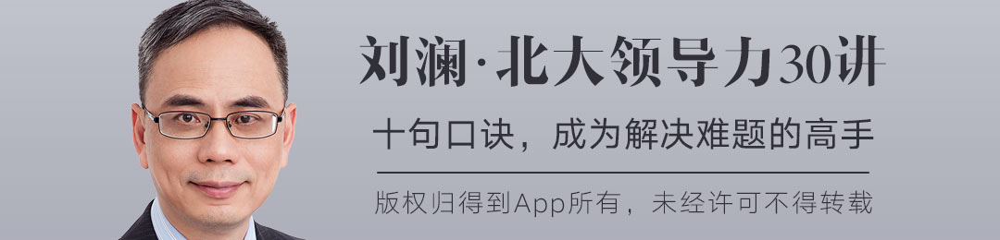
加餐 | 直播复盘：这样学习可以更高效#
谢谢你用生命中的一个小时来听我唠叨。今天的主题叫学习，为什么讲学习呢？两个原因，第一个原因，学习跟领导力有非常密切的关系，我一会儿会告诉你。第二个原因，我觉得学习对大多数人来说，是一个比领导力更重要的话题。
1.学校教育的弊端
我想先给你讲一个小故事，这是发生在我自己身上的故事。十年前中央电视台找到我，他们要做一期纪念高考恢复30周年的节目，希望找一些高考状元参加这个节目。我是1988年四川省高考文科状元，他们说很难找到特别有成就的高考状元，找到我。我说你找不到有成就的高考状元很正常。我后来没有参加这个节目，但是我写了一篇博客文章，非常短，题目叫做《高考状元注定平庸》。
我说为什么高考状元注定平庸呢？因为学校教育教的很多东西只适用于考试，它不适用于社会。你可能知道英文里有一组词，一个叫school smart，一个叫street smart。我上过两个大学，一个北大、一个哈佛，你知道这两个学校教给我最重要的是什么么？就是它们不能教给我的东西。
为什么这么说呢？北大和哈佛有很多毕业生，有些人成功了，有些人失败了，默默无闻。为什么呢？最重要的不是这个学校教给你什么，而是你学到了什么？而从北大和哈佛出来的成功人士有一个共同的特点，他们有一种重要的能力，叫做“去学习”。这是今天我想讲的第一个关键词：去学习。
什么叫去学习呢？这个去是去掉的去，不是来去的去，字是同样一个字，但是意思不一样。一个管理大师说过这样一句话：如果不包含去学习的话，学习是容易的。你身上已经有了一些习惯和东西，你要把它去掉。我今天讲的是成年人的学习，成年人的学习最难的一点是什么呢？就是去学习。要去掉什么呢？要去掉学校教育带给你的危害。
我在领导力课程里讲到了学校对领导力的三大危害，我这里就不重复了。当时我没有讲的内容是什么呢？就是学校教育对学习的危害。学校教育危害了你的学习，听起来有点矛盾对不对？
马克·吐温说过这样一句话，他说我尽力不让学校教育危害我的学习。这是一句俏皮话，学校教育对学习有什么危害呢？
我讲三点，第一，学校教育让我们在学习上是寻求标准答案。比如说如果我问你这样一个问题：什么是激励一个员工的最好方法？这个问题的答案是什么呢？如果你受学校教育危害比较深，你会想是不是胡萝卜还是大棒，还是内在动机，等等等等。
我告诉你这个问题的答案是什么：看情况。我们要看这个员工的情况，我们要看你所在组织的情况，我们要看此时此地的环境等等。所以说什么是激励员工最好的方法呢？它没有标准答案。
但是如果你受学校教育的危害比较深，你就会觉得这个事有一个标准答案。更好的做法是什么呢？更好的做法是寻求参考答案。寻求什么参考答案呢？寻求经典的参考答案。我们脑子里拥有的知识，你可以看作是世界的一张地图，有的人脑子里拥有一个比较准确的地图，有的人拥有的是一个不太好用的地图。为了让我们脑子里的地图更准确、更管用，我们要去学习，看看其他人有没有更好的地图。
但是你要注意，只有一张地图是危险的，比如说你开车用一个地图，走路用另一张地图。但是学校教育告诉我们，有一张标准的地图在那里，而且他们不承认那是地图，他们告诉你世界就是那样的。
我们应该怎么做呢？我们要破除它，我们要寻求经典的参考答案。
学校教育对学习的第二个危害是什么呢？是分科。学校教育是分科的，语文、数学、物理、化学等等。对我们的危害是什么呢？我们到了工作岗位上是要解决问题的，问题是不分学科的，你要运用综合知识来解决它。学校里是学科导向的学习，工作上就很难转化成问题导向的学习，这是学校教育给我们的第二个危害。
第三个危害是什么呢？是碎片化的学习。这个跟分科有一些关系，因为你分了科之后，你这科学一些碎片，那科学一些碎片。然而，很多学科背后实际上有一个共同的底层模式，有一些跨学科的思维模式，你没有学到它。
退一步，就算是在一个学科里面，你学到的也是好多碎片。我们就拿语文举例，语文这个学科你学到的是什么呢？这个人的一篇范文，那个人的一篇范文对不对，一大堆碎片。你并没有学习到好文章的模式。
我在北大汇丰商学院当老师，有一次一个MBA学生跟我说我学了很多课，反正特别多，超过了这个学校规定的很多门，他特别骄傲。我说你不应该告诉我你学了30门课，重要的是你应该告诉我，你学通了三门课。
这一点我想特别对得到的学员强调一下。我觉得得到的学员可能在碎片化学习上进行得比较多，在模式化学习上进行得比较少。
2.元学习
刚才给你讲了第一部分，叫“去学习”，第二部分叫“元学习”。我想问你一个问题，领导力当中最重要的能力是什么？如果选一个能力，你觉得是什么？
如果你听过我上一次直播，我给了一个参考答案，叫做：提问，提问是最重要的领导力。现在我想给你另外一个参考答案，叫做学习力，学习能力是最重要的领导力。
为什么这样说呢？如果你看过上次直播的话，你可能记得我讲过管理者三大能力的模型。这三个能力有一个特点，随着你层级的升高，三个能力的重要性在发生变化。层级越低，技术能力越重要，层级越高，概念能力越重要，人际能力一直都挺重要的。
如果从这个模型出发，你说哪个能力最重要呢？有人可能会说是概念能力，因为最高层次的管理能力是概念能力。也有人可能会说人际能力，因为人际能力一直都很重要。但是我想给你一个参考答案，叫做学习力。为什么呢？因为这三种能力，你看到了，是在变化的，也就是说不同的层级你要掌握不同的能力，那背后的能力是什么呢？学习力。你要在不同的层级学习到不同的能力。
由此发展，我想再给你一个参考答案，在学习力上延伸一步，叫做元学习，就是学习怎么学习。
麻省理工学院的一个教授研究团队沟通，得出一个结论：决定一个团队绩效的不是你们沟通什么，而是你们怎么沟通。我把这句话搬过来，对于一个成年人来说，最重要的不是你学习什么，而是你怎么学习。
今天我想讲三个元学习的技巧，第一个技巧叫做“学通一个老师”。
坎贝尔说，如果你读到一个作者，他讲得很好，怎么办？去读他所有的书，把他所有书中提到的人都再读一遍，看看哪些人都影响了他的思想。
坎贝尔如果你比较陌生的话，那我告诉你，他在美国挺有名的，他一开始是在小圈子里有名，后来成为一些流行文化的偶像，比如说电影导演卢卡斯，就是拍《星球大战》的导演，这个电影就是根据坎贝尔的小说拍的。坎贝尔的建议背后，就是找到这个人底层思维的模式，也就是说你要学通一个老师。
我其实也有类似的感受，比如我自己在管理上受益于两个人，一个是德鲁克，这个比较有名，我就不多说了。另一个对大家来说名气小一些，他叫马奇，是斯坦福大学的教授，已经90岁退休了，不过还健在（在这次直播结束后仅仅一天，惊闻他去世了，非常惋惜）。他是商学院教授、社会学系教授、教育学院教授和政治学系教授，有人在斯坦福把他称为：一切事务的教授。
因为我研究领导力而认识了他，但是后来我从他身上学到了很多领导力之外的东西。从马奇身上，我得到了三个大师的标准，就是我如果选择老师，我会从这三个标准来选择，虽然不是通用的标准，但是我提供给你作为参考：
第一个标准叫做“鹅卵石人格”，我认为好的老师要像鹅卵石。这句话是我从马奇这儿听来的，我有一次问他，说是不是领导者要谦卑？马奇是这样回答我的，他说是又不是。他说比如我是这样看我自己的，我是一颗小小的鹅卵石，但是我是一颗坚硬的鹅卵石。马奇的意思是什么呢？就是说我既谦卑又自信，这是好老师的第一个标准。
讲完第二个标准之后，你会更清楚第一个标准为什么重要。我对好老师的第二个标准是π形知识，你可能听说过T形知识。什么叫T形知识呢？就是一横一竖，一竖就是你要有很专精的地方，一横就是你要广泛涉猎。我再加一竖变成了π，因为我觉得光有一竖不够，因为你很容易陷入锤子陷阱。
我在课上讲过锤子陷阱，是马斯洛说的，他说如果你只会用锤子，你会把所有的东西都看作钉子。而你如果在两个领域有很精通的地方，才能够掌握不止一个领域的思维方式，你才有可能发现不同的领域背后，其实是有共同的底层思维方式存在。
我曾经说过这样的话：如果你只懂营销，那就说明你不懂营销。就是如果你只懂一个领域，我并不觉得你真正懂这个领域，因为这个领域必须放在整体环境当中才能看清楚。
再讲第三个标准，叫做3/3/3感受。这就是我对马奇包括对德鲁克等等老师的感受，好的老师是这样的，读他的思想，有三分之一让你拍案叫绝，有三分之一让你似懂非懂，还有三分之一让你完全不懂。我觉得这是好老师，为什么呢？如果一个老师让你完全拍案叫绝，说明你都搞得懂，这样的老师比你也高不了多少。
马奇、德鲁克给我的感受就是这样的。当然3/3/3这个数字只是一个大致的说法，也可能一半让你拍案叫绝，三分之一让你似懂非懂，还有六分之一完全不懂，你一定能够理解。
请你注意，我刚才说学通一个老师，我没有说听通一个老师。我们在得到学习，听音频，但是，光听音频不够，你要阅读，要读书。学通一个老师，去读他所有的著作，然后把他的著作作为一个线索去读影响他的人的著作，才能真正学通一个老师。
下面我讲第二个元学习的技巧，叫“搞懂一个问题”。
德鲁克说每三年他会选择一个问题，或者一个专题研究。日本有一个咨询顾问，叫大前研一，你可能知道，他每年都写一本新书，选一个专题研究。
要搞懂一个问题怎么做呢？选一个跟你工作相关的问题，成为它的专家。这样做有什么好处呢？就是我刚才讲的，你不是按照学科导向来学习，而是按照问题导向来学习。你要搞懂一个问题，这个问题会牵扯到很多学科，你就必然要打通很多学科，看看不同的学科对这个问题是怎么说的。你在一个问题上形成一个底层模式，它就会告诉你，原来你对其他问题的思考可能也是比较浅薄的，还没有达到探索出底层模式的层次。
这是我刚才讲到的为什么π形知识会导致鹅卵石人格，因为有π形知识的人，他知道我自己搞通了一两个领域，但是还有很多领域我没有搞通，所以我会既自信又谦卑。
我刚才说马奇是好几个学科的教授，但是你知道么，马奇自己说他的兴趣其实很狭窄，他只对几个问题感兴趣，比如说人是怎么决策的，组织是怎么学习的，而要搞清楚这些问题就涉及到很多学科，所以说他才把这些学科都搞清楚。
下面讲第三个元学习的技巧，叫做写好一本笔记。
我之前已经看到，有人说自己的学习方式是记笔记，这很好，不过我这里强调的是写，也就是说你不仅要用手机电脑记笔记，而要用手写。
为什么呢？有研究成果说，打字影响到的神经跟用手写时影响到的神经活动是不一样的，后者效率更高。就算这个研究有局限性，退一步，你想想，很多时候你用电脑、手机记笔记，也就是拷贝粘贴一下，那对你的神经活动影响就更小了。
你不但写笔记，写下来之后还要不时复习一下，复习起什么作用呢？建立连接，不同地方学到的东西在一个笔记本里面，不时翻一翻，所有不同的笔记就在你的大脑里连接起来了。
3.模式化学习
下面讲第三部分，模式化学习，我刚才提到，一种叫模式化学习，一种叫碎片化学习。我们应该进行哪种学习呢？回答不要太快，不要被我误导，实际上两种学习我们都要。
大多数人我想可能两种学习都欠缺，但是你是得到的学员，我觉得你进行的碎片化学习一定挺多的，这表示你已经超越了很大一部分人，不过我猜，你可能欠缺一点模式化学习。
我想给你讲两个我自己提出来的悖论，一个叫做管理大师悖论：管理大师往往不准确。
为什么管理大师往往不准确呢？你想，他既然叫管理大师，那就是很多人都觉得他说得有道理，这就叫做一般性；然而，他得让很多人听懂，他必须得说得比较简单，这就叫简单性。现在我告诉你一个结论，又普遍又简单的东西往往不准确。
我为什么敢这么武断，因为这个不是我提出来的，这个其实是我根据大管理学者卡尔威克提出来的一个模型讲的。他说关于一个理论，我们一定希望它具有一般性、简单性、准确性，但是一般性、准确性和简单性这三者往往不能兼得。
卡尔维克画了一个钟，12点钟位置写了一般性，4点钟位置写了准确性，8点钟位置写了简单性。他说一个理论好像固定了一个位置，离一个性比较近，就离另外两个比较远。那么大多数理论在哪里呢？大多数都在十点钟位置，就是说离一般性、简单性比较近，但是离准确性比较远。
举个例子，比如说你可能都知道的马斯洛需求层次理论，它比较简单，比较一般，但不是那么准确。心理学家做了很多实证研究，没有研究出它的准确性。当然，它还是相对准确的，因为你觉得有启发对不对，大家还都在用它。
我给你讲卡尔威克理论之钟是什么意思？有两个目的：
- 就是说我们很多时候要的不是标准答案，我们要参考答案。参考答案往往就是不准确的，但是它一般、简单。
- 我们刚才讲模式化学习，说道管理大师往往不准确，可是卡尔威克也是管理大师，你刘澜为什么相信他的观点呢？你会注意到，卡尔威克的理论之钟就是一个模式，我们学了这个模式再看很多的理论就更清楚，我是想说学习模式很重要。
下面给你讲另一个悖论，成功企业悖论，也就是一句话：成功企业往往学不会。有本书叫《海底捞你学不会》，我不知道它的结论是什么，但是我告诉你，我觉得不仅海底捞你学不会，华为你也学不会，谷歌你可能也学不会。
这个地方我想给大家介绍，著名的心理学家卡尼曼提出来的两个公式，他是获了诺贝尔经济学奖的心理学家。他写的第一个公式：成功=才能+运气。
比较有意思的是第二个公式：巨大的成功=多一些才能+多很多运气。卡尼曼是不主张你学成功企业的，为什么呢？他说谷歌属于巨大的成功，它确实多了一些才能，但是它更多的是什么呢？是运气。运气是学不到的。
这里我顺便说一下，如果你读卡尼曼的《思考·快与慢》中文版，里面的公式不是我刚才说的那样子。它的中文版翻译错了，我不得不读了英文版，这两个公式是我给你讲的这个样子。
成功企业你学不会，还有一个最重要的理由，叫做模式你学不会。你要注意，实际上成功企业的成功不是一个个碎片的成功，它成功的是一个模式，而你学的时候很容易只是学到一个个碎片。
企业有哪些模式呢？我给你一个参考答案，著名学者霍夫斯泰德，他说我们可以这样来概括企业管理的四种模式，从两个维度。
一个维度是权威的集中化，就是说决策权是集中在少数人手里，还是大家都参与；第二个叫做活动的结构化，就是说公司的制度流程是不是比较多，而且大家都得严格遵守。他说从这两个维度我们可以概括出企业管理的四种基本模式：
- 权威很集中，但是活动不是那么结构化的，这种企业我们可以把它叫做家庭型企业，中国是这种企业的一个代表；
- 权威很集中，结构也很结构化的，这种企业是金字塔型企业，法国企业是这样企业的代表；
- 权威不集中，活动非常结构化的，这种管理模式称为机器型企业，德国企业是这种企业的代表；
- 权威也不集中，活动也不结构化的，称之为集市型企业，英美企业是这种模式的代表。
你注意，我刚才说的是又一般又简单的理论，所以就不够准确，只是给你一个参考，但是非常具有启发性。而且刚才讲到各个国家，其实每个国家都很复杂，都有各种各样的企业，只不过家庭企业在中国多一些。
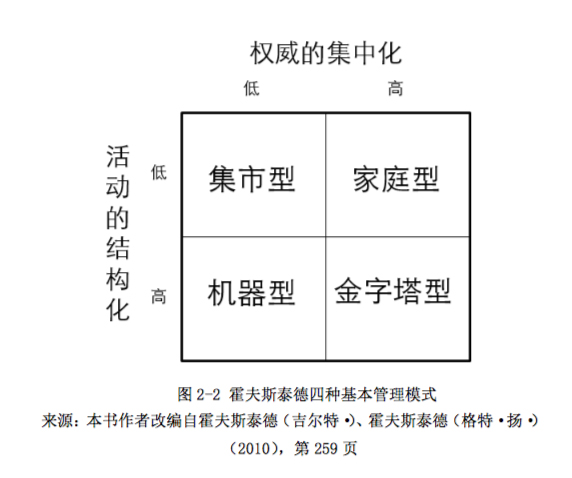
当你学海底捞的时候，海底捞的底层模式是什么？海底捞是家庭型企业，但你的企业可能是机器型企业，那么想学也学不会，碎片拿过来安到你的模式上不一定管用。
碎片化学习，它有三个问题：
- 没有抓住真正的规律在哪里。因为你学到的是碎片，而不是背后的规律，而且有时候你学到的根本不是它好的地方。中国有一个成语叫东施效颦，就是这个意思；
- 就算你学到了对的碎片，拿过来也没用。比如很多时候你学到的是铁锅的碎片，但你想拼一个花瓶；
- 你学习效率不高，如果能够从模式上去学，我们就能够举一反三。
我举个我的例子，我现在看领导力方面的书，可能十分钟就看完了，为什么呢？因为在我眼里，书大概就是一些碎片，我已经有了领导力的一个模式，只是找到一些对我有用的碎片，安在这个模式里。
罗素的老师怀特海说的一句话，特别好：智慧增长，知识就会消减，因为细节会被原则包容。他说的这个智慧就是我说的模式，他说的知识就是我说的碎片。所以我们要学习什么呢？我们要学模式，当你的模式增长了，你的碎片会减少，因为碎片都被你归到各个模式里面去了。
4.三环学习
单环学习是在行为上改变，双环学习是在目标上改变，三环学习是在心智模式上改变。我给你一个比喻，我们说把人比作电脑，单环学习有点像软件升级。比如说这个软件本来用2.0版本，现在用3.0版本，把以前的bug修改，变得更好用了。
双环学习有点像换个软件，比如说你以前只会用画图，现在你改成PS了。
三环学习像改变操作系统，刚才两个都是软件的改变，而心智模式的改变像是操作系统的改变。如果你从Dos升级成Windows，就是一个非常牛的改变。
5.刻意练习
（有用户提问，刻意练习是否是个好方法）
刻意练习很重要，你有可能没听说过刻意练习，但你可能听过一万小时定律，这是对艾利克森理论大众版本的解读。他本人对这个解读是不满意的，他觉得好像一万小时变得很重要，其实重要的不是一万小时的时间，而是花时间去刻意地练习。
- 有特定目标的练习；
- 专注的练习；
- 有反馈的练习；
- 有一定挑战的练习。
不过说到刻意练习，我还想讲讲模式化学习。这里我介绍一个最重要的管理模式，是法约尔的管理五要素模型。如果你学管理，一定要知道，法约尔是一百年前提出的这个模型，他是一个法国总经理，他说管理是什么呢？管理就是计划、组织、指挥、协调和控制。
现在一百年过去了，有没有人超越法约尔的高度呢？我跟你说几个其他人的说法，比如说现在的管理教科书会讲管理的四大职能：计划、组织、领导和控制。你听出来了吧？这是把法约尔的指挥变成了领导，把协调去掉了，五要素变成四个职能。
德鲁克是管理学大师，他说管理者要做这样一些工作：计划、组织、整合、衡量以及人员开发。也是五件事，这是不是跟法约尔不一样呢？一样的，为什么？计划、组织是完全一样的，整合是什么呢？他说整合表现在两个方面，一个是向下整合，一个是横向整合。向下整合是什么呢？就是指挥，横向整合是什么呢？就是协调。他说的衡量是什么呢？衡量就是控制。还有一个人员开发，这是不是新的呢？确实是新的，但是法约尔把它包括在组织当中了，组织是包括人事的，法约尔强调两点，一个是招聘，一个是培训，培训不就是人员开发吗？所以德鲁克只是把人员开发拿出来单独强调。
当然我不是说别人的东西没有贡献，但是听完之后会发现他们是大同小异的，小异的地方才是贡献的地方。但是如果你掌握了大同的地方，我觉得，你会更好地认识小异的地方在哪里。
回到刻意练习，实际上刻意练习跟法约尔的管理五要素也是大同小异的。为什么这样说？第一个是有目标的练习，那就是计划，计划就是要定目标。然后说专注，专注是一个新东西。第三个是反馈，反馈不是新东西，就是法约尔说的控制。第四个说目标要有一定挑战性，要走出舒适区。
你现在看到小异的地方在哪里了，一个是强调目标要有挑战性，另外一个强调了专注。去掉了法约尔的指挥、组织、协调，为什么呢？法约尔讲的是组织管理，刻意练习是个人管理，个人管理跟组织管理就有区别。你要掌握了模式，也就是掌握了大同，你就能够更清楚地看见那个小异，才能够更清楚的看到刻意练习的思想贡献在哪里。
好，这就是今天我们的全部内容，希望能够对你的学习有所帮助。
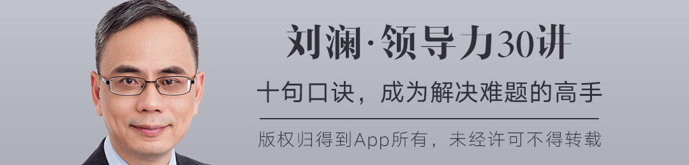
加餐01讲：追随力的三个要点#
你好，我是刘澜，这是领导力课程的第一次加餐，我重点讲一下追随力。为什么要讲追随力？因为你们给我的课程的留言，我每一条都看过。你们的留言告诉我，我需要给你们讲一讲追随力。
听起来，追随力有点像领导力的反义词。其实不是。追随力是一种特殊的领导力。追随力是站在追随者的角度发挥领导力。
你现在已经知道了，不是每个上级都有领导力。同样，不是每个下级都有追随力。追随力很重要，我们每个人都需要追随力。你需要发挥追随力的场景，很可能比需要你发挥领导力的场景还要多。
今天，我给你讲追随力的三个要点：第一，委婉地唱反调。第二，积极地唱反调。第三，向上建立关系。
1.追随力：动员领导解决难题
我在第十讲，讲了领导者要有大格局，要能够容忍唱反调的人，甚至培养唱反调的人。在这一讲后面有好多很相似的学员留言，说自己就是一个唱反调的人，但是结局却很悲惨。
比如，一个叫“方中海”的同学留言说：“为公司服务两年多，一次和老板开会，激动之处指出了公司一些问题。第二天老板扬言要开除我！”
还有一个叫“崔妹”的同学留言说：“前几年我经常唱反调，结果就是一直被当作异类。”
还有一个叫“陈阳浩”的同学留言说：“我就是经常唱反调的人！所以不是被公司开除，就是得罪一大片！”
这样的留言还有好几条，我就不一一列举了。
我想对这些同学说两句话。第一句：你的上级需要提升领导力。第二句：你自己还需要提升追随力。我现在不是面对你的上级，而是面对你，所以我就给你谈谈追随力。
什么是追随力？之前，我给领导力下过一个定义，叫做：动员群众解决难题。现在，我给追随力下一个定义，你猜叫什么？说不定你猜到了，追随力就是：动员领导解决难题。
我再说一遍，追随力是动员领导解决难题。它跟领导力的定义并不矛盾，实际上，追随力是领导力的一种特殊形式。领导力是动员群众解决难题，这里的群众是泛指，就是其他人、很多人的意思。有时候，为了解决难题，你首先要动员一个人或者少数几个人，但是很特殊，你要动员的是你的上级，你就变成了“动员领导解决难题”了。你需要站在追随者的角度来发挥领导力，这个时候，追随力是领导力的一种特殊形式。
在一个组织当中，就算你是一个所谓的领导，你上面往往还有更大的领导，所以追随力应该是你的必修课。遗憾的是，没有学校开设这门必修课。关于领导力的研究很多，关于追随力的研究很少很少。
2.委婉地唱反调
如果我开追随力这门课，一个中心内容就是：如何委婉地唱反调。追随力的一个要点，就是委婉地唱反调。
在现实生活中，跟上级唱反调，大多数时候的结局都不会太好，为什么？这里面当然有上级的问题，但是，很可能还有一个原因，就是你唱反调的姿势不对。
唱反调的主要姿势，就是要委婉。怎么才能委婉呢？方法之一，就是避免当众唱反调。
有个叫“天籁箫语”的同学，他说自己也经常唱反调，但是唱得很成功。为什么呢？他是这样说的：“在决策时我如果有不同意见，觉得老板有不妥就会提出来，说明理由，并指明方向，然后共同讨论，老板都很接受我的意见。但是我不会在众股东面前提出异议，而是单独以商讨或进谏方式提出。”你看，不要当着大家说，而是私下里悄悄说，你给老板留了面子，老板就更可能接受你的意见。
委婉地唱反调，还有一个方法，我把它叫做“为难式唱反调”。我给你举一个我亲身体验的“为难式唱反调”的例子。负责这门领导力课程的得到的主编，叫陆音，他负责看我的稿子，提意见。不止一次，他跟我说，刘老师，你这篇稿子写得太完美了，要提意见真是太为难了。如果你一定要我鸡蛋里挑骨头的话，那么，你可以改以下18个地方……我说18个，是夸张了，陆音没有说那么多，我是想告诉你，他绝对不是因为提不出来意见而为难，他表现出为难，是为了让我更容易接受他的意见。当你要对你的上级唱反调的时候，你可以考虑“为难式唱反调”。
委婉地唱反调，我刚才讲了两个方法，一是避免公开唱反调，二是 “为难式唱反调”，简单地说，就是先恭维，然后表现出很为难的样子唱反调。
委婉地唱反调还有第三个方法，可以叫做“借力唱反调”。站在追随者的角度发挥领导力，明显有个不利因素，就是你对上级没有职位权力，而且反过来，他对你有职位权力。这个时候，如果你要唱反调，你可以考虑借力，求助于那些权力更大的人。
我刚才讲到，课程主编陆音在对我发挥了追随力，使用了“为难式唱反调”。陆音不只会一招，他还用过“借力唱反调”。有一次，他觉得有一讲的内容必须要大改。他是怎么做的呢？他说，哎呀，这一讲我拿不准，筱颖，你能不能看一看，给刘老师提提意见？筱颖是他的上级，他求助于他的上级，让他的上级跟我谈。
我之前讲过遵义会议的案例，毛泽东在遵义会议上唱了反调，但是他首先不是自己站出来，而是让地位比他高的张闻天站了出来，毛泽东也是“借力唱反调”。
所以，当你想要对总经理唱反调的时候，你先想一想，有没有可能借助于副总经理去唱反调？
我刚才讲了委婉地唱反调的三种方法，避免公开唱反调，为难式唱反调，还有借力式唱反调。委婉地唱反调，是追随力的一个要点，但并不是唯一的要点。
3.积极地唱反调
我之前讲过，追随者的态度可以从两个维度来看，是否独立思考，还有是否积极参与。积极参与这个维度，要求你的反调是积极的。追随力的第二个要点，就是要积极地唱反调。
怎么积极地唱反调呢？我也讲三个方法。
第一个方法，就是反调中要有建设性的内容。你不能只说上级的方案不行，你得尽量提出你觉得行的方案。有个叫“小小鸟”的同学在留言中说了这么一句话：“不接受批评，只接受建设性意见。”这句话就非常好。你如果只是提出批评，没有提出建设性意见的话，上级是很难接受的。
第二个方法，就是在决策前唱反调，而不是在决策后唱反调。这一点，很多同学在留言中都提到了。有个叫“佛祖门徒”的同学留言比较早，我就引用一下他的说法。他是这样说的：“发表不同意见的时机应该主要在决策形成前，一旦形成决策，首先确保执行。”你如果有意见，决策前不说，决策后再说，那可以说是发牢骚，可以说是拆台，总之，绝对不是积极地唱反调。
我刚才讲了积极地唱反调的两个方法，第一，要有建设性的内容，第二，要在决策前提出来。
现在我讲积极地唱反调的第三个方法，在参与的前提下唱反调。有个叫“离河”的同学在留言中说：“作为员工，唱反调需要以自己的肩膀为尺度，能担多大责唱多高的反调。这样不管被不被否定，至少不会被当做无理取闹。”这个同学说得真好。你唱反调所针对的事情，一定是在你的参与范围之内的，至少是你跳一跳可以够得着的。而且，你不只是动动嘴皮子，你已经准备好了承担责任，你准备好了挺身而出，对上级说：“我来！”
我刚才讲了积极地唱反调的三个方法：要有建设性的内容，要在决策前提出来，要以参与为前提。积极地唱反调，是追随力的第二个要点。
4.向上建立关系
下面，我讲追随力的第三个要点：向上建立关系。
我在第九讲讲过了，领导力是一种关系。我新提出的追随力，是一种特殊形式的领导力。尽管形式特殊，但是本质不变，追随力也是一种关系。既然是关系，你在行动的时候，就要考虑到另一方的情况。这一点，不只一个同学在留言中涉及了。他们指出，你是不是唱反调，怎么唱反调，需要考虑你所在的是什么样的公司，面对的是什么样的上级。
还有一点，好像还没有人在留言中提到过。我讲过，关系分为交易型关系和变革型关系，我们可以从交易型关系出发，来建立变革型关系。这一点，同样适用于追随力。你想要以追随者的身份领导你的上级进行变革吗？先和他建立良好的交易型关系。你看，如果你把追随力看做领导力的一种特殊形式，我们讲过的领导力的内容，你都可以套用到追随力上面，你多了很多新的看待问题的角度。不仅如此，你还多了很多解决问题的方法。
总结：
好，我是刘澜，我们下一讲再见。

加餐02讲：领导力原来是美好的#
你好，我是刘澜，这是领导力课程的第二次加餐。我讲的主题是“领导力是美好的”。我要给你讲领导力之所以是美好的，是因为它有四大特征。
1.一位学员的留言
在我讲这四大特征之前，我要给你讲一个学员的故事。因为有了这个学员的留言，才有了这一次加餐。这个学员叫“Dr. Towns”，他/她在听了第18讲之后留言说，他/她之前犹豫过，“要不要订阅这么一门让人恶心的课”，学到现在他/她发现这门课很值，用他/她的原话说，是“这门学问不恶心，反而很香（啊，真香~）”。
我这是第一次听人用“恶心”这个词来修饰领导力课程。我于是好奇地问他/她，那你当初为什么要订阅这门课呢？
“Dr. Towns”这个学员回复了我说，如果领导力的关键词真的是“话术”、“权力”之类的，他/她内心是不喜欢的，但是如果学了可以帮他/她赚钱，他/她还是会学的。下面是他/她的原话：
但是意外惊喜是，领导力是个很美好的东西，我以前误解了它，我相信这世上没有学过您教的这个课的很大一部分人也都误解了它。
然后呢，我给他/她回复了一句话，你如果有读留言的习惯的话，可能已经看到了。我说：“我明白了，你本来想跟着我学坏，没想到被我教好了……”
这个学员的留言，还有其他一些类似的留言，教育了我。我发现我掉入了一个误区，心理学上叫“我方立场偏差”，就是我是这么看问题的，我就以为别人也是这么看问题的。我一直认为领导力是美好的，我现在才知道，或者说更加深刻地领悟到，还有很多人不这么认为。所以今天我专门讲一讲：领导力是美好的。领导力不是教你学坏，领导力一定是教你学好。
2.领导力求真：斯托克代尔悖论
我对领导力的定义是八个字：动员群众，解决难题。我反复说这个定义，你应该印象很深刻了。这个定义本身就决定了，领导力是美好的。领导力的美好，可以用四个字来概括：真、善、美、难。你也可以说，这是领导力的四大特征。领导力之所以美好，就是因为它具备了这四大特征：真、善、美、难。
我先说第一大特征：真。领导力求真。领导力的着眼点是解决难题。每个人、每个组织都有难题需要解决。我说领导力求真，就是说你需要勇敢地面对你需要解决的难题。
这里我想给你讲一个“斯托克代尔悖论”。管理大师吉姆·柯林斯发现，那些伟大的领导者都有这样一个特点：他们对未来充满信心，但同时直面残酷的现实。
柯林斯把这个特点称为“斯托克代尔悖论”。斯托克代尔是美军的一个英雄，他在越南战争的时候当了战俘，在战俘营被关了七年多。柯林斯问斯托克代尔：哪些人没能活着离开战俘营？斯托克代尔说，是那些乐天派。柯林斯一开始不明白。斯托克代尔给他解释：
就是那些人，他们说，“圣诞节前我们会出去”。圣诞节来了，圣诞节又过了。他们又说，“复活节前我们会出去”。复活节来了，复活节又过了。然后是感恩节，然后又是圣诞节了。然后他们心碎而死。
现在，柯林斯明白了。斯托克代尔接着说：
这是非常重要的一课。你不能二者混淆，一方面是你最终必将胜利的信念，这一点绝对不能失去，另一方面是直面当前最残酷的现实的修炼，不管是怎样的现实。
现在，你明白了吗？不管是个人还是组织，都需要同时做到这两点，既要保持必胜的信念，又要直面残酷的现实。直面残酷的现实，这就是领导力的求真。
关于直面残酷的现实，我有两点需要提醒你注意。第一，你不仅需要自己直面残酷的现实，还要用其他人能够接受的方式，帮助他们直面残酷的现实。第二，你自己的现状也是残酷现实的一部分，你需要直面你自己。
3.领导力求善：再说“希特勒问题”
我刚才说了领导力的第一大特征，求真。现在我说第二大特征，求善。领导力的求真，是直面难题，领导力的求善，就是解决难题。你要注意，你只解决自己的难题，那不是善，那是自私自利。你要解决一个集体的难题，那才是善。
这里，我想回过头来，再说说领导力的“希特勒问题”。我在第七讲，说希特勒没有领导力，因为他没有解决德国的问题。有人留言问：如果希特勒成功了呢？那他是不是就有领导力了呢？类似的留言不止一条，说明这是个比较普遍的疑问。
我的观点是：希特勒的解决方案就是错的，就算他成功了，他也没有领导力。他的解决方案，建立在屠杀犹太人、侵略其他国家的基础上。即使他侥幸成功，貌似造福了一个小集体，但是他给更多的人、更大的集体带来了灾难，这不是善。而且，因为它制造了更大的矛盾，他不可能长期成功。
4.领导力求善
说到希特勒，我觉得我更理解为什么有些人觉得领导力不美好了。希特勒一度也是“成功人士”啊。很多人有个误解，认为所谓的“成功人士”的“成功学”就是“领导力”。
万通地产的创始人冯仑，被称为地产界的思想家。冯仑写过一本书，叫《野蛮生长》。他在书里有一个比喻，把企业比作一座庙。冯仑说：
老公快死了的不幸的妇女，在庙里烧香、求告、布施，带着希望回了家，是客户。敲好木鱼、点好蜡烛、收好箱子的小和尚，是职业经理人。小和尚后面的大和尚，是企业家。客户拿走的是一包香灰和99%的希望。第二年妇女的儿子快死了还会来，尽管回去后老公儿子都死掉了，无怨无悔，这是客户忠诚度。
冯仑得出了这样一个结论：“只要能做到给客户1%的使用价值和99%的希望，就是最好的企业。”
读到冯仑这个地产界思想家的思想，不知道你怎么想。最好的企业，应该去发现那位不幸的妇女的老公和儿子要死的原因，而且把他们治好。
领导力求善，不仅为自己创造价值，而且要为社会创造价值。
这里，我想给你读一段惠普公司的共同创始人大卫·帕卡德的一段话。这是他在1960年对员工的一次演讲。他说：
我们为什么会在一起？我想，很多人误以为公司存在的目的只是为了赚钱。这一点其实只是一家公司存在的一种重要结果，我们必须进一步深入地去发现我们存在的真正原因。在探讨时，我们不可避免会得出一个结论：一群人结合到一起，以我们称之为公司的机构存在，是为了能够合力完成一己之力无法做到的事情——对社会做出贡献。
帕卡德深刻地认识到，企业的目的不是赚钱，而是为社会做贡献，赚钱只是你为社会做了贡献的结果。企业是这样，做人也是这样。
我再重复一遍这一句很重要的话：
一群人结合到一起，以我们称之为公司的机构存在，是为了能够合力完成一己之力无法做到的事情——对社会做出贡献。
如果你认同帕卡德，想要动员群众解决难题，为社会做出贡献，那么我很愿意与你携手同行。
5.领导力求美：创造力和独特性
领导力有四大特征，我刚才讲了两个，求真、求善，我现在讲第三个：求美。你知道，美是非常难定义的。在领导力中，求美就是要有创造力，要有独特性。比如，乔布斯打造iPhone，要为社会解决手机不好用的问题，这是求善。但是他还必须要有创造力、想象力，要跟别人不一样，要超越别人，也就是要求美，社会才会认可你提供的价值。
6.领导力求难：美好的东西往往很难
我刚才讲了领导力求真、求善、求美。真善美都有了，领导力当然是美好的东西。不过，美好的东西往往很难。所以领导力还有第四个特征，就是领导力很难。
前面三个特征，都说明领导力很难。领导力求真，不仅要自己直面残酷的现实，还要动员群众直面残酷的现实，这很难。领导力求善，不仅是造福自己，而且要造福社会，你解决难题的方式不是你死我活，而是要尽量做到双赢，也就是从二元对立的心智模式变成整合思考的心智模式，这很难。领导力求美，你要动员群众创造性地解决难题，这也很难。
我想提醒你，领导力之所以是美好的东西，不仅仅是因为领导力求真、求善、求美，还因为领导力很难。真正美好的东西，就好像伟大的艺术作品一样，不是那么容易得到的。我们追求领导力，不仅是求真、求善、求美，而且是求难。
苏格拉底说，没有经过反省的人生不值得过。我改一下，我说：容易的人生不值得过。我再把其他三个特征加进去，完整地说一遍：不真、不善、不美、不难的人生不值得过。领导力是动员群众解决难题，你首先要把自己动员起来，把自己的人生创作成一件艺术品。
总结：
最后，感谢“Dr. Towns”和所有留言的学员，你们让我学到了很多。真的，你们的留言也许是我在这个课程中最大的收获。

发刊词：你为什么需要领导力#
你好，我是刘澜。我郑重地邀请你，进入我的领导力课堂。
也许你会问：我为什么要学习领导力？
很多人觉得领导力跟自己没多大关系，我觉得那是他们对领导力这个话题有误解。下面我列举了三个误解，跟你讨论一下。
1.领导力是跨学科的心智模式
第一个误解，觉得领导力只是局限于商学院的学科。
领导力研究从来没有局限在商学院。实际上，因为商学院本身是个新生事物，商学院研究领导力是相当晚的事情。
在领导力研究史上，最经典的一个定量研究，是研究企业CEO对企业业绩到底有多大影响，是两个社会学家做的。
在领导力研究史上，最经典的一本学术名著，是出版于1978年的《领导力》Leadership，是一个政治学家写的。
而在西方，公认影响力最大的一本中国领导力著作，是一个军事家写的——《孙子兵法》。
领导力不是一门学科，而是跨越整个社会科学的一个核心课题，它为你提供的是跨学科的心智模式。领导力是跨学科的智慧，而不是单一学科的知识。
2.领导力帮你承担更大的责任
第二个误解，我的职位不够高，我不需要学领导力。
很多人认为领导力只是企业高管的事情。
的确，在很多企业里，你成为高管的一个标志，就是被安排参加领导力培训。
我在北京一所大学的商学院演讲时，曾经有个学员站起来提问，说：“我对当领导不感兴趣，我该怎么办？”
当时，我用了一个问题来回答他。我反问：“你对责任是否有兴趣？”
领导力跟责任联系在一起，责任越大，越需要领导力。
你想要承担更大的责任吗？
领导力和你的职位无关，它是在帮助你准备好承担更大的责任。
3.领导力帮你解决人生难题
也有人会说，我不想在组织中承担更大的责任，所以我不需要领导力。这是第三个误解。
斯坦福大学有位传奇教授叫詹姆斯·马奇，他有一门课程叫“组织领导力”，是领导力教育史上的传奇课程。
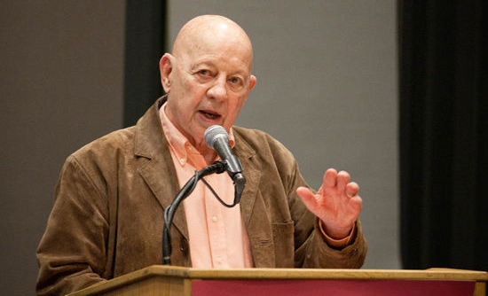
你知道马奇使用的教材是什么吗？是四本文学名著，托尔斯泰的《战争与和平》，莎士比亚的《奥赛罗》，萧伯纳的《圣女贞德》，还有塞万提斯的《唐·吉诃德》。
为什么呢？马奇说，他之所以用文学名著来讲领导力，是因为领导力面对的基本难题，就是人生的基本难题的回响。而讲人生的基本难题，还有什么比文学名著讲得更好呢？
领导力就是解决难题，包括解决组织的难题，更包括解决人生的难题。
不论你是否想承担更大的责任；
不论你是否处在领导职位；
不论你是否拥有自己的团队；
我相信，你不会觉得自己的人生不再需要解决难题了。
学习领导力，是为了更好地解决人生的难题。
所以，你有三个理由学习领导力：
- 建立跨学科的心智模式；
- 为承担更大的责任做好准备；
- 更好地解决人生的难题。
4.为什么是我为你讲
为了帮助你做好这三件事情，我做了三个方面的准备。
第一，我向所有世界级的领导力大师学习。他们中的绝大多数人，我都当面请教过，包括刚刚提到的马奇，以及我们课程中将会提到的沃伦·本尼斯、约翰·科特、罗纳德·海菲兹、彼得·圣吉、霍华德·加德纳，还有很多其他人。
第二，我建立了自己的思想体系，可以概括为“领导力十律”，就是十条重要的领导力法则。这十条法则，不同的领导力大师们都分别提到过，但是把它们组合成一个体系，这是我的一个贡献。
第三，我提出了十句领导力口诀，帮助你学习这十条法则，帮助你在实际的工作和生活中发挥领导力。这十句口诀听起来简单，但用起来很有效。在课程中，我不仅给你讲背后的道理，为什么用这十句口诀，而且会具体地给你讲怎么用。它可以帮助你解决难题，还可以帮助你动员团队解决难题。
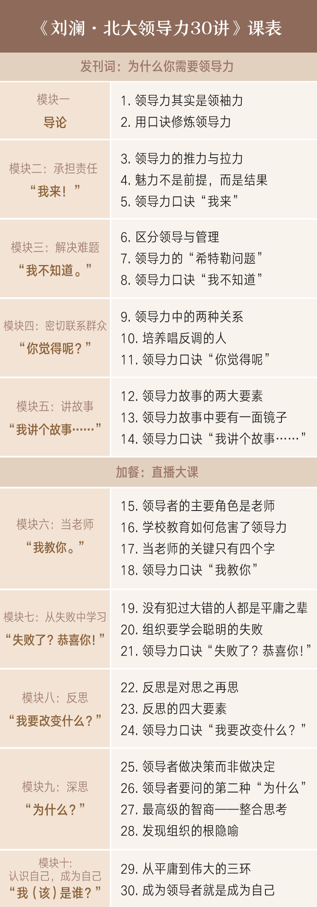

学习指南：如何高效学习这门课#
你好，欢迎来到《刘澜·北大领导力30讲》，我是主编、这门课程的助教，很高兴为你提供知识服务。
你现在看到的课程内容，是我们邀请正道领导力中心创始人、北京大学汇丰商学院副教授——刘澜老师开设的领导力课程。
欢迎你走进领导力课堂，每天10-12分钟，打造属于你的领导力。
更新时间： 每天 00:00 （7月2日晚6:00上线01讲，7月3日00:00开始每天更新，总计30讲内容）
学习目标： 这门课希望帮你搭建关于领导力的知识体系，掌握领导力的10项核心修炼，并且和你分享10句口诀，助你在实战中快速建立领导力。
模块设置·这门课会怎么对你讲？
这门课的10个模块对应着10项领导力的重要修炼，每项修炼，刘澜老师又为你提供了一句领导力口诀，它们一一对应。
（导论包括了刘澜老师希望你破除的误解，以及提前掌握的基本概念。刘澜老师还提出了独到的学习方法：用口诀学习领导力，你可以在其中找到这么做的原因。）
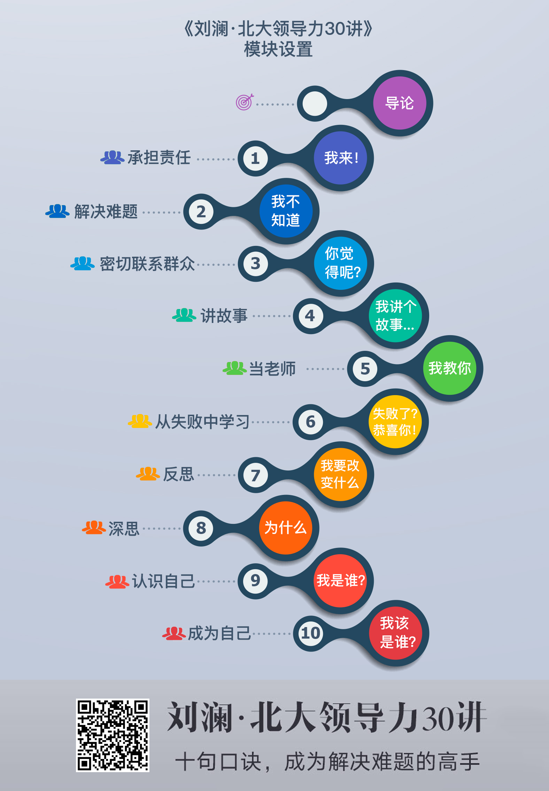
学习环节·这门课该怎么学习？
1.利用口诀学习
学习这门课程最有效的方法，是把理论与领导力实践相结合，10句领导力口诀是你的第一辅助工具。
这十句口诀不仅能帮你吃透知识点，还可以拿来直接使用。
刘澜老师和我已经把这十句口诀做成了精美的卡片，参考下图，在课程的对应章节放出，供你收藏与分享。
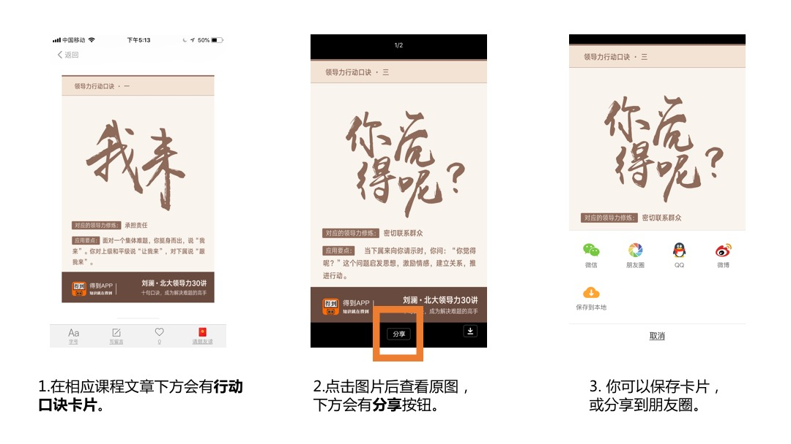
如果你是团队的leader，你可以把这些卡片分享到微信群或是朋友圈中，你的团队成员会很快理解你的意图，即使没有接触过领导力内容的人，也可以明白。
刘澜老师希望领导力知识变成你的团队共识，从而提高工作效率。相信这种形式的分享，一定不会引起其他人的误解。
如果你还不是一名领导者，这些卡片供你收藏，你可以用这种方式提示自己，如何做能够在团队协作中，更好地达到目标。
2.充分利用加餐与直播大课
• 直播大课：在课程上线一段时间后，刘澜老师会安排一次得到直播间的直播大课，他会结合课程前半段的反馈信息，为你带来一场关于领导力的专题辅导，让你更好地掌握领导力知识。
• 学习与自测：在课程中，我们会根据你的反馈，不定时更新关于领导力的测试题，这些测试题都会由刘澜老师亲自拟定，它们会帮你检测学习效果，同时以另一种方式，帮你划重点、敲黑板。
• 提出你的疑问：在课程中，刘澜会根据你的反馈，不定时集中回答具有代表性的问题，我们会以加餐文章的形式，更新在课程中，所以千万不要错过机会，多多提出自己的问题。
攻略1：写下你的观点，与刘澜老师交流
• 点击文稿下方的「我的领导力感悟」，或写留言按钮，留下你的看法和洞察或者希望刘澜老师回答的问题；
• 有价值的问题会收到刘澜老师的回复，其中特别有价值的问题，刘澜老师还会在加餐或是直播中做系统回答；
• 这样的留言被精选的概率更大：分享给他人的增量知识、独特的见解、真实的经历、和刘澜老师的交锋。如果你觉得留言精彩，可以点击留言右上角的「大拇指」为留言的同学点赞。
多反馈和互动，让课程为你提供帮助，真正发挥课程在你学习和成长中的价值。
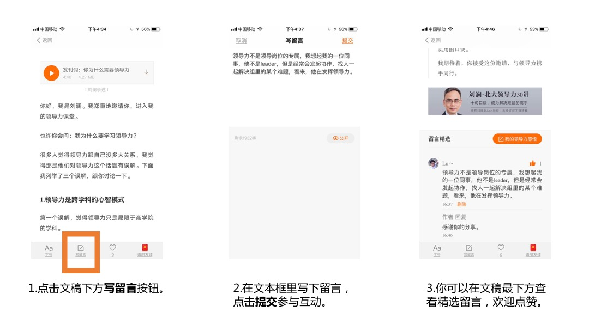
攻略2：使用倍速听，让学习效率更高
• 如果你想在更短的时间内听到知识密度更高的内容，你可以展开「音频播放器」-点击「更多」-「倍速播放」选择你想要的倍速。
• 我们为你提供0.7倍语速、1.25倍语速、1.5倍语速、2.0倍语速、3.0倍语速，你可以根据你的信息接收需要，用更少的时间听到更多的内容，节省学习时间。
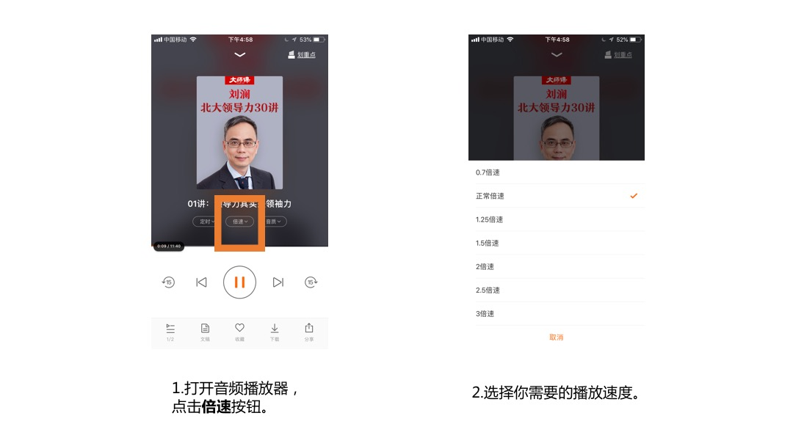
攻略3：分享课程知识，帮朋友解决问题
• 看到干货和金句，你可以选中文稿，点击「分享」，生成金句卡片，分享给需要的朋友或者直接发到微信朋友圈；
• 当然，如果你希望有更多的人了解《刘澜·北大领导力30讲》的内容，点击文稿右下角的分享按钮 ，直接把课程分享给朋友。
《刘澜·北大领导力30讲》本身也是高效的团队社交工具，你可以随时分享给需要的团队成员、朋友、同事，在分享中学习和交流，你和你的团队都会有更大的进步。
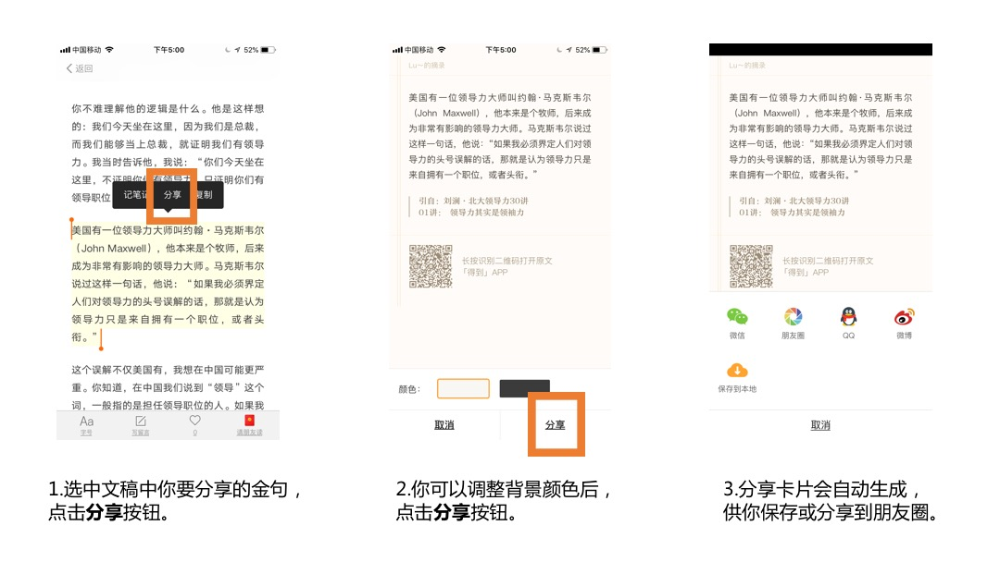
攻略4：收集知识点，丰富你的知识账本
• 在每讲课程的底部，刘澜老师都会为你总结知识点，方便你巩固和运用知识。你可以点击「添加到笔记」按钮，把知识点保存到你的知识账本中，方便你复习整理。
攻略5：掌握系统功能，高效学习课程
• 如果你是中途加入课程，可以切换列表顺序，从头开始学起；
• 如果你不方便看文稿，可以选择「听音频」，做家务、上下班路上、健身锻炼时都能学习；
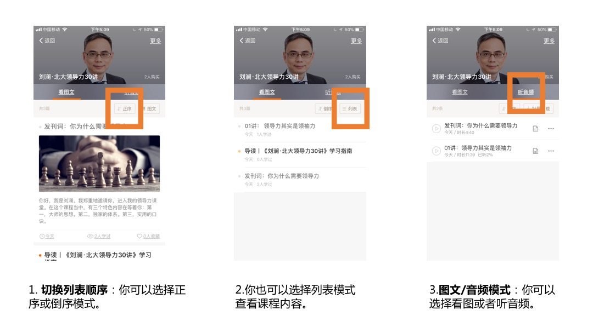

导论01讲： 领导力其实是领袖力#
你好，我是刘澜。欢迎来到我们的领导力课程的第一讲。
1.领导力是责任
你可能会想：如果我不想当领导，还需不需要学领导力？
曾经有一个年轻人问过我同样的一个问题。当时我在北京一所大学的商学院做演讲，演讲的题目就是领导力。有一个MBA学员站起来提问，他说：“我对当领导不感兴趣，我该怎么办？”
当时我用了一个问题来回答他，我反问他，“你对责任感不感兴趣？”他好像领悟到了什么，说“有”。我说：“如果你对责任有兴趣，如果你想承担更重要的责任，你就需要发挥领导力。”
关于领导力，你需要知道的第一个要点就是：领导力是责任。
这不是我一个人要强调的要点，很多人都强调这个要点。管理大师彼得·德鲁克就说过这样一句话，他说：“领导力不是头衔、特权、职位或者金钱，领导力是责任。”
领导力就是解决问题，领导力的责任就是承担解决问题的责任。不过，不是任何问题都是领导力的责任，是你一个人解决不了的问题，是你一个人要带着一群人才能去解决的问题。这是领导力所面对的问题。
2.甘地的领导力
我举一个你非常熟悉的例子，甘地。如果你去问世界上那些研究领导力的有名的学者这样一个问题：二十世纪最伟大的领导者是谁？举出三个名字。这三个名字当中，我猜一定会有甘地。
甘地是公认的二十世纪最伟大的领导者之一，他领导了印度的独立运动，而且他领导这个独立运动的方式很有特色，我们在中学课本都学过，叫做非暴力不合作。甘地在印度发起了非暴力不合作运动，就带领印度取得了独立。但是你要注意，这个问题不是甘地一个人解决的，是甘地带领着许多人一起解决的。
国家有问题，组织有问题，家庭有问题，公司有问题。每个团体都有问题需要解决。它可能是印度独立这样的问题，也可能是要推进一项新的绩效政策，打开一个新的产品市场这样的问题，这些问题都是一个人解决不了的问题。领导力的本质就是承担解决这些问题的责任。
3.对领导力的头号误解
领导力就是解决问题，领导力就是承担责任，这句话听起来比较简单，但是其实有很多人都不知道这一点。关于领导力，有很多的误解。我们刚才说到的那个MBA学员，他的误解就是把领导力跟职位划上等号，这个误解很多人都有，不是说年轻的MBA学员有，包括公司的总裁同样可能有对这个问题的误解。
我在一个总裁班讲课，有一个学员就说：“我们今天坐在这里，就是我们有领导力的证明。”
你不难理解他的逻辑是什么。他是这样想的：我们今天坐在这里，因为我们是总裁，而我们能够当上总裁，就证明我们有领导力。我当时告诉他，我说：“你们今天坐在这里，不证明你们有领导力，只证明你们有领导职位。”
美国有一位领导力大师叫约翰·马克斯韦尔（John Maxwell），他本来是个牧师，后来成为非常有影响的领导力大师。马克斯韦尔说过这样一句话，他说：“如果我必须界定人们对领导力的头号误解的话，那就是认为领导力只是来自拥有一个职位，或者头衔。”
这个误解不仅美国有，我想在中国可能更严重。你知道，在中国我们说到“领导”这个词，一般指的是担任领导职位的人。如果我问你：“你们公司的领导是谁？”你说的一定是那个担任领导职位的人。
4.领导力和领导职位的联系
但是你也知道，担任领导职位并不等于有领导力，领导职位不是领导力。那它们之间有没有关系呢？
我经常使用这样一个比喻，既讲它们的区别，也讲它们的关系，叫做“领导力像爱情，领导职位像婚姻”。爱情不等于婚姻，领导力不等于领导职位。
但是你也知道，爱情和婚姻之间有很密切的联系，那么领导力和领导职位之间也有很密切的联系，它们之间的密切联系是什么呢？
我用这样两句话来概括，第一句，领导力是领导职位的责任；第二句，领导职位是领导力的资源。
领导力是领导职位的责任。比如说你是公司的人力资源总监，你担任了一个职位。那为什么要给你这个职位呢？就是要你解决公司在人力资源上的问题。同样如果你是销售总监，就是要你解决把产品销售出去的问题。给你这个职位就是要你解决相应的问题，承担相应的责任。
领导职位是领导力的资源。组织为你提供了一个职位，这个职位就会带来相应的权力，带来相应的资源，可以帮助你更好地解决问题。
我说，领导力是领导职位的责任，你有没有发现，即使你没有领导职位，你同样也可以承担领导力的责任呢？领导力的责任是什么？就是解决问题。你没有领导职位，但是如果你去解决问题，那么你就是在发挥领导力。比如说甘地，他在大多数时间都没有担任什么职位，但是他一直在承担解决问题的责任，而且最后成功地解决了印度独立这个问题。甘地没有职位，但是他有领导力。
5.领导和领袖的区别
我们刚才讲到了，在中文里，我们一般把担任职位的人叫领导。那么真正发挥领导力的人，我们中文里其实有另外一个词，叫做领袖。领袖指的是真正带领大家解决问题的人。有时候就会出现这样的情况，说这个人是你们团队的领导，但是另一个人才是你们团队的领袖，甘地就是这样一个典型的例子。他不是领导，但是他是领袖。
我还想到了我身边的一个例子，我有个大学同学，他本科毕业之后去了一家报社工作，当时我留在学校里读研究生，过了一段时间我给他打电话，我跟他开玩笑，我问，“你有没有当上领导？”他的回答让我当时非常地佩服。他说，“要当领袖，而不是当领导”。当然了，他后来也成为了领导。但更重要的不是他成为了领导，而是他成为了传媒行业一个非常有名的领袖。
所以说领导力更准确的说法其实是领袖力。不过我们对“领袖”这个词也有误解，我们把它高大化，神话化了。我们要记住，真正承担责任，带领大家解决问题的人就是领袖。
我们这个课程的特点就是研究的是领袖，而不是领导。
6.学院派一般研究领导
这跟学院派研究的不太一样，学院派一般研究领导，研究担任领导职位的人。你可能知道，哈佛商学院是世界上最著名的商学院之一，哈佛商学院现在的院长叫尼丁·诺瑞亚（Nitin Nohria），他是在2010年的时候上任的。他上任之前，我见过他，那个时候已经宣布了他要当院长，但是他还没有上任。我正好去哈佛商学院参加他们的年度领导力论坛，诺瑞亚是这个论坛的发起人之一。
当时任命诺瑞亚当院长，大家是比较惊讶的。首先他是一个印度人。这略微让人有点惊讶，但不算很让人惊讶。你可能知道，印度人在美国商业界和学术界的地位还是很高的。更让人惊讶的是，他是一个领导力的学者。在美国商学院里，研究领导力的学者地位是不高的，主要的原因是学术界觉得领导力的研究很难量化，不够科学。这是哈佛商学院历史上第一次任命一个研究领导力的学者当院长。
哈佛商学院另外一个领导力的教授私下里跟我讲，说现在诺瑞亚当院长了，以后领导力的地位也许会高起来。
领导力的学者地位不高，还有另外一个原因，就是学术界还有这样一个观点，领导力不重要。要说到这个观点，我们就要回顾一下领导力研究史上最经典的一个定量研究。这个研究还不是领导力的学者做的，是两个社会学者做的，发表于1972年。他们研究了美国167家企业，研究对公司业绩影响主要有哪些因素。他们研究的结果发现，谁当CEO，对公司的业绩影响是最小的。
后来的后续研究，基本上没有推翻这个结论，有人根据这些研究，得出了这样一个结论，就是说领导力不重要。你觉得这个结论对不对呢？我觉得这个结论不对，我觉得从他们的研究得不出这个结论。为什么呢？因为他们的研究对象有问题，他们研究的是领导，不是领袖。你可以说谁当领导不重要，但你不能说领导力不重要。
要真正发现领导力是什么呢？我们要研究领袖，而不是研究那些当领导的人。我们要研究那些真正地发挥了领导力的人，他们可能是领导，也可能不是领导。比如说甘地。但是他们有这样一个共同点，他们都承担了责任，他们都解决了问题，他们不是一个人解决了问题，他们是一个人带着一群人解决了问题。
他们是怎么做到的？这就是我们这个课程的主题。
总结：
好，我是刘澜。这是我们领导力课程的第一讲，我们第二讲《用口诀修炼领导力》再见。

导论02讲：用口诀修炼领导力#
你好，我是刘澜，欢迎来到我们的领导力课堂。这是第二讲。
这一讲我给你介绍一个我的独家思想，叫做领导力口诀。这也是我们这门课程的一大特色。我们的课程就是围绕十句领导力口诀展开的。
1.共军与国军的领导力差别
你如果想要提升领导力，会发现这件事情很难。确实是这样，提升领导力是一个艰难的过程，但是也有方法。使用领导力口诀就是一个有效的方法。
我给你举一个使用口诀的例子。我们都知道，之所以能够在1949年建立新中国，是因为共产党的军队打败了国民党的军队。共军靠什么打败国军？我有一个简单的答案：共军打败国军，靠的是一句领导力口诀。
什么口诀呢？这是我从电影里看到的。我小时候看共军和国军打仗的电影，对这样的画面印象很深刻：共军的军官挥舞着手枪，冲在了队伍的最前面，喊：“同志们，跟我上！”国军的军官呢，也挥舞着手枪，但是他们是站在队伍的最后面，喊的是“弟兄们，给我上！”
共军的领导力口诀是“跟——我上”，国军的领导力口诀是“给——我上”，尽管只有一字之差，但是格局就完全不同了。哪一句口诀更有效呢？我想历史已经给了我们答案。
2.言为心声
刚才讲的共军和国军的例子，其实可以用来回答这样一个问题：怎么快速判断一个人的领导力？怎么判断呢？答案之一就是听他说话。有个成语叫“言为心声”。我们可以通过听一个人说话，来判断他的领导力。
你听没听说过这样一句话：小胜凭智，大胜靠德。这句话听起来很有哲理，对不对？取得小的胜利靠智谋，取得大的胜利靠品德。这句话是谁说的呢？牛根生。这是牛根生的一句著名的话。我刚才说听人说话可以判断领导力，那如果听牛根生说这句话，是不是说明他很有领导力呢？我来带着你再仔细听一听这句话。
你可能还记得2008年中国出过一件大事：三聚氰胺事件，也叫毒牛奶事件。中国乳品企业在这个事件中几乎全军覆没，蒙牛也不例外。这个时候呢，有人把牛根生这句话改了一下。原话是“小胜凭智，大胜靠德”。有人给它各加了一个字，改为“小胜凭弱智，大胜靠缺德”，用来嘲笑牛根生。
这个时候回头看，牛根生当初说“小胜凭智，大胜靠德”的时候，是不是他的心声呢？我觉得他多多少少是真诚的。只不过，你要仔细听才能听到他真正的心声。
你仔细听一听，小胜凭智，大胜靠德，这句话里哪个字出现的次数最多？对了，是“胜”，牛根生真正要强调的是胜。牛根生最重要的价值观也许不是智也不是德，而是“胜”。
3.领导力像高考
你可能会问，那么，牛根生到底有没有领导力呢？牛根生能够白手起家把蒙牛做起来，一定有他很有领导力的地方。但是，领导力像是高考，不是考一门，而是要考很多门。牛根生在有些科目上考得好，有些科目就不见得那么好。
牛根生在领导力的哪些科目上考得不好呢？我还是回到这个词，言为心声，我再用牛根生自己说过的两句话，来分析一下他的领导力。
第一句话，是在三聚氰胺事件发生之后，牛根生在内部的高管会议上说的。出了大事，内部高管开会，牛根生说了这样一句话：“责任在谁？我们每个人都逃脱不了干系。”这本来是内部讲话，但是新闻记者神通广大，把这句话报道了出来，说，大家看，牛根生开始承担责任了。你琢磨一下这句话。
在第一讲里，我强调了领导力是责任。领导力不仅是承担解决问题的责任，还要承担失败的责任。二战后的美国总统杜鲁门，据说他在办公桌上立了一个牌子，上面写着：责任到此为止。杜鲁门是说，我是一把手，我承担责任。相比之下，牛根生一直没说，三聚氰胺事件他有什么责任。其实如果他说了，只会让他更伟大。
牛根生为什么没有讲自己的责任呢？这就需要分析牛根生的第二句话了。这句话是他在三聚氰胺事件之后公开讲的。他说：“三聚氰胺不仅我不知道，而且我的团队也不知道，同时我的员工99%也不知道。”他说，我不知道这个事啊，我的高管团队也不知道这个事啊，这不是我们授意的。
牛根生说他和他的团队不知道三聚氰胺，他的员工99%也不知道。三聚氰胺是行业的公开秘密，而且公司里至少有1%的员工知道，你们怎么就不知道呢？
4.领导力十律
我刚才说领导力像高考，牛根生有些科目考得不好。那么领导力都有哪些科目呢？我给你一个我自己的答案。引用牛顿很著名的一句话，我要给你的答案，是站在巨人肩膀之上的。
我有幸访谈过世界上十几位知名的领导力大师，我不仅研读了他们的主要著作，还跟他们有过一对一的交流。我发现他们对领导力有一个最大的共识，就是：领导力不是职位，而是行动。
这个要点我在上一讲已经讲过了。我在上一讲没有讲过的，是他们对领导力具体包括哪些行动，也在很大程度上是有共识的。
我根据他们的共识概括出来十项行动，我把它们称为“领导力十律”。领导力十律包括：承担责任、解决难题、密切联系群众、讲故事、当老师、从失败中学习、反思、深思、认识自己和成为自己。这也就是我所说的“领导力高考”的十门科目。
一个卓有成效的领导者，也就是我所说的领袖，一定在这十门科目中至少好几门上得分很高。但是人非完人，不可能有哪一个领导者，在十门科目上都得分很高。比如牛根生，他在好几门上得分可能都不高，比如他有CEO病，那在密切联系群众这门科目上就不会考得很好。
5.用口诀修炼领导力
我概括的领导力十律，也可以叫领导力的十项修炼。你要注意，修炼的“炼”是火字旁，是用火把铁炼成钢的“炼”。为什么说是领导力的十项修炼？简单地说，就是这些行动往往要求我们改变本性，所以要经历一个把铁炼成钢的过程。
我给你举个例子：从失败中学习是一项重要的领导力修炼，但这不是我们的本性。心理学上有一个发现叫损失规避，就是你损失10块钱带来的痛苦大于你获得10块钱带来的快乐，这是我们进化而来的本性，使得我们不愿冒险，畏惧失败。这个本性帮助我们在进化中生存了下来，但是在今天会影响我们发挥领导力，会影响我们承担解决问题的责任。领导力要求敢冒风险，不怕失败，失败之后很坦然甚至很高兴，这要求我们通过修炼来改变本性。
但是修炼不是埋头瞎练，修炼是有方法的。运用领导力口诀就是一个好方法。口诀起到这样一个作用，它在关键时刻提醒我们该采取相应的行动。而这个行动，往往不是我们的本能，所以需要口诀来提醒。
你读过金庸的武侠小说《天龙八部》没有？书中有个美女叫王语嫣，她不会武功，但是熟读各种武林秘籍，别人比武的时候，她可以站在旁边指点。她怎么指点呢？那就得用口诀。比如她说回头望月，别人就知道该做什么动作。武功口诀和领导力口诀有相似也有不同。相似点是：口诀都用来指导行动。不同点是：武功口诀很多，各门各派还不同。而我为你总结的领导力口诀很少，只有十句。而且这十句口诀，是超越领导力的各个门派的。
我总结了十句重要的领导力口诀，分别对应着领导力的十项修炼。我们这门课程，就围绕领导力的这十句口诀展开。不仅告诉你这十句口诀是什么，而且告诉你它们背后是什么领导力修炼，为什么要说，具体该怎么说。
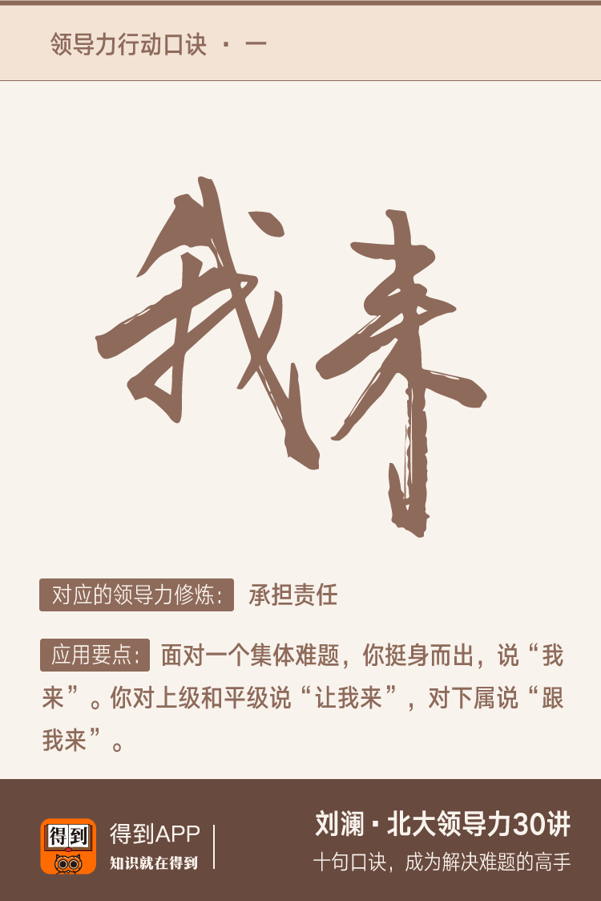
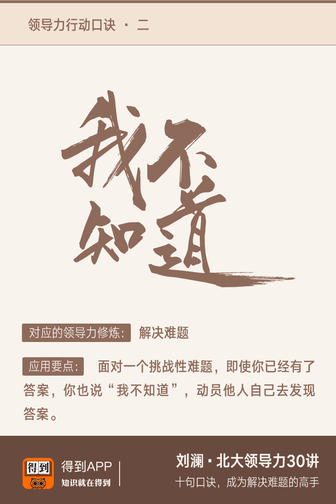

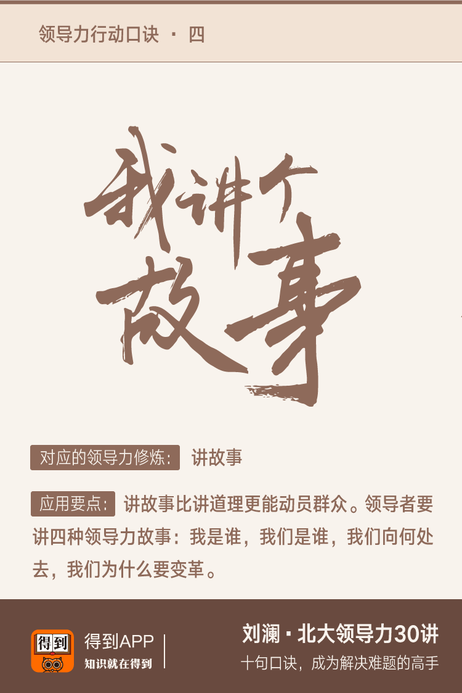

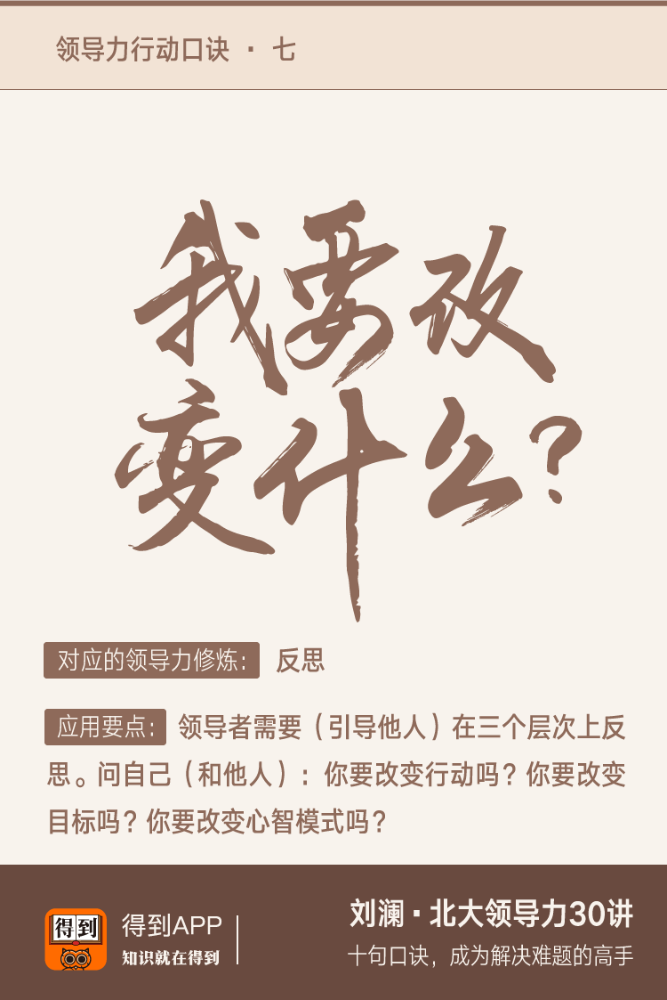
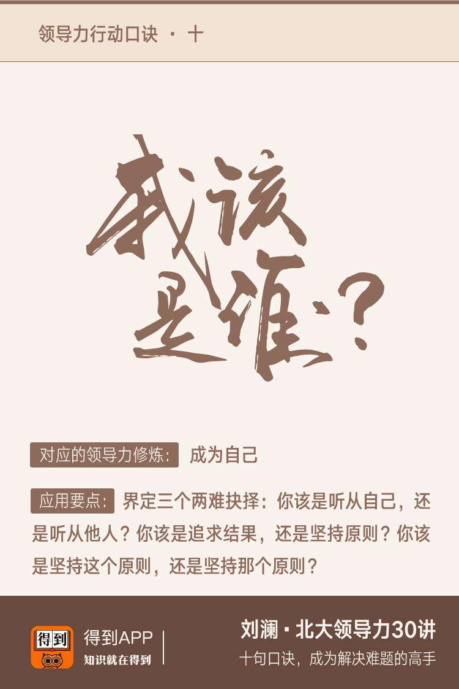
总结：
好，这是领导力课程的第二讲，我是刘澜，我们第三讲《领导力的推力与拉力》再见。

测试题与进阶书单#
我在得到主讲的领导力课程已经结束了。有学员表示想要继续听下去。对于这样的学员，我一方面要感谢你对于课程的认可，另一方面也有些担心这是一个误区。正如课程所强调的，领导力主要是一个“动词”，它需要你去行动。
当然，持续学习是必要的。假设你听了这门课，还想继续学习领导力，我推荐四本比较高级的领导力书籍给你读。
1.建体系，读《领导力：解决挑战性难题》
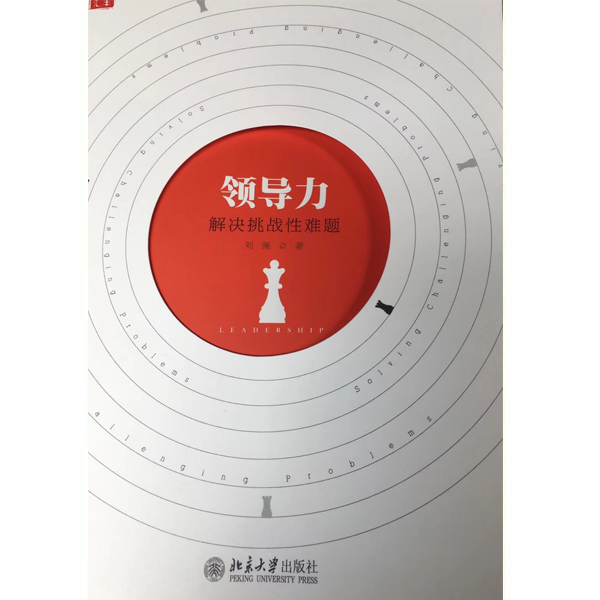
如果想要建立课程背后的领导力认知体系，我推荐这本书。这本书刚刚上市，是我为MBA教学所写的领导力教材。我在得到课程的许多主题，在这本书中有更详细的讲解。比如“最高级的智商——整合思考”这个主题，书中有很多重要的操作性内容，比如实现整合的四个步骤，以及寻找整合解的四个方向，而在音频课程中没有来得及讲。
2.有延伸，读《领袖们》
这是本老书，作者是美国前总统尼克松，是他为他认识而且钦佩的一群各国政治领导者（包括中国的周恩来）的画像。在这本书中，你会发现我在得到课程中强调过的一些主题，比如“责任”“反思”“从失败中学习”。你也会读到一些本课程没有涉及到的主题，比如领导力的“表演性”。 这本书故事鲜活，分析深刻，尽管写的只是政治家，但其实适用于任一领域的领导力。
3.躲危险，读《火线领导》
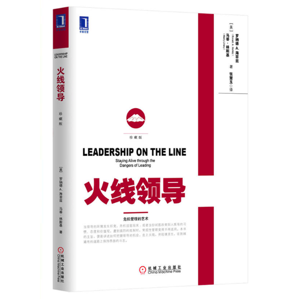
这本书的第一作者是哈佛肯尼迪学院的领导力大师海菲兹。这本书在我看来，主要讲的是如何避免领导力的“危险”。领导力是动员群众解决难题，在这个过程中难免会遭遇危险：有人反对你，有人暗算你……海菲兹和他的合作者非常现实，他们告诉你发挥领导力会遭遇哪些危险，应该怎样应对。
4.悟人生，读《论领导力》
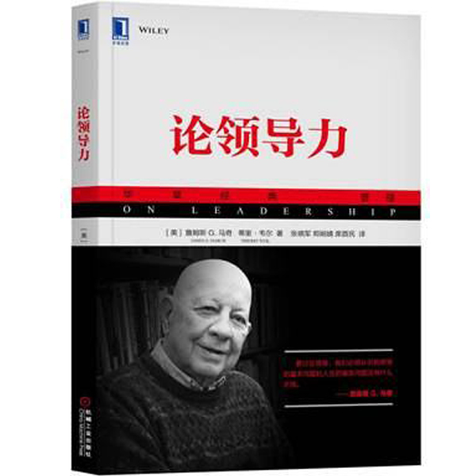
这本书是学术大师詹姆斯·马奇在斯坦福大学传奇性的领导力课程的讲稿。这本书很高级，融领导力、管理学、哲学与文学于一体。马奇用西方的四大文学名著——《奥赛罗》《战争与和平》《圣女贞德》《堂吉诃德》——来讲领导力。我十年前读到这本书的英文版，大呼过瘾。终于，今年出了中文版。我每次重读，都有新的收获。提醒一下，很多人会觉得这本书晦涩难懂。